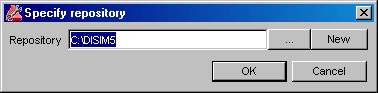
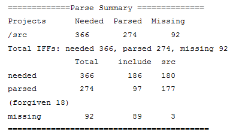

DIScover 7.5
Installation and Administration Guide
Contains Java™ software developed by Sun Microsystems, Inc. © Copyright Sun Microsystems, Inc. All Rights
Reserved. Java and Java-based marks are trademarks or registered trademarks of Sun Microsystems, Inc. in the United
States and other countries.


Table of Contents
Chapters
1
Welcome to DIScover. . . . . . . . . . 1
About This Guide . . . . . . . . . . . . . . . . . . . . . . . . . . . . . . . . . . . . . . . . . . . 2
Related Documentation . . . . . . . . . . . . . . . . . . . . . . . . . . . . . . . . . . . . . . 4
Typographical Conventions . . . . . . . . . . . . . . . . . . . . . . . . . . . . . . . . . . 5
What’s New in This Release . . . . . . . . . . . . . . . . . . . . . . . . . . . . . . . . . . 6
Roles . . . . . . . . . . . . . . . . . . . . . . . . . . . . . . . . . . . . . . . . . . . . . . . . . . . . . . 7
Assumptions . . . . . . . . . . . . . . . . . . . . . . . . . . . . . . . . . . . . . . . . . . . . . . . 7
Getting Help . . . . . . . . . . . . . . . . . . . . . . . . . . . . . . . . . . . . . . . . . . . . . . . 8
Professional Services . . . . . . . . . . . . . . . . . . . . . . . . . . . . . . . . . . . . . . . . 9
Documentation Feedback . . . . . . . . . . . . . . . . . . . . . . . . . . . . . . . . . . . 10
Where To Go From Here . . . . . . . . . . . . . . . . . . . . . . . . . . . . . . . . . . . . 10
2
Understanding DIScover . . . . . . . . . . . . . . . . . . . . . . 13
DIScover Overview . . . . . . . . . . . . . . . . . . . . . . . . . . . . . . . . . . . . 14
Features and Benefits . . . . . . . . . . . . . . . . . . . . . . . . . . . . . . . . . . . 14
Core Concepts . . . . . . . . . . . . . . . . . . . . . . . . . . . . . . . . . . . . . . . . . . . . . 15
Repository . . . . . . . . . . . . . . . . . . . . . . . . . . . . . . . . . . . . . . . . . . . . 15
Information Model . . . . . . . . . . . . . . . . . . . . . . . . . . . . . . . . . . . . . 15
Project . . . . . . . . . . . . . . . . . . . . . . . . . . . . . . . . . . . . . . . . . . . . . . . . 16
Model Server . . . . . . . . . . . . . . . . . . . . . . . . . . . . . . . . . . . . . . . . . . 16
Build Server . . . . . . . . . . . . . . . . . . . . . . . . . . . . . . . . . . . . . . . . . . . 16
Entities and Instances . . . . . . . . . . . . . . . . . . . . . . . . . . . . . . . . . . . 16
Queries . . . . . . . . . . . . . . . . . . . . . . . . . . . . . . . . . . . . . . . . . . . . . . . 17
DIScover Components . . . . . . . . . . . . . . . . . . . . . . . . . . . . . . . . . 17
Model Browser . . . . . . . . . . . . . . . . . . . . . . . . . . . . . . . . . . . . . . . . 17
Developer Xpress . . . . . . . . . . . . . . . . . . . . . . . . . . . . . . . . . . . . . . 18
Access . . . . . . . . . . . . . . . . . . . . . . . . . . . . . . . . . . . . . . . . . . . . . . . . 18
DIScover in the Enterprise Environment . . . . . . . . . . . . . . . . . . 19
Administrator Responsibilities . . . . . . . . . . . . . . . . . . . . . . . . . . . . . . . 20
3
Getting Started With DIScover . . . . . . . . . . . . . . . . . 23
System Requirements . . . . . . . . . . . . . . . . . . . . . . . . . . . . . . . . . . . . . . . 24
Operating Systems . . . . . . . . . . . . . . . . . . . . . . . . . . . . . . . . . . . . . 24
DIScover Requirements . . . . . . . . . . . . . . . . . . . . . . . . . . . . 25
Supported Languages . . . . . . . . . . . . . . . . . . . . . . . . . . . . . . . . . . 25
Supported Compilers . . . . . . . . . . . . . . . . . . . . . . . . . . . . . . . . . . . 26
Integrated Development Environment Support . . . . . . . . . . . . 26
Configuration Management Support . . . . . . . . . . . . . . . . . . . . . . 26
i
Table of Contents
Installation Design . . . . . . . . . . . . . . . . . . . . . . . . . . . . . . . . . . . . . . . . . 27
Before You Install . . . . . . . . . . . . . . . . . . . . . . . . . . . . . . . . . . . . . . . . . . 27
Using DIScover 7.4 Models . . . . . . . . . . . . . . . . . . . . . . . . . . . . . 28
Installing DIScover . . . . . . . . . . . . . . . . . . . . . . . . . . . . . . . . . . . . 29
Configuring Environment Variables for UNIX Clients . . . . . . . . . . . 34
Modifying Your Path . . . . . . . . . . . . . . . . . . . . . . . . . . . . . . . . . . . 34
Font Installation . . . . . . . . . . . . . . . . . . . . . . . . . . . . . . . . . . . . . . . 35
Remote Display . . . . . . . . . . . . . . . . . . . . . . . . . . . . . . . . . . . . . . . . 35
Local Display . . . . . . . . . . . . . . . . . . . . . . . . . . . . . . . . . . . . . . . . . . 36
XVision Configuration . . . . . . . . . . . . . . . . . . . . . . . . . . . . . . . . . . 36
Exceed Configuration . . . . . . . . . . . . . . . . . . . . . . . . . . . . . . . . . . . 37
Other Font Issues . . . . . . . . . . . . . . . . . . . . . . . . . . . . . . . . . . . . . . 37
Uninstalling the DIScover Client . . . . . . . . . . . . . . . . . . . . . . . . 38
4
Setting Up FLEXlm Licensing . . . . . . . . . . . . . . . . . . . . . . 39
Where To Go Next . . . . . . . . . . . . . . . . . . . . . . . . . . . . . . . . . . . . . . . . . 40
DIScover and the Integrity Solution . . . . . . . . . . . . . . . . . . . . . . 40
The FLEXlm Model . . . . . . . . . . . . . . . . . . . . . . . . . . . . . . . . . . . . . . . . . 41
License Manager Daemon . . . . . . . . . . . . . . . . . . . . . . . . . . . . . . . 41
Daemon . . . . . . . . . . . . . . . . . . . . . . . . . . . . . . . . . . . . . . . . . . 41
License File . . . . . . . . . . . . . . . . . . . . . . . . . . . . . . . . . . . . . . . . . . . . 42
Application Program . . . . . . . . . . . . . . . . . . . . . . . . . . . . . . . . . . . 43
Supported Platforms . . . . . . . . . . . . . . . . . . . . . . . . . . . . . . . . . . . 43
Understanding the Licensing Process . . . . . . . . . . . . . . . . . . . . . . . . . 43
Installing a FLEXlm License Server . . . . . . . . . . . . . . . . . . . . . . . . . . . 44
On Windows . . . . . . . . . . . . . . . . . . . . . . . . . . . . . . . . . . . . . . . . . . 44
On UNIX . . . . . . . . . . . . . . . . . . . . . . . . . . . . . . . . . . . . . . . . . . . . . 47
FLEXlm Temporary Licenses . . . . . . . . . . . . . . . . . . . . . . . . . . . . . . . . 48
Getting a Temporary License . . . . . . . . . . . . . . . . . . . . . . . . . . . . 48
Using Temporary Licenses . . . . . . . . . . . . . . . . . . . . . . . . . . . . . . 48
FLEXlm Permanent Licenses . . . . . . . . . . . . . . . . . . . . . . . . . . . . . . . . . 48
Getting a Permanent License . . . . . . . . . . . . . . . . . . . . . . . . . . . . . 48
5
Getting Started With an Information Model . . . . . . . . . . . 51
Making an Information Model Available for Browsing . . . . . . . . . . 52
Preparing to Create an Information Model . . . . . . . . . . . . . . . . . . . . . 52
Design Considerations . . . . . . . . . . . . . . . . . . . . . . . . . . . . . . . . . . 52
Checking Your Build System Requirements . . . . . . . . . . . . . . . . 53
Starting the Administration Client . . . . . . . . . . . . . . . . . . . . . . . . . . . . 54
The Administration Client Interface . . . . . . . . . . . . . . . . . . . . . . . . . . 56
Application Window . . . . . . . . . . . . . . . . . . . . . . . . . . . . . . . . . . . 56
Title Bar . . . . . . . . . . . . . . . . . . . . . . . . . . . . . . . . . . . . . . . . . . . . . . 56
Menu Bar . . . . . . . . . . . . . . . . . . . . . . . . . . . . . . . . . . . . . . . . . . . . . 56
Toolbar . . . . . . . . . . . . . . . . . . . . . . . . . . . . . . . . . . . . . . . . . . . . . . . 56
Navigator Pane . . . . . . . . . . . . . . . . . . . . . . . . . . . . . . . . . . . . . . . . 57
ii
i n s t a l l a t i o n & a d m i n i s t r a t i o n

Table of Contents
Contents Pane . . . . . . . . . . . . . . . . . . . . . . . . . . . . . . . . . . . . . . . . . 57
Shortcut Menu . . . . . . . . . . . . . . . . . . . . . . . . . . . . . . . . . . . . . . . . . 59
Quitting a Administration Session . . . . . . . . . . . . . . . . . . . . . . . . . . . . 59
Creating a Repository . . . . . . . . . . . . . . . . . . . . . . . . . . . . . . . . . . . . . . . 60
Creating an Information Model . . . . . . . . . . . . . . . . . . . . . . . . . . . . . . 64
Customizing GetBuildLog.pl . . . . . . . . . . . . . . . . . . . . . . . . . . . . 80
Starting a Full Model Build . . . . . . . . . . . . . . . . . . . . . . . . . . . . . . . . . . 82
Starting a Model Version . . . . . . . . . . . . . . . . . . . . . . . . . . . . . . . . . . . . 85
6
Managing an Information Model . . . . . . . . . . . . . . . . . . . . 87
Updating an Information Model Incrementally . . . . . . . . . . . . . . . . . 88
Step One: Prepare for an Incremental Model Build . . . . . . . . . . 89
Step Two: Configure Incremental Model Build Variables . . . . 89
Step Three: Start the Incremental Model Build . . . . . . . . . . . . . 91
Resuming a Model Build . . . . . . . . . . . . . . . . . . . . . . . . . . . . . . . . . . . . 93
Editing Model Configuration Information . . . . . . . . . . . . . . . . . . . . . 95
Deleting Models and Model Versions . . . . . . . . . . . . . . . . . . . . . . . . . 96
Analyzing Logs and Debugging Models . . . . . . . . . . . . . . . . . . . . . . . 97
Analyzing Model Build Output . . . . . . . . . . . . . . . . . . . . . . . . . . 98
Parse Errors . . . . . . . . . . . . . . . . . . . . . . . . . . . . . . . . . . . . . . . . . . . 99
Selecting a Parser Mode . . . . . . . . . . . . . . . . . . . . . . . . . . . . . . . . 107
Running Autoflag Scripts . . . . . . . . . . . . . . . . . . . . . . . . . . . . . . 108
Debugging Parse Errors . . . . . . . . . . . . . . . . . . . . . . . . . . . . . . . . 108
Creating Preprocessed Output . . . . . . . . . . . . . . . . . . . . . . . . . . 110
Catastrophic Errors . . . . . . . . . . . . . . . . . . . . . . . . . . . . . . . . . . . . 111
Validating Your Model . . . . . . . . . . . . . . . . . . . . . . . . . . . . . . . . . . . . 112
Stopping a Model Version . . . . . . . . . . . . . . . . . . . . . . . . . . . . . . . . . . 113
Checking and Fixing Model Servers . . . . . . . . . . . . . . . . . . . . . . . . . 114
Scheduling Model Builds With crontab . . . . . . . . . . . . . . . . . . . 114
Scheduling Model Builds With Windows Scheduler . . . . . . . 115
7
Submission Check . . . . . . . . . . . . . . . . . . . . . . . . . . . . . . 117
Submission Check Components . . . . . . . . . . . . . . . . . . . . . . . . . . . . . 118
Submission Check Policy . . . . . . . . . . . . . . . . . . . . . . . . . . . . . . . . . . . 118
Starting a Build Server . . . . . . . . . . . . . . . . . . . . . . . . . . . . . . . . . . . . . 121
iii
Table of Contents
Appendixes
A
Troubleshooting . . . . . . . . . . . . . . . . . . . . . . . . . . . . . . . 123
Environmental Errors . . . . . . . . . . . . . . . . . . . . . . . . . . . . . . . . . . . . . . 124
Disk Space . . . . . . . . . . . . . . . . . . . . . . . . . . . . . . . . . . . . . . . . . . . 124
Temporary Space at Startup . . . . . . . . . . . . . . . . . . . . . . . . . . . . 124
Swap Space . . . . . . . . . . . . . . . . . . . . . . . . . . . . . . . . . . . . . . . . . . 124
Permissions . . . . . . . . . . . . . . . . . . . . . . . . . . . . . . . . . . . . . . . . . . 125
Pmod Write Conflict . . . . . . . . . . . . . . . . . . . . . . . . . . . . . . . . . . . 125
Preprocessing Errors . . . . . . . . . . . . . . . . . . . . . . . . . . . . . . . . . . . . . . 126
File Not Found . . . . . . . . . . . . . . . . . . . . . . . . . . . . . . . . . . . . . . . . 126
Unrecognized Language . . . . . . . . . . . . . . . . . . . . . . . . . . . . . . . 127
Model Errors . . . . . . . . . . . . . . . . . . . . . . . . . . . . . . . . . . . . . . . . . . . . . 127
Model Build Diagnostics . . . . . . . . . . . . . . . . . . . . . . . . . . . . . . . 127
User Setup Errors . . . . . . . . . . . . . . . . . . . . . . . . . . . . . . . . . . . . . . . . . 128
Alloc Color . . . . . . . . . . . . . . . . . . . . . . . . . . . . . . . . . . . . . . . . . . . 128
Window Managers . . . . . . . . . . . . . . . . . . . . . . . . . . . . . . . . . . . . 128
Project Definition File Errors . . . . . . . . . . . . . . . . . . . . . . . . . . . . . . . . 128
Logical Name Conflict . . . . . . . . . . . . . . . . . . . . . . . . . . . . . . . . . 128
Unnecessary Leading Slash . . . . . . . . . . . . . . . . . . . . . . . . . . . . . 129
Unmatched Logical Name . . . . . . . . . . . . . . . . . . . . . . . . . . . . . . 129
Physical Name Superseded In PDF . . . . . . . . . . . . . . . . . . . . . . 129
B
The DIScover C/C++ Parser . . . . . . . . . . . . . . . . . . 131
Defining Symbols . . . . . . . . . . . . . . . . . . . . . . . . . . . . . . . . . . . . . . . . . 132
Selecting a Parser Mode . . . . . . . . . . . . . . . . . . . . . . . . . . . . . . . . . . . . 132
C/C++ Model Building Flags . . . . . . . . . . . . . . . . . . . . . . . . . . . . . . . 133
Operational Considerations . . . . . . . . . . . . . . . . . . . . . . . . . . . . . . . . 152
Environment Variables . . . . . . . . . . . . . . . . . . . . . . . . . . . . . . . . 152
Diagnostic Messages . . . . . . . . . . . . . . . . . . . . . . . . . . . . . . . . . . . 152
References to Destructors . . . . . . . . . . . . . . . . . . . . . . . . . . . . . . 152
Supported Features . . . . . . . . . . . . . . . . . . . . . . . . . . . . . . . . . . . . . . . . 153
Acceptable C++ Dialect . . . . . . . . . . . . . . . . . . . . . . . . . . . . . . . . 153
Acceptable C Dialect . . . . . . . . . . . . . . . . . . . . . . . . . . . . . . . . . . . 168
Namespaces Support . . . . . . . . . . . . . . . . . . . . . . . . . . . . . . . . . . 192
Template Instantiation Support . . . . . . . . . . . . . . . . . . . . . . . . . 194
Predefined Macros . . . . . . . . . . . . . . . . . . . . . . . . . . . . . . . . . . . . 198
Pragmas . . . . . . . . . . . . . . . . . . . . . . . . . . . . . . . . . . . . . . . . . . . . . 198
C
Embedded SQL Support . . . . . . . . . . . . . . . . . . . . . . . . . 201
ESQL Functionality . . . . . . . . . . . . . . . . . . . . . . . . . . . . . . . . . . . . . . . . 202
Browsing and Navigation . . . . . . . . . . . . . . . . . . . . . . . . . . . . . . 202
ESQL Includes . . . . . . . . . . . . . . . . . . . . . . . . . . . . . . . . . . . . . . . . 202
Data Type Support: VARCHAR . . . . . . . . . . . . . . . . . . . . . . . . . 202
Supported Options . . . . . . . . . . . . . . . . . . . . . . . . . . . . . . . . . . . . 203
Enabling ESQL Support . . . . . . . . . . . . . . . . . . . . . . . . . . . . . . . . . . . . 203
Project Scope . . . . . . . . . . . . . . . . . . . . . . . . . . . . . . . . . . . . . . . . . 203
iv
i n s t a l l a t i o n & a d m i n i s t r a t i o n

Table of Contents
Make Rule . . . . . . . . . . . . . . . . . . . . . . . . . . . . . . . . . . . . . . . . . . . 204
Preferences . . . . . . . . . . . . . . . . . . . . . . . . . . . . . . . . . . . . . . . . . . . 204
Debugging . . . . . . . . . . . . . . . . . . . . . . . . . . . . . . . . . . . . . . . . . . . 205
D
SQL and PL/SQL Support . . . . . . . . . . . . . . . . . . . . . . . . 207
About SQL and PL/SQL . . . . . . . . . . . . . . . . . . . . . . . . . . . . . . . . . . . 208
Supporting External References . . . . . . . . . . . . . . . . . . . . . . . . . 208
Using -include . . . . . . . . . . . . . . . . . . . . . . . . . . . . . . . . . . . . . . . . 209
Using -symbols . . . . . . . . . . . . . . . . . . . . . . . . . . . . . . . . . . . . . . . 209
Using -include and -symbols Together . . . . . . . . . . . . . . . . . . . 210
Running the SQL Parser Independently . . . . . . . . . . . . . . . . . . 211
Updating the Symbols File . . . . . . . . . . . . . . . . . . . . . . . . . . . . . 211
Using PL/SQL with DIScover . . . . . . . . . . . . . . . . . . . . . . . . . . 213
SQL and
PL/SQL Entity Types . . . . . . . . . . . . . . . . . . . . . . . . . . . . . . . . . . 213
Viewing SQL and PL/SQL Entities Exclusively . . . . . . . . . . . 213
Navigating and Querying SQL and PL/SQL Entity Types . . 214
Available Queries for SQL and PL/SQL . . . . . . . . . . . . . . . . . . 215
E
Java Support . . . . . . . . . . . . . . . . . . . . . . . . . . . . . . . . . . 225
Using DIScover With Java . . . . . . . . . . . . . . . . . . . . . . . . . . . . . 226
Entity Types . . . . . . . . . . . . . . . . . . . . . . . . . . . . . . . . . . . . . . . . . . 226
Queries . . . . . . . . . . . . . . . . . . . . . . . . . . . . . . . . . . . . . . . . . . . . . . 226
Graphical Views . . . . . . . . . . . . . . . . . . . . . . . . . . . . . . . . . . . . . . 228
Access Commands and Attributes . . . . . . . . . . . . . . . . . . . . . . . 228
Java Model Building Flags . . . . . . . . . . . . . . . . . . . . . . . . . . . . . . 229
F
Customizing Your Configuration Management
Integration
231
About DIScover CM Integration . . . . . . . . . . . . . . . . . . . . . . . . 232
CM From a User Perspective . . . . . . . . . . . . . . . . . . . . . . . . . . . . 232
cmdriver . . . . . . . . . . . . . . . . . . . . . . . . . . . . . . . . . . . . . . . . . . . . . 233
The CM Configuration File . . . . . . . . . . . . . . . . . . . . . . . . . . . . . . . . . 234
Commands and Attributes . . . . . . . . . . . . . . . . . . . . . . . . . . . . . . . . . 235
<cm_root> . . . . . . . . . . . . . . . . . . . . . . . . . . . . . . . . . . . . . . . . . . . 235
<cm> . . . . . . . . . . . . . . . . . . . . . . . . . . . . . . . . . . . . . . . . . . . . . . . . 235
<cm_attr> . . . . . . . . . . . . . . . . . . . . . . . . . . . . . . . . . . . . . . . . . . . . 236
<cm_li> . . . . . . . . . . . . . . . . . . . . . . . . . . . . . . . . . . . . . . . . . . . . . . 236
<cm_exec> . . . . . . . . . . . . . . . . . . . . . . . . . . . . . . . . . . . . . . . . . . . 237
<cm_cmd> . . . . . . . . . . . . . . . . . . . . . . . . . . . . . . . . . . . . . . . . . . . 237
Predefined Attributes . . . . . . . . . . . . . . . . . . . . . . . . . . . . . . . . . . 238
The autoco Command and autocomment Attribute . . . . . . . . 239
Deploying CM Changes . . . . . . . . . . . . . . . . . . . . . . . . . . . . . . . . . . . . 239
Create Skeleton of $PSETHOME on Your Local Machine . . . 239
Create Working Copy . . . . . . . . . . . . . . . . . . . . . . . . . . . . . . . . . 240
Test Changes . . . . . . . . . . . . . . . . . . . . . . . . . . . . . . . . . . . . . . . . . 240
v
Table of Contents
Notify Users . . . . . . . . . . . . . . . . . . . . . . . . . . . . . . . . . . . . . . . . . . 240
Restore Working Copy to Host . . . . . . . . . . . . . . . . . . . . . . . . . . 241
Sample cm.xml . . . . . . . . . . . . . . . . . . . . . . . . . . . . . . . . . . . . . . . . . . . 241
CM Integration at the Client Level . . . . . . . . . . . . . . . . . . . . . . . . . . . 243
G
Glossary of Terms . . . . . . . . . . . . . . . . . . . . . . . . . . . . . . 245
Index . . . . . . . . . . . . . . . . . . . . . . . . . . . . . . . . . . . . . . . . . . . . 251
vi
i n s t a l l a t i o n & a d m i n i s t r a t i o n


Welcome to DIScover
Enterprise Edition
1
DIScover (hereafter referred to as
DIScover) is a powerful browsing and modeling tool that enables you
to navigate and analyze your software development project’s source code.
DIScover operates on a database called the information model that
captures the relationships between all entities in the code base. This
provides a detailed view and high-level architectural perspective of the
entire application for you and your development team.
As projects mature, source code grows in size and complexity, resulting in
poor quality and long release cycles. As a software developer, you have
many day-to-day tasks (for example, navigation, analysis, code review)
that are tedious, difficult to perform, and often do not yield complete or
accurate results.
DIScover automates labor-intensive tasks by providing you with
knowledge about your source code, faster than traditional techniques,
facilitating understanding of the software at all levels. By improving
overall comprehension, DIScover frees your time for critical tasks and
improves your team’s overall productivity.
This chapter covers the following topics:
“About This Guide” on page 2
“Related Documentation” on page 4
“Typographical Conventions” on page 5
“What’s New in This Release” on page 6
“Roles” on page 7
“Assumptions” on page 7
“Getting Help” on page 8
“Professional Services” on page 9
“Documentation Feedback” on page 10
“Where To Go From Here” on page 10
1
Chapter 1: Welcome to DIScover
About This Guide
The following details individual chapter content:
Chapter 2: “Understanding DIScover” on page 13
Introduces the DIScover suite of tools, and provides the
information a system administrator needs to know before planning a
deployment. Describes a typical enterprise installation, and discusses
administrative considerations and responsibilities.
Chapter 3: “Getting Started With DIScover” on page 23
Provides instructions for creating a central DIScover installation
and discusses deployment considerations such as system
requirements, and client options. Also details procedures for installing
and configuring client machines.
Chapter 4: “Setting Up FLEXlm Licensing” on page 39
Explains the DIScover licensing schema and provides
instructions on how to manage your licenses.
Chapter 5: “Getting Started With an Information Model” on page 51
Discusses the importance of the DIScover information model and
includes tips to help you plan your model deployment. Introduces the
central set of procedures used to create, manage, and maintain models
and model servers.
Chapter 6: “Managing an Information Model” on page 87
Explains how to perform incremental model builds, edit model
configuration, delete models and model versions, resume a model
build, analyze logs and debug models, and validate a model.
Chapter 7: “Submission Check” on page 117
Describes how to setup and manage the submission check feature for
Developer Xpress.
Appendix A: “Troubleshooting” on page 123
Presents common errors that can occur due to environmental and user
setup conditions and how to fix them. Details messages and
troubleshooting techniques for the model creation errors, including
those which occur during pre-processing and model building.
Includes an historical reference section on project definition file-
related errors that can occur in older releases of DISCOVER/DIScover.
2
i n s t a l l a t i o n & a d m i n i s t r a t i o n

About This Guide
Appendix B: “The DIScover C/C++ Parser” on page 131
Describes how the DIScover parser works when building a
model based on C/C++ source code.
Appendix C: “Embedded SQL Support” on page 201
Describes DIScover’s embedded support for Structured Query
Language programming. Includes information on how the model
build process treats SQL, ESQL includes, supported data types and
options, available preferences, and debugging techniques specific to
SQL model builds.
Appendix D: “SQL and PL/SQL Support” on page 207
Describes DIScover’s embedded support for Procedural
Language/ Structured Query Language programming. Includes
reference material for end-user education on how DIScover
handles SQL and PL/SQL at the client (Browser, Developer Xpress,
Access) level.
Appendix E: “Java Support” on page 225 on page 225
Describes DIScover’s support for Java programming. Covers
Java considerations for pre-processing and model builds. Includes
reference material for end-user education on how DIScover
handles Java at the client (Browser, Developer Xpress, Access) level.
Appendix F: “Customizing Your Configuration Management
Integration” on page 231
Describes built-in DIScover configuration management support
and explains how to customize DIScover to suit the needs of
your CM system. Includes instructions for modifying the CM
configuration script, cm.xml to build a CM menu and options for your
end users.
Appendix G: “Glossary of Terms” on page 245
Describes common DIScover terms.
3
Chapter 1: Welcome to DIScover
Related Documentation
To provide you with the most convenient means of retrieving information,
product documentation is available in several formats: print and Adobe
Acrobat’s Portable Document Format (PDF).
Documentation
Print
PDF
Online
DIScover
Yes
Yes
Yes
Installation and Administration Guide
DIScover User
No
Yes
Yes
Guide for Windows
DIScover User
No
Yes
Yes
Guide for UNIX
DIScover
No
Yes
Yes
Access Guide
Release Notes
No
No
Yes
PDF files are located in the \pdf subdirectory of the distribution CD. To
view them, you must have Adobe Acrobat Reader™ installed on your
machine. You can install the reader by running the setup program in the
\acrobat subdirectory on the CD. Once you have installed the reader,
whenever you open a PDF file the reader starts automatically.
You can access online help from within the administration client in the
following ways:
Help > Contents.
F1 key.
In addition to the DIScover Installation and
Administration Guide, the other documentation included in this release is as
follows:
DIScover User Guide for Windows explains how to
use all the features of the model browser and Developer Xpress client
on the Windows platform.
DIScover User Guide for UNIX explains how to
use all the features of the model browser and Developer Xpress client
on the UNIX platform.
4
i n s t a l l a t i o n & a d m i n i s t r a t i o n

Typographical Conventions
DIScover Access Guide provides platform-
independent instructions for using Access, a Tcl-based programming
language for interfacing with the DIScover database and
customizing DIScover functionality to suit the needs of your
environment.
Online release notes provide the most up-to-date details about this
release. You should review these notes as they may contain
information that only became available after the printed
documentation went to press. You can read the release notes in the
CD Browser or as HTML documents in a Web browser.
NOTE
Typographical Conventions
Throughout this guide, the following typographical conventions identify
the features, functions, and components of DIScover:
Items in Documentation
Appear as
Menus, commands
Tools > Caliper
Drop-down menus
the Session command
Dialog boxes, features
Edit Options, Cancel, OK
Screen information, messages
Enter the new group name:
Environment Variables
TMPDIR
Path names
c:\scrint\work
New terms
appear in italics the first time
Keyboard keys
appear in caps, for example ENTER
Keyboard shortcuts
Keyboard: ALT, I, N
5
Chapter 1: Welcome to DIScover
NOTE
A note provides you with information that supplements the key points of the
subject. A note may also supply information that applies only in particular
cases.
IMPORTANT
An important note provides you with information that is essential for
completing a task.
CAUTION
A caution note advises you about situations that have the potential to result in
a loss of data.
What’s New in This Release
For more detailed information on the following features, see the
CodeIntegrityWhatsNew.pdf located in the \pdf subdirectory of the
distribution CD.
simplified build scripts
more robust installation
administration GUI
incremental model builds
additional impact queries
integration with MKS Integrity Manager
print/save/export capabilities
6
i n s t a l l a t i o n & a d m i n i s t r a t i o n

Roles
Roles
There are two main roles when using DIScover: The administrator
installs and configures DIScover, builds and validates information
models, starts and stops servers, performs regular housekeeping for model
builds, clears out old models, and sets up new DIScover users. The
user is anyone who needs to work with DIScover information models.
Assumptions
Before using DIScover, we assume the following about your
knowledge and experience:
You fully understand the hardware platforms and operating systems
you are installing DIScover on, that is, Windows, Solaris, and
HP-UX.
You understand the programming languages used in your source
code, that is, ANSI C/C++, Visual C++, K&R C, Java, Oracle SQL,
Informix SQL, and Sybase SQL.
You understand the compilers used to build your software projects,
that is, Microsoft Visual C++, Sun cc, Sun WorkShop C++, GNU C/
C++, HP cc, HP aC++, and Sun SDK Java.
If you are using an Integrated Development Environment (IDE) with
DIScover, for example, Borland JBuilder, you understand how to
use it.
If you are using a Configuration Management (CM) system with
DIScover, for example, Source Integrity, you understand how to
use it.
7
Chapter 1: Welcome to DIScover
Getting Help
8
i n s t a l l a t i o n & a d m i n i s t r a t i o n

9
Chapter 1: Welcome to DIScover
Documentation Feedback
Where To Go From Here
To Do This …
See …
Understand DIScover features
“Understanding DIScover” on
and concepts.
page 13
Install the DIScover client.
“Installing DIScover” on page 29
Set up FLEXlm licensing.
“Setting Up FLEXlm Licensing” on
page 39
Set up an information model.
“Preparing to Create an Information
Model” on page 52
Start the administration client.
“Starting the Administration Client” on
page 54
Learn about the administration client
“The Administration Client Interface”
interface.
on page 56
Create a repository.
“Creating a Repository” on page 60
10
i n s t a l l a t i o n & a d m i n i s t r a t i o n

Where To Go From Here
To Do This …
See …
Create an information model.
“Creating an Information Model” on
page 64
Build a model version.
“Starting a Full Model Build” on
page 82
Start a model version.
“Starting a Model Version” on page 85
Update an information model
“Updating an Information Model
incrementally.
Incrementally” on page 88
Manually edit a model’s configuration.
“Editing Model Configuration
Information” on page 95
Delete models and model versions.
“Deleting Models and Model Versions”
on page 96
Analyze a build log and debug a
“Analyzing Logs and Debugging
model.
Models” on page 97
Stop a model version.
“Stopping a Model Version” on
page 113
Set up Developer Xpress’ Submission
“Submission Check” on page 117
Check feature.
Solve common model problems.
“Troubleshooting” on page 123
Learn how the DIScover C/C++
“The DIScover C/C++ Parser” on
parser works with source code
page 131
containing C/C++.
Learn how the DIScover parser
“Embedded SQL Support” on
works with source code containing
page 201
Embedded SQL.
Learn how the DIScover parser
“SQL and PL/SQL Support” on
works with source code containing
page 207
SQL and PL/SQL.
Learn how the DIScover parser
“Java Support” on page 225
works with source code containing
Java.
Customize your selected configuration
“Customizing Your Configuration
management system.
Management Integration” on page 231
Learn DIScover terms.
“Glossary of Terms” on page 245
11
Chapter 1: Welcome to DIScover
12
i n s t a l l a t i o n & a d m i n i s t r a t i o n


Understanding
DIScover
2
KEY TERMS: model browser, project, information model, pmod, entity, instance,
model server, build server, query, Developer Xpress, Access
DIScover is a unique set of tools that allows you to gain an
unprecedented understanding of your source code so that you may
effectively continue development and maintain quality standards as you
complete your software projects. This chapter details DIScover
features and functionality and introduces you to some key concepts in
working with the Enterprise Edition of the product.
This chapter covers the following topics:
“DIScover Overview” on page 14
“Core Concepts” on page 15
“DIScover Components” on page 17
“DIScover in the Enterprise Environment” on page 19
“Administrator Responsibilities” on page 20
13
Chapter 2: Understanding DIScover
DIScover Overview
DIScover is a complete enterprise-wide, software development
information system comprised of a series of tools created to address some
of today’s most challenging software development problems. DIScover examines source code and related artifacts, creating an accessible,
scalable, common database of information (the information model). The
information model captures the relationships among all entities resulting
in a high-level architectural perspective and a detailed view of the entire
application, which can be shared across the organization and monitored
over time. DIScover enables software professionals to more
thoroughly understand their software systems, to more efficiently and
accurately effect changes to a large body of source code, and to more easily
re-engineer or reorganize a complex software system, thus improving
organizational productivity and quality while reducing cost and time to
market.
DIScover is a solution written for developers, by developers who
understand the unique challenges of authoring and understanding
complex bodies of source code in a team environment. As a software
developer, you know that it can be difficult to decipher existing bodies of
source or make intelligent decisions on future actions with little supporting
data, but these tasks are often necessary before you can effectively
complete your piece of a development project.
DIScover combines the feature-rich Browser and Quality Analysis
interfaces with special purpose Access and Developer Xpress clients to
create a robust, fully customizable code comprehension and quality system
to meet the needs of your development environment.
Features and
DIScover’s rich, sophisticated picture of your source code allows you
to:
Benefits
comprehend and manage your software development assets
standardize and automate your code quality analysis
The ability to quickly and completely comprehend existing code saves
time, allowing you to focus on development. Software projects can be
completed in a shorter time frame, at a lower cost, and with optimum
flexibility.
Impact analysis gives your team a distinct advantage—the ability to
understand how proposed changes will affect the rest of the code base
before you make them, break something, and have to remediate. Impact
analysis in fact reduces the introduction of new bugs or development
issues by 50 percent.
14
i n s t a l l a t i o n & a d m i n i s t r a t i o n

Core Concepts
Quality filters allow you to identify specific patterns in your code, and
automate coding standards. This systematic, early intervention technique
allows you to find problems in your source code—even in projects with
millions of lines of code—before your customers do, and results in dramatic
time and cost savings for your team.
Core Concepts
The following concepts are key to understanding how DIScover
works:
Repository
Information Model
Project
Model Server
Build Server
Entities and Instances
Queries
Repository
A repository is the directory containing available information models and
model versions (previously referred to as DISIM).
Information
The key to DIScover’s unique capabilities is a structure called the
information model (often referred to as model in this guide). This data
Model
repository is created when DIScover examines your source, parses the
code, and instead of creating object files, saves it in two language-
independent formats: the Source Mode Tree (SMT) and the Abstract Syntax
Tree (AST).
The parsing process recognizes individual code constructs from your
source (such as each function, class, variable, and so on) as a single entity
(described in the next section). A catalog of all your code’s symbols, line
numbers, and offsets is maintained in the SMT, while the AST retains a
richer structure of data that tracks information about these entities,
including their attributes and the relations between them. Physically, an
index of symbols and tables of relations among symbols is stored in pmod
files.
In the enterprise environment, information models are routinely created
and maintained by the DIScover administrator so individual users
can simply connect to an available model.
15
Chapter 2: Understanding DIScover
Project
A DIScover project defines the content of an individual information
model, and is designed to mirror your organization’s software
development projects. Selecting a project sets the scope of your browsing
activities, as only files and entities included in that project are available for
browsing and querying.
When building an information model, the DIScover administrator
decides which files to include in the model; this decision is based on which
individual software development projects need to be modeled and how
that project is divided. For example, an organization that is completing
development on a software application called X might actually have a
main development project called X, and smaller branches of development
individually identified by unique project names, XY and XZ.
There are several information model scenarios to fit this scheme: a single
information model that includes all source files from project X; in this case,
the information model would have a main project with all source files and
subprojects that contained only those files from the individual branches of
development. You could also have a smaller information model that
contains only the source files from project XY or XZ; in this case, you
would only have one project containing the files from that branch of
development.
We recommend checking with your administrator to understand how
models have been created in your environment, verify the names of
projects that are available to you for browsing and querying, and possibly
request that a new model be created for a project you are working on.
Model Server
A model server is a process that runs on a host machine serving the DIScover enterprise environment. This process makes information models
readily and conveniently available to end users who connect through a
Developer Xpress client or Access. Model servers communicate directly
with the information model data structure.
Build Server
Similar to a model server, a build server runs on a host machine. Its purpose,
however, is to manage Submission Check communications between the
information model and your source code. A feature of the Developer
Xpress client, Submission Check verifies the source code file’s existence in
the information model and allows you to apply standard quality filters
against it prior to its check in to your SCM system.
Entities and
The term entity is used to describe any individual element of your source
code maintained in the AST. An entity may be as large as an entire file or as
Instances
small as a variable. In the model browser, entities are categorized by name:
file, function, class, variable, method, enum, string. Selecting one category
displays all entities of that type that appear in your source code.
16
i n s t a l l a t i o n & a d m i n i s t r a t i o n

DIScover Components
The term instance refers to a single occurrence of an entity in your source. A
single entity may have multiple instances. For example, a single function
may be referenced in multiple source files; in this case, the function has a
single instance in each place in the source where it is called.
Queries
The query is the central activity of DIScover browsing tools. A query
allows you to discover information about your source code—”show me
where this function is defined in my source,” or ”show me everywhere this
class is used.” A single query can tell you such things as the number of
entities of a specific type that occur in your source, location of a specific
entity, how it is used, and how it relates to other entities in your source.
You can also employ a series of queries to create a more complex analysis
of your source.
DIScover offers a vast list of predefined queries for browsing
activities, as well as the set of queries specifically related to code quality
standards that are used with DIScover.
You can execute a query using one of several methods: through making
selections in the Browser window, through your chosen integrated
development environment (IDE), though Developer Xpress, or through an
Access command line.
DIScover Components
The following components make up DIScover:
Model Browser
Developer Xpress
Access
Model Browser
The model browser is the primary graphical user interface (GUI) used for
exploring and querying your information model. It allows you to scan
existing projects and to browse your information model to collect data
about your source. Model browser advantages include:
direct communication with your information model
graphical interpretation of the relationships between source code
entities
The components of the GUI are described in the DIScover
Edition User Guide for Windows and the DIScover User
Guide for UNIX.
17
Chapter 2: Understanding DIScover
Developer
Developer Xpress is the lightweight client that allows you to navigate
through your application’s project structure and query your information
Xpress
model. This approach is efficient and offers quick results. The Developer
Xpress advantages include:
no setup required
fast startup
little or no user training required
automatic integration with your IDE
identical GUI for UNIX and Windows
For more information on using Developer Xpress, see the DIScover
Enterprise Edition User Guide for Windows or the DIScover
Edition User Guide for UNIX.
Access
Access is a Tcl-based language that allows you to write scripts that perform
complex operations in DIScover. Access communicates directly with
the information model through a command line interface in the model
browser and enables enterprise-level features and functionality not
available through the model browser. Access advantages include:
sophisticated navigation and search capabilities for the AST via TPM
automated global change propagation
ability to customize your environment with Access scripts
create custom queries
Not every DIScover user needs to learn or use Access; however, if you
are an Access user, the Access menu in the browser provides quick
shortcuts to the Access environment, such as opening an Access window,
browsing the AST, performing TPM routines, executing queries and filters,
and reporting results.
For more information on using Access, see the DIScover
Edition Access Guide.
18
i n s t a l l a t i o n & a d m i n i s t r a t i o n

DIScover in the Enterprise Environment
DIScover in the Enterprise
Environment
DIScover deployment is flexible to suit the needs of the
most complex environments, allowing you to combine the numbers of
browsers, Developer Xpress clients, and model servers that is right for
your organization.
While it is your responsibility as an administrator to set up the
environment, create models, and configure clients, it is important to
understand the basic structure of DIScover in the enterprise
environment so that you are aware of how to communicate with your
information model. This knowledge also helps to prepare you with the
questions to ask about connection specifics in your environment once
DIScover is deployed.
19
Chapter 2: Understanding DIScover
DIScover information models are built based on projects and
subprojects maintained in your organization’s SCM (software
configuration management) system. Administrators build models using
the administration client (previously, a series of procedures known as
DISIM (Discover Information Model) were used). Once created, the model
resides in a raw data structure on the host machine. The DIScover
host machine makes DIScover data available in two ways:
Directly through the information model data structure—supports
Browser clients. Browser clients connect to the information model
through a file system connection.
Through the model server—supports Developer Xpress client and
Access. Developer Xpress and Access clients connect to the model
server via TCP/IP.
Clients also directly access their source code files, most often through your
configuration management system. Integration with common IDEs such as
Emacs and gVim and your Configuration Management (CM) system itself
allow them to check out, manipulate, and check files from within their
DIScover clients. In addition, if a direct connection to source code is
not supported (as in the case of a firewall), end users are also able to use
their Developer Xpress clients to access a portable, read-only copy of an
information model’s source code files available through the model server.
Another host machine, usually separate from the primary host, is also used
to deploy the build server, which manages Submission Check for
Developer Xpress clients. The build server communicates both with source
files (through the CM system) and with the model server host machine.
Procedures for these tasks are described in detail in “Getting Started With
DIScover” on page 23 or in “Getting Started With an Information
Model” on page 51.
Administrator Responsibilities
As an administrator of DIScover in the enterprise environment, you
have several key responsibilities, all of which revolve around the ready
availability of a current and complete information model to your end
users.
20
i n s t a l l a t i o n & a d m i n i s t r a t i o n

Administrator Responsibilities
You are responsible for
the daily maintenance tasks and routine procedures that ensure smooth
operation of your organization’s DIScover system.
These tasks include:
Building and validating models
The information model is the center of your DIScover
deployment. As administrator, it is your responsibility to ensure that a
valid model of your source code exists and is available through a
model server. Often, your model builds coincide with your regular
development build cycle; however, it may be necessary to maintain
more than one version of a single model for historical and quality
assurance purposes.
Starting and stopping servers
Once you build a model, you need to start a model server so that your
host machines can serve the model to Developer Xpress and Access
clients. You also need to start a build server if your users plan to use
Submission Check. Each instance of a model that you want to serve
requires the operation of one model server. For example, if you want
to serve a version of Model A that was built on 1/1/03 and another
that was built on 10/1/02, you need to start two model servers to
enable this. The single model-to-model server ratio ensures your end
users’ ability to perform submission checks. You also need to know
how to stop a model server on demand in the event that a model or
process needs attention.
Housekeeping
Model building requires temporary disk space; for this reason, you
need to periodically clear out the temporary directory and Tempbuild
area. This prevents model builds from failing due to lack of adequate
space on your disks.
Clearing old models
Similar to standard file housekeeping, it is necessary to remove old
models—and their directories—that are no longer valid or useful to
provide the most efficient and relevant model environment and to
prevent the waste of space on your disks.
21
Chapter 2: Understanding DIScover
Setting up new DIScover users
Before a new user can begin working with information models in the
DIScover environment, you must ensure that his or her machine
can properly communicate with the central system. This includes the
complete installation of DIScover client software, the setting of
specific environment variables, and alteration of the user’s system
path. Once you have completed this preliminary task, the user is free
to choose the DIScover Browser, the lightweight Developer
Xpress client, or an Access command line to connect to the desired
information model.
22
i n s t a l l a t i o n & a d m i n i s t r a t i o n


Getting Started With
DIScover
3
KEY TERMS: system requirements, IDEs, CMs, installation design
A successful DIScover deployment involves a central
installation of DIScover, and installation and configuration of one or
more clients. Users can connect to DIScover host machines using a
model browser client via NFS or using a Developer Xpress client via
TCP/IP.
This chapter covers the following topics:
“System Requirements” on page 24
“Installation Design” on page 27
“Before You Install” on page 27
“Using DIScover 7.4 Models” on page 28
“Installing DIScover” on page 29
“Configuring Environment Variables for UNIX Clients” on page 34
“Uninstalling the DIScover Client” on page 38
23
Chapter 3: Getting Started With DIScover
System Requirements
Before installing DIScover, you should review the recommended
system requirements. These requirements are designed to give you
optimal system performance. However, individual performance may vary
depending on actual system components in use.
Operating
The recommended system requirements for each supported platform are
as follows:
Systems
Platform
System Requirements
Windows NT 4.0, Service
Intel Pentium II or greater, 400 MHz or greater,
Pack 6 or greater;
256 MB RAM
Windows 2000, Service
Pack 2 or greater;
Windows XP or greater
Solaris SPARC 2.7, 2.8,
UltraSPARC, 270 MHz, 512 MB RAM
2.9
HP-UX 10, 11
HP9000, 270 MHz, 512 MB RAM
NOTE
The administration client is not supported on HP-UX 10. To perform
administration tasks, such as creating an information model, follow the
command line procedures.
Configuration Management System Requirements
If you use a configuration management (source control) system, calculate
the total disk space used for that source code and triple it (for C
applications) or quadruple it (for C++ applications). Clients who check out
source code from a server should allocate enough free space in their
private areas with these same ratios in mind.
24
i n s t a l l a t i o n & a d m i n i s t r a t i o n

System Requirements
DIScover
Individual host machines or workstations that run DIScover require
the following physical memory, swap space, and temp space, depending
Requirements
on the size of your software project.
NOTE
The following recommendations are only estimates. It is impossible to predict
exactly what resources you need, since these figures are also subject to factors
such as the average size of your files and the number of files that you keep
open at one time. Use these recommendations as a starting point, and then
increase them if necessary.
Requirement
Host Machines1
User Machines
Disk space
225 MB on target directory, plus 2–3x
100 MB
disk space consumed by your source
Physical Memory2
192 MB
128 MB
Temp Space3
140 MB
140 MB
Swap Space
140 MB
140 MB
1 Maximum requirements. Experience with large applications indicates that these
resources are sufficient for all development projects, even for those with millions of
lines of code. Projects with fewer lines of code could effectively run with fewer
resources.
2 Minimum memory to run application. Increased memory improves performance.
3 Temp space is either /usr/tmp or another directory referred to in $TMPDIR. In
any case, temp space and swap space must not share the same area (in other
words, temp space must not be mounted on the swap partition), and they should
not reside on an automounted disk.
Supported
DIScover supports the following programming languages:
Languages
ANSI C/C++
Visual C++
K&R C
Java
Oracle SQL
Informix SQL
Sybase SQL
25
Chapter 3: Getting Started With DIScover
Supported
By default, DIScover works with the following compilers:
Compilers
Microsoft Visual C++
Sun cc
Sun WorkShop C++
GNU C/C++ (also referred to as gcc and g++)
HP cc (including the ANSI mode introduced in HP-UX 11)
HP aC++ (also referred to as aCC)
Sun SDK Java (also referred to as javac)
NOTE
You can customize DIScover to work with software projects based on
other C, C++, or Java compilers.
Integrated
DIScover works with the following integrated development
environments, or IDEs:
Development
Environment
Emacs
Support
vi (UNIX model browser only)
gVim
Microsoft® Visual Studio®
Borland® JBuilder™
Configuration
By default, DIScover works with the following Configuration
Management Systems:
Management
Support
MKS Source Integrity Enterprise Edition (hereafter referred to as
Source Integrity)
Rational® ClearCase®
RCS (UNIX platforms)
26
i n s t a l l a t i o n & a d m i n i s t r a t i o n

Installation Design
Installation Design
When you work with DIScover on Windows all client and server
installations should follow the same procedures. For example, all client
machines should carry the exact same drive mappings to source code,
DIScover installation directory, and the repository directory.
You should also select a block of unused drive letters that can be relegated
to DIScover deployment. In this scenario, drive letters “Q”
and “R” might be reserved for mapping to source code, while “S” maps to
the DIScover server where the repository is located and “T” maps
locally to the machine’s DIScover installation directory.
This provides optimum model browser startup and simplifies a user’s
ability to connect to a chosen model by preserving environment settings,
saving operating licenses, and automating model service startup and
shutdown.
Once you have determined the optimum selection of drive mappings and
installation directories for your environment, record them so that all
installations can follow the same procedure, regardless of machine.
Before You Install
Before installing DIScover, you must remove any earlier releases of
DIScover. Failure to do so may cause operational problems later on.
To uninstall an earlier release, follow the uninstall instructions provided in
the product documentation accompanying that release.
To install DIScover, you need the following:
A workstation that is visible to all others on the network that need to
access and run DIScover components.
Write permission to the directory where you want to install
DIScover. If you do not have write permission to the directory
you want to use, you may need to get the root password, or get a
system administrator to assist you.
TCP/IP installed. You do not necessarily need a network connection,
but DIScover’s client/server software requires that TCP/IP be
installed and active on your machine.
27
Chapter 3: Getting Started With DIScover
You must have an OSF/Motif object code license installed on any
UNIX system running DIScover. You can purchase such a license
through your hardware supplier.
IMPORTANT
Both server and client components are installed on every machine that runs
DIScover. Before you begin, verify that you have your organization’s
selected drive mappings so that your installation is an exact replica of all others
in the enterprise.
Using DIScover 7.4 Models
You can configure DIScover 7.4 information models for viewing in
the DIScover 7.5 model browser and Developer Xpress; however, the
models are not compatible with the new administration client. To
administer DIScover 7.4 models, use the scripts and Perl functions in
your old DISIM directory, as described in the DIScover 7.4
documentation.
To create new models and take advantage of new features such as
incrementally building a model, we recommend using the new
administration client.
To configure DIScover 7.4 models for use with DIScover 7.5
1 Retain your old DISIM directory, including all original files, templates,
and configuration files.
2 Uninstall DIScover 7.4, then install DIScover 7.5.
3 If you have a PSETHOME environment variable, update it to indicate
the DIScover 7.5 installation directory.
4 In DISIM/lib/Configuration.txt, update the PSETHOME setting
to indicate the DIScover 7.5 installation directory and verify that
the LM_LICENSE_FILE environment variable corresponds to the new
installation.
28
i n s t a l l a t i o n & a d m i n i s t r a t i o n

Installing DIScover
Installing DIScover
Before you begin, note the following:
The installation procedure for Developer Xpress is incorporated into
the DIScover client installation procedure. Once you configure
your system to run DIScover, you can run Developer Xpress. For
information on using Developer Xpress, see the DIScover
Enterprise Edition User Guide for Windows or DIScover
Edition User Guide for UNIX.
Selecting the administration client component allows you to create a
repository during the DIScover installation; although, you can
also choose to create a repository after the installation. To create a
repository, you require a valid license file.
We recommend setting up FLEXlm licensing before you start the
installation process. For more information, see “Setting Up FLEXlm
Licensing” on page 39.
If you choose to create a repository after completing the installation,
we recommends setting up FLEXlm licensing before creating the
repository.
To install DIScover on Windows
NOTE
If you have multiple versions of Borland JBuilder installed, the installer
prompts you to select a version to integrate with DIScover.
1 Insert the DIScover CD into the CD drive of the machine where
you want to install DIScover.
A setup window automatically opens.
If it does not, you can start the installation application by double
clicking the Setup.exe on the CD.
2 Click Install DIScover EE.
A page opens, allowing you to start the installation program for your
particular platform.
29
Chapter 3: Getting Started With DIScover
3 For Windows, click the link.
A dialog box appears asking you if you want to run or save the
installation program. The installation program file name is
Setup.exe. Specify either of the following:
Run the installation program directly from its current location
(the CD).
Save the installation program to disk (a location you specify), and
run it from there.
The InstallShield window opens as the files needed for the installation
are extracted, followed by a message notifying you that the
InstallShield Wizard will install DIScover on
your computer.
4 To continue with the installation, click Next.
The License Agreement panel appears.
5 Before you can continue with the installation, you must read the
license agreement and indicate your acceptance.
The installation program allows you to return to a previous panel
without having to exit the program. Click Back to return to the last
panel.
6 To accept the license agreement and continue with the installation,
click Yes.
The Choose Destination Location panel appears.
7 To specify where you want to install DIScover, do one of the
following:
To accept the default path location, click Next. This is
recommended.
To locate the directory where you want to install DIScover,
click Browse.
The Setup Type panel appears.
30
i n s t a l l a t i o n & a d m i n i s t r a t i o n

Installing DIScover
8 From the list, select a setup type:
Administrator Setup installs all DIScover client components,
the administration client, FLEXlm server support, prebuilt
models, model templates, and online documentation. This is
recommended for DIScover administrators.
Custom allows you to choose what components to install. This is
recommended for users who are familiar with DIScover.
Developer Setup installs the DIScover client components and
online documentation. No prebuilt models or administrative tools
are included. This is recommended for DIScover users who
need to use the model browser, Developer Xpress, and/or Access.
9 Click Next.
If you selected the Administrator Setup option, you are given the
option to install the FLEXlm control panel. If you want the current
machine to be the license server, you need to install the FLEXlm
Windows control panel.
10 Click Yes.
IMPORTANT
The FLEXlm control panel need only be installed once, on your primary DIScover server machine.
DIScover prompts you to create an information model repository
(an information model repository is the directory where all
information models are stored).
11 Do one of the following:
To create a repository, click Yes.
To continue with the install and create a repository later, click No.
The Select Program Folder panel appears.
12 Select a program folder by doing one of the following:
Select the default folder.
Type a new folder name.
Select a folder from the existing folders list.
13 Click Next.
DIScover prompts you to confirm the options you selected.
31
Chapter 3: Getting Started With DIScover
14 Click Next.
NOTE
If you chose to install the sample prebuilt MFC model (during the custom or
administrator setup type), you may be prompted to locate MFC files on your
machine.
DIScover begins installing the necessary components.
NOTE
If changes to your registry were necessary and/or the installer updates your
MFC 6.2 runtime environment, you may be prompted to restart your
computer. We recommend restarting your computer. If you are prompted to
restart your computer and you chose to create a repository, the administration
client does not launch.
If you chose to create a repository, DIScover prompts you to
launch the administration client.
15 Do one of the following:
To launch the administration client, click Yes.
The Specify repository parameters dialog box appears.
To create a repository, proceed to step 3 in “Creating a
Repository” on page 60.
To continue with the install and launch the administration client
later, click No.
The InstallShield Wizard Complete panel appears.
16 Click Finish.
32
i n s t a l l a t i o n & a d m i n i s t r a t i o n

Installing DIScover
To install the DIScover on UNIX
Before you install DIScover, note the following:
On UNIX, the administration client and DIScover Client
components are both installed. You cannot specify which components
to install.
DIScover automatically integrates with the IDE specified in your
path.
1 Insert the DIScover installation CD-ROM.
On certain UNIX systems, the CD browser starts automatically. To
manually start the browser, go to the CD directory and run
index.html.
2 Click Install DIScover EE.
A page opens, allowing you to start the installation program for your
particular platform.
3 Follow the instructions according to your platform.
4 Use the appropriate command to extract the DIScover executable
files for your system:
Copy codeintegrity.bin to a temporary directory on your
computer.
If you want to launch the administration client to create a
repository during the install, make sure the environment variable
$DISPLAY is set.
Make sure that codeintegrity.bin is executable. If necessary,
run:
chmod +x codeintegrity.bin
To run the installation, type
./codeintegrity.bin --target
<install directory>
The files needed for the installation are extracted, followed by a
message notifying you that the installer will install DIScover
Enterprise Edition on your computer.
33
Chapter 3: Getting Started With DIScover
5 To continue with the installation, type Yes or type Enter.
NOTE
To cancel the installation (up to step 8), type CTRL + C.
The installer prompts you to automatically configure the
administration client.
6 Type Yes.
The installer prompts you to launch the administration client and
create an information model repository (an information model
repository is the directory where all information models are stored).
7 Do one of the following:
To create a repository, type Yes.
To continue with the install and create a repository later, type No.
The installer prompts you to confirm the options you selected.
8 Type Yes.
DIScover installs the necessary components.
If you chose to launch the administration client and create a
repository, proceed to step 3 in “Creating a Repository” on page 60.
If you chose to create a repository later, the installer notifies you when
it is complete.
Configuring Environment Variables for
UNIX Clients
Modifying Your
For UNIX clients, all users should add the DIScover directory to the
end of their $PATH. You can do this interactively at a command prompt:
Path
set path =($path /users/codeintegrity/bin)
rehash
This example assumes you are using the C shell; you should adapt it to
whichever shell you are using.
34
i n s t a l l a t i o n & a d m i n i s t r a t i o n

Configuring Environment Variables for UNIX Clients
To make this permanent, add the set path line to your.cshrc or .login
file. Procedures and rules vary from company to company, so if you have
any doubts, consult your system administrator about the proper way to
make this change.
In addition, set your PSETHOME variable by typing the following at a
command prompt:
set PSETHOME <CodeIntegrityInstalldir>
Font Installation
For DIScover to display icons during an interactive session, the
appropriate font directory or file must be accessible. The DIScover
installation provides a font directory for each of the supported UNIX
platforms, and a font file for Windows machines running an X server, such
as XVision.
<CodeIntegrityInstalldir>/lib/fonts contains the following:
sun5
hp700
aseticons20.bdf—for Windows, running an X server
The following sections explain how to provide DIScover with the font
aseticons-20.
Remote Display
When a user starts an interactive session, DIScover checks to see if the
font aseticons-20 is available. If the environment variable DISPLAY is set
to a remote machine and the font aseticons-20 is not accessible, then
DIScover prompts the user to install the font manually by issuing the
message:
WRN: Failed to find CODEINTEGRITY font ’aseticons-20’
You can provide DIScover with the necessary font in the following
ways:
Set the environment variable DISFP.
Use a font server.
Use the command line.
Run XVision, Exceed, or another X server on a Windows machine.
Setting DISfp
Specify the path to the appropriate font directory as the value of DISFP. At
startup, DIScover is able to locate aseticons-20.
35
Chapter 3: Getting Started With DIScover
Using a Font Server
You might choose to use an existing font server, or to install an
DIScover-dedicated font server. In either case, the X server must have
the name of the font server in its font paths.
Using the Command Line
For each X server displaying DIScover, you need to append the
appropriate font directory to the X server font path. For a Sun5 X server,
type:
xset fp+ $PSETHOME/lib/fonts/sun5
If the X server cannot access the DIScover installation, then you need
to copy the font directory to a local disk and append this directory to the X
server font path.
Local Display
If DIScover finds that the font aseticons-20 is not available, but the
environment variable DISPLAY points to the user’s local machine, then
DIScover appends the appropriate font directory to the X server’s
font path. DIScover icons appear during the interactive session.
XVision
To install the DIScover font on a Windows machine running
XVision
Configuration
1 From the host machine, download the following file:
<CodeIntegrityInstalldir>/lib/fonts/aseticons20.pcf
to a directory on your local machine.
2 From the XVision menu, select Properties > Fonts.
3 Select Add.
4 Add the Fonts folder from the list.
5 When prompted, select the folder you downloaded
aseticons20.pcf to.
6 Click OK.
XVision creates an index including your fonts. The next time you
launch DIScover, its fonts will be available.
36
i n s t a l l a t i o n & a d m i n i s t r a t i o n

Configuring Environment Variables for UNIX Clients
Exceed
To install the DIScover font on a Windows machine running
Exceed
Configuration
1 Copy
<CodeIntegrityInstalldir>/lib/fonts/aseticons20.bdf
to
.../ProgramFiles/exceed.nt/user/aseticons20.bdf
2 Select Start > Programs > Exceed > Xconfig.
3 Double click Font.
4 Click Compile Fonts.
5 Select aseticons20.bdf.
6 Click Compile.
7 Click Done.
8 Click Font Database.
9 Specify a file name in the Font directory.
10 Click OK.
11 Deselect Automatic Font Substitution in the Font Database.
Other Font
To avoid font warning messages in the CDE (Common Desktop
Environment), add to one of the files:
Issues
<CodeIntegrityInstalldir>/lib/app-defaults/
ParaSET-color
<CodeIntegrityInstalldir>/lib/app-defaults/ParaSET-bw
~/.Xdefaults:
the following three lines:
*buttonFontList:-dt-interface system-medium-r-normal
-m*-*-*-*-*-*-*-*-*
*labelFontList:-dt-interface system-medium-r-normal
-m*-*-*-*-*-*-*-*-*
*textFontList:-dt-interface user-medium-r-normal
-m*-*-*-*-*-*-*-*-*
37
Chapter 3: Getting Started With DIScover
Uninstalling the DIScover Client
On Windows, DIScover provides an uninstall application that
removes it from your computer. This application removes all files that
DIScover installed. Unless files were generated below the
DIScover directory, the uninstall procedure removes the DIScover directory.
Log files remain even after an uninstall procedure. The advantage to this is
that any customized preferences remain intact should you need to reinstall
or upgrade DIScover. Uninstall is an application similar to the
installation application.
Uninstalling DIScover on UNIX deletes the entire directory where
DIScover is installed. We recommend backing up any files in
<CodeIntegrityInstalldir> that you want to save before uninstalling
DIScover.
IMPORTANT
Before you uninstall DIScover, stop all running models. Failure to do so
may cause operational problems with DIScover clients connected to
running models.
To uninstall the DIScover client on Windows
To uninstall the DIScover client on UNIX
From a command line, type:
rm -rf <CodeIntegrityInstalldir>
The directory is removed.
38
i n s t a l l a t i o n & a d m i n i s t r a t i o n


40
i n s t a l l a t i o n & a d m i n i s t r a t i o n

FEATURE Name
Functionality
License Checkout
DeveloperClient model
browser,
yes
Developer Xpress
ArchitectClient Simplify,
Dormant
yes
QualityClient Caliper
yes
AddModelServer,
administration client
no
BuildTools,
AddBuildProcess
42
i n s t a l l a t i o n & a d m i n i s t r a t i o n

44
i n s t a l l a t i o n & a d m i n i s t r a t i o n


46
i n s t a l l a t i o n & a d m i n i s t r a t i o n

48
i n s t a l l a t i o n & a d m i n i s t r a t i o n

50
i n s t a l l a t i o n & a d m i n i s t r a t i o n


Getting Started With an
Information Model
5
KEY TERMS: model server, config.txt, setup.txt, model build, DIScover parser
Using the DIScover client, you can query and interact with a
compact and cross-referenced representation of your source code’s
components and inter-relationships. This representation of data, called the
information model, is generated in whole or in increments.
The model is the foundation for DIScover’s ability to rapidly access,
navigate, represent graphically, interpret, answer your questions about
your code, and more.
This chapter covers the following topics:
“Making an Information Model Available for Browsing” on page 52
“Preparing to Create an Information Model” on page 52
“Starting the Administration Client” on page 54
“The Administration Client Interface” on page 56
“Quitting a Administration Session” on page 59
“Creating a Repository” on page 60
“Creating an Information Model” on page 64
“Starting a Full Model Build” on page 82
“Starting a Model Version” on page 85
51
Chapter 5: Getting Started With an Information Model
Making an Information Model Available for
Browsing
To make an information model available for browsing in the model
browser or Developer Xpress, you need to:
1 Prepare an information model.
2 Create a repository.
3 Create an information model.
4 Build a model version.
5 Start a model version.
Preparing to Create an Information Model
To prepare to create an information model, you need to:
1 Consider how you want to create your information model.
2 Check your build system requirements.
Design
Before you begin working with DIScover, consider the following
questions that will help you to determine how you create your model:
Considerations
Which software engineering projects do you want to be used during
the build?
To answer this question, consider the following: Where is your code base,
and how is it arranged? Do you have separate projects that you want to
exist in individual models? Or do you want an information model to
represent your entire code base? Which would work best for your
engineering purposes and developer audience?
Optional Arrangements of Model Structure
A singular model, representing your entire code base:
Project 1
Multiple models, representing separate software engineering projects:
Project 1
Project 2
52
i n s t a l l a t i o n & a d m i n i s t r a t i o n

Preparing to Create an Information Model
Do you want a distributed build?
DIScover accommodates model distribution. To maximize efficiency,
default DIScover behavior distributes the model build over multiple
processes. The default processor setting is four, but you can change this
specification by modifying the information model’s Setup.txt file.
To understand these questions, you need to know how DIScover
processes a model build. There are three main phases to this process:
Analysis phase
DIScover determines which files need to be reparsed.
Parse phase
DIScover parses all the outdated files and stores data in
intermediate file format, or IF files.
Update phase
DIScover imports the intermediary files into the model.
Finalize phase
DIScover completes building the model.
Once you have answered the previous questions, you have a better idea of
how you want DIScover to build your model—which software
projects the model encompasses and how many processors are used to
build your model.
Checking Your
Before you begin, you need to gather information about your current
software build process. As a rule, DIScover models should have a
Build System
one-to-one relationship with your software builds. Therefore, every time
Requirements
you perform a build of your source code, you should perform a model
build for that code in DIScover.
You express this information to DIScover by setting certain values in
your preferences file.
Verify that the workstation where you build models satisfies the
environment requirements, as described in “System Requirements” on
page 24.
Memory
You should check that your temporary file space is not allocated to system
swap space. You can use the df command on either:
/usr/tmp
$TMPDIR
53
Chapter 5: Getting Started With an Information Model
For example:
usr% df /usr/etc
Filesystem kbytes used
avail
capacity
Mounted on
swap
163348 0
163348 0%
/usr/tmp
If the output lists swap in the Filesystem column, then you must change
your temporary file space to point somewhere else. Even if you have more
than average disk capacity and traditionally have shared your swap and
temporary file space, you should not risk this with DIScover.
The expression temp/swap collisions describes problems you
experience when DIScover fills temporary file space mounted on a
swap partition.
NOTE
You should not use automount disks when specifying the $TMPDIR
environment variable for temporary space.
Storage
You need to allocate sufficient free space to store your model files. To
predict how much disk space you need, find out how much disk space
your source code uses, then multiply the amount by three. The result is
your free space minimum requirement.
Starting the Administration Client
The new administration client allows you to create, build, and administer
information models using a familiar and intuitive graphical user interface.
IMPORTANT
The administration client is not available for HP-UX 10-20. If you are using
HP-UX 10-20, follow the command line interface procedures, starting with
“Creating a Repository” on page 60.
54
i n s t a l l a t i o n & a d m i n i s t r a t i o n

Starting the Administration Client
To start the administration client
1 On Windows, select Start > Program Files > THECOMPANY >
DIScover > Administration Client.
On UNIX, type the following at a command prompt:
cie admingui
If you are starting the administration client for the first time, the
Specify repository dialog box appears.
To create a repository, proceed to step 2 in “Creating a Repository” on
page 60.
NOTE
The next time you start the administration client, the last opened repository
automatically appears.
55
Chapter 5: Getting Started With an Information Model
The Administration Client Interface
Application
The application window contains a number of common features explained
in this section.
Window
Title Bar
The title bar is the uppermost component of the application window. On
the left side, the title bar displays the name of the software program. On
the right side, the title bar displays the standard buttons for minimizing,
resizing, and closing the application window.
Menu Bar
The menu bar is located directly below the title bar and contains the
available menus: File, Model, and Help.
Toolbar
Immediately below the menu bar is the toolbar that provides easy access to
the most commonly used administration commands.
56
i n s t a l l a t i o n & a d m i n i s t r a t i o n

The Administration Client Interface
Navigator Pane
The Navigator pane displays your repository, information models, model
versions, model status, and builds in progress in a familiar tree view.
You can expand or collapse a directory by clicking the plus or minus icon
in the Navigator pane.
The Navigator pane can also be customized. When the administration
client first appears, the Navigator pane is attached to the application
window. The pane is docked. If you want to undock the Navigator pane,
turning it into a floating window, click the pane and drag it anywhere on
the screen. To re-dock the Navigator window, click the window and drag it
anywhere on the application window and release the mouse button.
Contents Pane
When you select an item in the Navigator pane or build a model, the
contents pane displays the following types of information:
Available Models
Selecting Available Models displays available information models, model
versions and status, and the host machine that each information model and
model version resides on.
Information Model Information
Selecting an information model displays a summary of the methods used
to gather information about your source files.
Model Version Information
Selecting a model version displays the following information:
number of source files DIScover attempted to build
number of source files in the model
number of cleanly parsed source files in the model
summary of the methods used to gather information about your
source files
57


Chapter 5: Getting Started With an Information Model
Builds In Progress
Selecting Builds in progress displays summary information about model
versions being built and completed model builds.
Model Version Status
A model version’s status is indicated by one of two icons: inactive (
) or
running (
).
Model Build Information
When you build a model, the contents pane displays information such as
the following:
Model Build Progress displays the progress of the model build.
58
i n s t a l l a t i o n & a d m i n i s t r a t i o n


Quitting a Administration Session
Model Build Details displays messages about the model build progress.
For information on reading build log messages, see “Analyzing Model
Build Output” on page 98.
A summary of the number of catastrophes, errors, and warnings that
occurred during the build.
Clicking an error icon (
) displays a
numbered list of errors that occurred during the build.
From the error list, selecting an error highlights the error in the Model
Build Details.
To analyze a build log and debug a model, see “Analyzing Logs and
Debugging Models” on page 97.
Shortcut Menu
The administration client supports standard shortcut menus. To display
the menu of actions you can perform on a selected item, select and
right-click:
an information model
a model version
a repository
Quitting a Administration Session
When you quit an administration session, you have the option of exiting
the administration client, and/or shutting down the client. If you shut
down the client on exit, you exit the client completely. If you exit the
administration client, without shutting down the client, you can still start
the administration client again without having to restart the client.
59


Chapter 5: Getting Started With an Information Model
To quit an administration session
1 Select File > Exit.
A dialog box appears asking if you want to shut down the
administration client.
2 To shut down the client, click Yes.
The administration client closes.
Creating a Repository
A repository is the directory containing available information models and
model versions (previously referred to as DISIM). You may choose an
existing directory to house your repository, or create a new one. Whichever
you choose, it is important that the directory is accessible by all machines
that run the model browser, model builds, and model servers.
If you created a repository during the install, proceed to “Creating an
Information Model” on page 64.
To create an information model repository in the graphical user
interface
1 Select File > Change Repository.
The Specify repository dialog box appears.
NOTE
If you already created a repository, the last opened repository appears in the
Repository field.
60
i n s t a l l a t i o n & a d m i n i s t r a t i o n

Creating a Repository
2 Click New.
The Specify repository parameters dialog box appears.
3 Next to the Repository field, do one of the following:
Type the path of an existing directory that you want to specify as
your new repository.
Click the browse button (...) to select or create a directory.
4 In the License file field, do one of the following:
Type your license file information, for example,
<PortNumber>@<LicenseServerHostname>.
Click the browse button (...) to select the license file.
5 The Build Server Host field specifies the host name of the Submission
Check server. By default, the Build Server Host field displays the name
of the machine that the selected repository resides on. For more
information on configuring Submission Check, see “Submission
Check” on page 117.
To specify a different build server host, type the name of the machine.
6 To display additional repository information, click Advanced.
61
Chapter 5: Getting Started With an Information Model
Two more fields appear in the Specify repository parameters dialog
box.
By default, the Temporary Build Area and Temporary files area fields
display the root path of the selected repository with an appended
/tmp directory.
7 The Temporary Build Area field specifies the writable directory where
local builds are created during the model build process.
To choose a different temporary build area, do one of the following in
the Temporary Build Area field:
Type the path of an existing directory that you want to specify as
your temporary build area.
Click the browse button (...) to select or create a temporary build
area directory.
8 The Temporary files area field specifies the writable directory for the
model browser’s temporary files.
To choose a different temporary files area, do one of the following in
the Temporary files area field:
Type the path of an existing directory that you want to specify as
your temporary files area.
Click the browse button (...) to select or create a temporary files
area directory.
9 Click OK.
The new repository appears in the Navigator panel.
62
i n s t a l l a t i o n & a d m i n i s t r a t i o n

Creating a Repository
To create an information model repository from the command line
interface
1 On Windows, browse to <CodeIntegrityInstalldir>/share/
DISIM and unzip DISIM.zip to the directory that you want to
establish as your repository.
On UNIX, browse to <CodeIntegrityInstalldir>/share/DISIM
and untar DISIM.tar.gz to the directory that you want to establish as
your repository.
2 Add or change the following variables in <repository>/lib/
Configuration.txt:
Variable Name
Indication
LM_LICENSE_FILE
Port_Number@License_Server_Hostname
TEMPBUILD
Writable directory where local builds are created if
the -t option is not specified during the model
build, for example, VAR=TEMPBUILD:/net/
psales/local/DISIM_TEST/tmp.
BUILDSERVERHOST
Host name of the Submission Check server, for
example, VAR=BUILDSERVERHOST:unixbox.
BuildHost
Specifies whether the current machine is the
machine that the model and the software project
are built on. Acceptable values are this and
other, for example, VAR=BuildHost:this.
BuildHost is typically the machine where your
software project is built.
TMPDIR
Writable directory for the model browser’s
temporary files, for example, VAR=TMPDIR:/
usr/tmp.
NOTE
DIS_HOSTS=machine_server_name is an optional variable that specifies
which machine to connect to, rather than invoke a search throughout the
network for DIScover servers.
All variables are processed in layers. If the variable name is preceded
by the configuration type (as in VAR=NT_TEMPBUILD:C:\TEMP), then
the variable overrides the default. If the variable name is preceded by
the host name of the computer that is processing the file (as in
VAR=solserv1_TEMPBUILD:/local/tmp), then the variable
overrides any other variables defined of that name.
63


Chapter 5: Getting Started With an Information Model
Creating an Information Model
Because your source code is expressed in a complex technical language (C,
C++, or Java), and depends on various library interfaces on your file
system, the prime consideration in building a model is to specify the files
that make up your software and how they are processed. To build a model,
DIScover requires the details of building your software, usually in the
form of a DSP file or a build log, for example.
To make the information model building process easier for new
DIScover administrators, the administration client offers a create
model wizard. If you are an experienced DIScover administrator, you
can manually edit a model’s configuration file in the administration client
or in a text editor.
To create an information model in the create model wizard
1 Do one of the following:
Select File > New Model.
Click
.
The Specify model name dialog box appears.
2 In the Model Name field, type the name of the information model or
select a model from the list.
IMPORTANT
Do not use special characters, such as underscores (_) or hash marks (# ). Model
names should only contain alphabetic characters and numbers.
3 Click OK.
The Create New Model Wizard appears.
64
i n s t a l l a t i o n & a d m i n i s t r a t i o n


Creating an Information Model
4 Select the following option:
You are a DIScover administrator who prefers a step-by-step
configuration process.
5 Click Next.
The Select one or more build method panel appears.
65
Chapter 5: Getting Started With an Information Model
6 A simple model is based on a build log, a DSP file, or a directory of
source code; however, a model can also use more than one build log.
For each component in your software project, select the corresponding
build method once and click >>. If several components in your
software project use the same build method, select that build method
for each component and click >>. The available options are:
ClearMake creates a model using all derived objects in a specified
Rational ClearCase view.
Fully Logged Build creates a model using all compilations logged
during a custom build.
Scan DSP or DSW File creates a model using a Microsoft Visual
C++ DSP or DSW project file.
SQL Files from a Directory Structure creates a model using SQL
source files in a specified directory.
Java Files from a Directory Structure creates a model using Java
source files in a specified directory.
Any Files from a Directory Structure creates a model using specific
types of source files in a specified directory.
Table of Files and Attributes creates a model using a set of files
listed in a table that supplies specific attributes for each file. The
table is a text file with one line per compile file. Each line has the
following tab-separated fields:
project name (for example, ROOT)
compiler’s working directory
name of the compiled file
compiler id (for example, ntclcpp, suncc, javac)
compiler flags (on the compiler command line)
Customize Perl Subroutine invokes a customized
GetBuildLog.pl.
IMPORTANT
This option is recommended for experienced DIScover administrators
who have experience editing scripts.
For more information on customizing GetBuildLog.pl, see
“Customizing GetBuildLog.pl” on page 80.
66
i n s t a l l a t i o n & a d m i n i s t r a t i o n

Creating an Information Model
7 Click Next.
The parameters panel that appears depends on which build type(s)
you selected.
NOTE
Parameters in bold must be filled out, and spaces must be used to specify
multiple file extensions.
8 If you selected ClearMake, specify the following:
pattern
A pattern specifies which Rational ClearCase derived objects to
include in the model. The pattern follows regular expression
rules. On Windows, the most important rules are:
A letter, numeral, or forward slash (/) matches itself.
A period (.) matches any single character.
A backslash (\) followed by a special character matches the
special character.
Parentheses can be used for grouping.
NOTE
On Windows, you must specify the view’s path in the pattern.
view
If you selected Fully Logged Build, specify the following:
log file
working directory
If you selected Scan DSP or DSW File, specify the DSP or DSW project
file.
If you selected SQL Files from a Directory Structure, specify the
following:
directory containing source files
compiler options
file extensions (default extensions are displayed)
67
Chapter 5: Getting Started With an Information Model
working directory
If you selected Java Files from a Directory Structure, specify the
following:
directory containing source files
classpath
If your classpath contains spaces, enclose it with quotes, for
example, VAR=CLASSPATH:”/src/xerces Java Parser/
xerces.jar”:$CLASSPATH.
NOTE
DIScover usually locates your Java compiler and the rt.jar; however, if
you receive error messages that relate to Java runtime classes during the model
build process, an inadequate rt.jar may have been used. If this occurs,
specify the rt.jar that you want to use with your classpath.
compiler options
file extensions (default extensions appear)
working directory
If you selected Any Files from a Directory Structure, specify the
following:
directory containing source files
compiler
compiler options
file extensions (default extensions appear)
working directory
If you selected Table of Files and Attributes, specify the build table.
If you selected Customized Perl Subroutine, see “Customizing
GetBuildLog.pl” on page 80.
9 Click Next.
The Different machine panel appears.
68
i n s t a l l a t i o n & a d m i n i s t r a t i o n

Creating an Information Model
10 Do one of the following:
If you are building this model on the same machine that is used to
compile your software project, click Yes and proceed to step 13.
If you are building this model on a different machine than the one
used to compile your software project, click No and proceed to
step 11.
11 Click Next.
The Path translation panel appears.
12 If your software project is built on a different machine from where
your model is built, the file names in the build log will not correspond
to the locations of the files on the model build machine.
NOTE
Make sure the current compiler is installed or all necessary system header files
are visible from the machine.
Do the following:
In the From field, type the path as it appears in your build log.
In the To field, type the path to the source files.
13 Click Next.
The Compile Extensions panel appears, with the default file extensions
displayed.
14 If necessary, type the file extensions included in your software project.
15 Click Next.
The Versions and servers panel appears.
DIScover simplifies the maintenance of model versions and the
serving of models on your network with a process called windowing.
Windowing allows you to maintain a set number of separate versions
of the same model for historical purposes, and to serve a set number of
those models to your users. Windowing uses the date stamps
incorporated into each model; for this process, we recommend
building your model with TODAY as the version name.
Once you set your variables, a version window script,
VersionWindow.pl, performs routine cleanup and maintenance for
you by checking the number of existing models against the values
specified in the file.
69
Chapter 5: Getting Started With an Information Model
16 In the Host Name field, specify the name of the machine hosting the
model you are creating.
17 In the next field, specify how many model versions you want to
maintain in your repository.
NOTE
If you intend to keep multiple models, the number of models made available to
your users should always be one less than the number of models that you keep
18 In the next field, specify how many model versions you want to make
available to DIScover users.
19 Click Next.
The Parallel parse panel appears.
This option specifies the number of processes to run in parallel during
the update pass of the model build.
On a typical machine (one processor), we recommend specifying
between 1 and 4. If you specify more than 4 on a typical machine, your
machine may become unresponsive. By default, 4 appears.
20 If necessary, type the number that suits your needs.
21 Click Next.
The Specific Compiler Commands panel appears.
70
i n s t a l l a t i o n & a d m i n i s t r a t i o n

Creating an Information Model
This option overrides the built-in identification of compilers to match
the command verbatim. If the build log contains various compiler
commands, then multiple COMPILER lines can handle them. For a list of
valid compiler IDs, see “Changing Your Compiler Code” on page 100.
22 If necessary, do the following:
In the Compiler Command field, type a compiler command.
In the Compiler ID (parameters) field, type a compiler ID.
23 Click Next.
A compiler flag panel appears.
If there are two few flags, parsing can fail, such as a missing include
-I directive. This option adds the specified flags to all invocations of
the specified parser. If no compiler ID is specified, extra flags on the
any line are added to all parser command lines.
24 If necessary, specify extra flags for your compilers in the fields
provided. For a list of acceptable flags, see “C/C++ Model Building
Flags” on page 133.
25 Click Next.
The Test Method panel appears.
The Test Method panel specifies how to check for outdated files when
performing an incremental model build.
71

Chapter 5: Getting Started With an Information Model
26 Choose an option:
Timestamp is fast and reliable. We recommend this option for
most information models.
Checksum is very reliable, but may take a long time.
Timestamp and Checksum compares the timestamps of the file
versions. If they are different, DIScover then calculates and
compares the file checksums.
27 Click Next.
The Force publish panel appears.
28 Do one of the following:
To create a new model version, even if it is identical to the
baseline model, click Yes.
To cancel creating a new model version, if it is identical to the
baseline model, click No.
29 Click Next.
A panel appears, displaying the model creation status.
To display details about the model creation, click Details.
72
i n s t a l l a t i o n & a d m i n i s t r a t i o n


Creating an Information Model
30 Do one of the following:
To finish the model creation process, click Finish.
The new information model appears in the Navigator pane.
To build the new information model, enable Perform build, click
Finish, and proceed to step 2 of “Starting a Full Model Build” on
page 82.
To create an information model by editing the configuration file in the
create model wizard
1 Do one of the following:
Select Model > New.
Click
.
The Specify model name dialog box appears.
2 In the Model Name field, type the name of the information model or
select an information model from the list.
IMPORTANT
Do not employ special characters, such as underscores or hash marks (# ), in
model names. Model names should only contain alphabetic characters and
numbers.
3 Click OK.
73
Chapter 5: Getting Started With an Information Model
The Create New Model Wizard appears.
4 Select the following option:
You are an experienced DIScover administrator who prefers to
manually edit a model’s configuration file.
5 Click Next.
The Expert mode panel appears, displaying the model version’s
Setup.txt file.
74
i n s t a l l a t i o n & a d m i n i s t r a t i o n

Creating an Information Model
6 Uncomment and modify the following variables that apply to your
software project:
NOTE
Some variables have different default values depending on your platform.
Variable
Description
#BUILD=FixedLocationLog(/home/user/src/
Creates a model using all compilations logged during a
build.log)
custom build.
#BUILD=ScanDSX(/home/user/src/build.dsw)
Creates a model using a Microsoft Visual C++ DSW or
DSP project file
#BUILD=FileListFromFileSystem(sqlc,0,/
Creates a model using SQL source files in a specified
home/user/src,-include /usr/local/sql/
directory.
include,sql spb sps ff fp fpp sf sp spp)
#BUILD=FileListFromFileSystem(javac,0,/
Creates a model using Java source files in a specified
home/user/src,-classpath /usr/local/
directory.
java,java,/home/usr/src)
#BUILD=FileListFromFileSystem(CL,0,c:/
Creates a model using specific types of source files in a
src,"-IC:\Program Files\Microsoft Visual
specified directory.
Studio\VC98\INCLUDE" "-IC:\Program
Files\Microsoft Visual
Studio\VC98\MFC\INCLUDE" "-IC:\Program
Files\Microsoft Visual
Studio\VC98\ATL\INCLUDE",c cxx cpp)
#BUILD=ClearCase
Creates a model using all derived objects in the current
ClearCase view.
#BUILD=ClearCase(/vob1/obj,myview)
Specifies a Rational ClearCase view to use for creating a
model.
#BUILD=ClearCase(PATTERN)
Specifies which Rational ClearCase derived objects to
include in the model. The pattern follows regular
expression rules. On Windows, the most important rules
are:
A letter, numeral, or forward slash (/) matches itself.
A period (.) matches any single character.
A backslash (\) followed by a special character
matches the special character.
Parentheses can be used for grouping.
Note: On Windows, you must specify the view’s path in
the pattern.
75
Chapter 5: Getting Started With an Information Model
Variable
Description
#BUILD=FixedLocationTable(/home/user/src/
Creates a model using a set of files listed in a table
build.table)
which supplies specific attributes for each file. The table
is a text file with one line per compile file. Each line has
the following tab-separated fields:
project name (for example, ROOT)
compiler’s working directory
name of the file name that is compiled
compiler id (for example, ntclcpp, suncc, javac)
compiler flags (as on the compiler command line)
#BUILD=Custom
Creates a model using a customized GetBuildLog.pl
To customize GetBuildLog.pl, see “Customizing
GetBuildLog.pl” on page 80.
#EXTENSION=CompileFiles:c cxx cpp cc C
Specifies the file extensions included in your software
java sql
project.
#PARALLEL_PARSE=$HOST:4
Specifies the number of processes running in parallel
when parsing a software project during a full model build.
On a typical machine (one processor), we
recommends specifying between 1 and 4. If you specify
more than 4 on a typical machine, your machine may
become unresponsive.
#PARALLEL_UPDATE=$HOST:1
Specifies the number of processes to run in parallel
during the update pass of the model build.
#COMPILER=CC:sunccpp(/usr/SUNWspro/SC5.0)
Overrides the built-in identification of compilers to match
the command verbatim. If the build log contains various
compiler commands, then multiple COMPILER lines can
handle them.
For a list of valid compiler IDs, see “Changing Your
Compiler Code” on page 100.
#EXTRA_FLAGS=ntclcpp:--no_wchar_t
If there are too few flags, parsing can fail, such as a
-D_MSC_EXTENSIONS="1"
missing include -I directive.
EXTRA_FLAGS=<compiler id>:flags adds the
specified flags to all invocations of the specified parser. If
no compiler ID is specified, the variable is applied to any
parser.
Additionally, flag handling for a particular compiler is
determined by a flag translation configuration file in XML
format. You can change any flags by modifying one of
these files, located in
<CodeIntegrityInstalldir>/lib/*.xml. They
can be modified in place, or the modified file can be
placed in your ModelTemplate/config directory or
the config directory of a model version.
For a list of acceptable flags, see “C/C++ Model Building
Flags” on page 133.
76
i n s t a l l a t i o n & a d m i n i s t r a t i o n

Creating an Information Model
Variable
Description
#VAR=LogIsJustFiles:1
Overrides the automatic setting and reports lines from
the build log that are not recognized as compile lines.
LogIsJustFiles can have a value of 0 (ignore) or 1
(report unrecognized lines). The default behavior
depends on the BUILD variable. If any of the build lines
(i.e. FixedLocationLog) routinely bring in
unrecognized lines, then DIScover suppresses
reporting of unrecognized lines.
#VAR=CLASSPATH:/
If you are compiling for Java and your build type is
FileListFromFileSystem, you must add your
classpath, for example:
VAR=CLASSPATH:/src/xercesJavaParser/
xerces.jar:$CLASSPATH
Even if you added libraries to $JAVA_HOME/jre/lib/
ext, you must add those libraries to the classpath
variable since the DIScover parser works differently
from automatic JVM processing.
For this reason, $JAVA_HOME/lib/classes.zip is
not recognized as a valid Java classpath. You must
explicitly add all your standard runtime Java libraries to
the classpath.
If your classpath contains spaces, enclose it with quotes,
for example, VAR=CLASSPATH:”/src/xerces Java
Parser/xerces.jar”:$CLASSPATH.
Note: DIScover usually locates your Java compiler
and the rt.jar; however, if you receive error messages
that relate to Java runtime classes during the model
build process, an inadequate rt.jar may have been
used. If this occurs, specify the rt.jar that you want to
use with your classpath.
77
Chapter 5: Getting Started With an Information Model
Variable
Description
#WINDOW=server:KeepLatest:3
DIScover simplifies the maintenance of model
versions and the serving of models on your network with
a process called windowing.
Windowing allows you to maintain a set number of
separate versions of the same model for historical
purposes, and to serve a set number of those models to
your users. Windowing uses the date stamps
incorporated into each model; for this process, we
recommend building your model with TODAY as the
version name.
Note: If you intend to keep multiple models, the number
of models made available to your users should always
be one less than the number of models that you keep.
Once you set your variables, a version window script,
VersionWindow.pl, performs routine cleanup and
maintenance for you by checking the number of existing
models against the values specified in the file.
This variable specifies the number of model versions you
want to maintain in your repository.
#WINDOW=server:ServeLatest:2
Specifies the number of model versions you want to
make available to DIScover users.
#VAR=MainSrcRoot:/
Locates any relative file names that may occur in the
build log. We recommend specifying the directory
containing your make file.
#VAR=BuildHost:other
Specifies the name of the machine where the build log is
generated. Setting BuildHost to other suppresses
reminders to use the same machine for the model build.
#TRANSLATE_PATHS=C:/Work/source;D:/cie
If your software project is built on a different machine
data/src
from where your model is built, the file names in the build
log will not correspond to the locations of the files on the
model build host. To correct this, modify the following
variable:
TRANSLATE_PATHS=<log-path>;<actual-path>
This path specifies a transformation from file names in
the build log to actual file names. Each path is a
complete directory name, and the transformation is
applied to any file name with begins with <log-path>.
Multiple TRANSLATE_PATHS lines are supported.
#PROJECT=ROOT
PROJECT=ROOT specifies the top-level path name of the
#SUB_PROJECT=/ROOT/foo_1
project in the model’s project hierarchy.
#SUB_PROJECT=/ROOT/foo_2
SUB_PROJECT specifies the path name of the subproject
in the model’s project hierarchy.
#VAR=sharedSrcRoot:/
Specifies a directory for relative file names in the model.
#VAR=privateSrcRoot:$HOME/CODEINTEGRITY/
Specifies a directory for files that the user checks out
$MODELNAME/$USER/src
using the CM integration.
78
i n s t a l l a t i o n & a d m i n i s t r a t i o n

Creating an Information Model
Variable
Description
#VAR=sharedModelRoot:$ADMINDIR/model
Specifies the directory where the model is stored.
Normally, this is based on DIScover’s ADMINDIR
location in the repository.
#VAR=privateModelRoot:$HOME/
Specifies the location of a private model.
CODEINTEGRITY/$MODELNAME/$USER
#VAR=AutomaticAnalysis:TS
Specifies how to check for outdated files when
#VAR=AutomaticAnalysis:CS
performing an incremental model build.
#VAR=AutomaticAnalysis:TS_CS
For information on performing an incremental model
build, see “Updating an Information Model Incrementally”
#VAR=UserSpecifiedList:$HOME/
on page 88.
incremental_build.lst
#VAR=NT_UserSpecifiedList:C:\TEMP\
incremental_build.lst
#VAR=PublishIfIdentical:yes
Specifies whether a model should be built if it is identical
to the baseline model.
To create a new model version, even if it is identical to
the baseline model, type Yes.
To cancel creating a new model version, if it is identical
to the baseline model, type No.
For information on performing an incremental model
build, see “Updating an Information Model Incrementally”
on page 88.
7 Click Next.
A panel appears, displaying the model creation status.
8 To display details about the model creation, click Details.
79

Chapter 5: Getting Started With an Information Model
9 Choose an option:
To finish the model creation process, click Finish.
The new information model appears in the Navigator pane.
To build the new information model, enable Perform build, click
Finish, and proceed to step 2 of “Starting a Full Model Build” on
page 82.
To create an information model in the command line interface
1 Change to <repository>/template and create an
<informationmodel>Template directory. For example, if your
model name is CosmosProject, create a CosmosProjectTemplate
directory.
IMPORTANT
Do not employ special characters, such as underscores (_) or hash marks (# ), in
model names. Model names should only contain alphabetic characters and
numbers.
2 Change to <repository>/template/ModelTemplate and copy the
contents to <repository>/template/
<informationmodel>Template.
3 Edit the variables in <repository>/template/
<informationmodel>Template/config/Setup.txt, as described
in “To create an information model by editing the configuration file in
the create model wizard” on page 73.
Customizing
Most of the build methods available in the Create Model Wizard generate a
build log each time a new model version is built. If you select the Fully
GetBuildLog.pl
Logged Build method, you provide the log that was created when you
compiled your software project. Other build methods, such as Files from a
Directory Structure, generate a build log; however, it still resembles a list of
command lines, the most relevant of which begin with a compiler name
and end with the name of a source file.
80
i n s t a l l a t i o n & a d m i n i s t r a t i o n

Creating an Information Model
The Customize Perl Subroutine build method essentially works the same as
build methods like Files from a Directory Structure, because it provides
complete control over what goes into the build log; you provide the Perl
code that creates the log file.
Before you use the Create Model Wizard and specify the Customize Perl
Subroutine build method, do the following:
1 Copy <CodeIntegrityInstalldir>/mb/GetBuildLog.pl to
<repository>/template/<informationmodel>Template/
config.
2 Open GetBuildLog.pl and at the end of the file, append Perl code
that creates a build log in the required location (the variable
$GetBuildLog::BuildLogName specifies the file name), for example:
open(LOG, ">$GetBuildLog::BuildLogName");
foreach my $src (glob("/home/joe/src/*.c")) {
print LOG "cc -DLITTLE_ROBOT -I/home/joe/include
$src\n";
}
close(LOG);
This example code opens the required log file for writing, then
instructs the glob function to obtain a list of source files. The code
then loops, writing a compile line for each source file, for example:
cc -I/home/joe/include /home/joe/src/foo.c
Note that the log uses absolute path names. If the log used relative
names, the log file would require a cd command. For example, an
equivalent sample of customized code would contain the following:
print LOG "cd /home/joe/src";
foreach my $src (glob("*.c")) {
print LOG "cc -DLITTLE_ROBOT -I../include $src\n";
}
The log also specifies all defined symbols and include directories
necessary to compile the source code, similar to the Fully Logged Build
and Files from a Directory Structure build methods.
3 Save GetBuildLog.pl.
81


Chapter 5: Getting Started With an Information Model
Starting a Full Model Build
Using the information you specify when you first create an information
model, DIScover performs a full model build, creating a model
version of your software. Building software can involve variations among
compilers, or files that need to be mounted on the network, which can
prevent some or all of the files from making it into the model. DIScover makes available a list of failed files along with descriptions of the
causes in the form of a model build log.
Depending on the size of your software project, the model build process
can take a long time; however, after you perform your first full model
build, you incrementally update the model using the incremental model
build feature (for more information, see “Updating an Information Model
Incrementally” on page 88).
Your software build cycle, available system resources, and your objectives
in examining your information model should drive your decisions about
how frequently you build a model.
Before you build a model, note the following:
Make sure you have enough disk space. If you build a model without
sufficient disk space, various errors occur in the administration client.
Information models consume a large amount of disk space, and
several versions of the same model can exist in your environment at
one time. While this is an effective way to evaluate code quality over
time, we recommend planning for the maximum resource needs
before you determine the frequency of your model building process.
If you are performing a full model build from an existing running
model version, you do not have to stop the model first. When you
perform a full model build, the running model version is
automatically stopped.
On Windows, all file names in the model are converted to lowercase.
This does not affect your source files.
To start a full model build in the graphical user interface
1 Do one of the following:
Select Model > Build Model.
Click
.
The Specify model build parameters dialog box appears.
82
i n s t a l l a t i o n & a d m i n i s t r a t i o n

Starting a Full Model Build
2 From the Model Name list, select a model name. If you are building the
model you just created, the model name appears.
3 From the Model Version list, do one of the following:
Type a name for the new model version. By default, TODAY
appears.
Select an existing model version you want to build.
4 Click OK.
A status panel appears.
For information on the types of messages that appear in the Model
Build Details, see “Model Build Information” on page 58.
83

Chapter 5: Getting Started With an Information Model
5 To cancel building the model, click Cancel Build.
To resume building the model, see “Resuming a Model Build” on
page 93.
If the model builds successfully, a line similar to the following
appears:
After the model build process is complete, we recommend
examining your log files to verify model completeness and
correctness, and to analyze and correct any errors. For more
information, see “Analyzing Logs and Debugging Models” on
page 97.
6 To save the build log, click Save Build Log.
A standard save dialog box appears.
7 Select the file type you want to save the build log as (XML or TXT file).
8 Choose a directory and name for the build log.
9 Click Save.
10 To close the model build log and remove the model from the Builds in
progress list in the Navigator panel, click Close.
To start a full model build in the command line interface
From a command line, type:
BuildModel -D<repository> -mfull -v<informationmodel>/
<modelversion>
for example,
BuildModel -Dc:/DISIM -mfull -vcosmosproject/TODAY
If the model builds successfully, a line similar to the following appears:
Releasing model CosmosProject/TODAY
After the model build process is complete, we recommend examining
your log files, described later in this chapter, to verify model completeness
and correctness, and to analyze and correct any errors. For more
information, see “Getting Started With an Information Model” page 87.
84
i n s t a l l a t i o n & a d m i n i s t r a t i o n


Starting a Model Version
Scheduling Model Builds
You can also automate the model build process by executing the model
build script as a crontab job (UNIX) or scheduled task (Windows).
For more information about automating model builds, see “Checking and
Fixing Model Servers” on page 114.
Starting a Model Version
Once a model version is built, you need to make it available to
DIScover users by starting it (also known as running a model server). A
single machine can run several model servers; however, you can only start
one server at a time. To stop a model version, see “Stopping a Model
Version” on page 113.
Note the following:
The model browser and administration client both allow users and
administrators to start and stop model versions. To avoid potential
conflicts, we recommend that model browser users consult their
DIScover administrator about starting and stopping model
versions.
Model versions started from the model browser support graphical
views (Inheritance Tree view, Call Tree view) in the model browser;
however, model versions started from the administration client do not
support graphical views in the model browser. Developer Xpress does
not support graphical views, so the administration client should be
used to start and stop models meant to be viewed in Developer
Xpress.
The Navigator pane automatically refreshes the status of model
versions that may have been changed from a model browser.
To start a model version in the graphical user interface
1 From the Navigator pane, select the model version you want to start.
2 Do one of the following:
Select Model > Start.
Click
.
85


Chapter 5: Getting Started With an Information Model
The model starts, indicated by the (
) icon next to the model version
name in the Navigator pane.
To start a model version in the command line interface
From a command line, type:
ServerAdmin -D<repository> -v<informationmodel>/
<modelversion> -mstart
for example,
ServerAdmin -Dc:/DISIM -vcosmosproject/Version2
-mstart
The model version starts.
86
i n s t a l l a t i o n & a d m i n i s t r a t i o n


Managing an Information
Model
6
KEY TERMS: baseline model, incremental model build, automatic dependency
analysis, crontab
Once you build your first information model, your job as a
DIScover administrator is to update versions of existing information
models, build new models when necessary, analyze and debug models,
start and stop model servers, and perform regular housekeeping of all
information models.
This chapter covers the following topics:
“Updating an Information Model Incrementally” on page 88
“Editing Model Configuration Information” on page 95
“Deleting Models and Model Versions” on page 96
“Analyzing Logs and Debugging Models” on page 97
“Validating Your Model” on page 112
“Stopping a Model Version” on page 113
“Checking and Fixing Model Servers” on page 114
87
Chapter 6: Managing an Information Model
Updating an Information Model
Incrementally
During the development of a software project, many changes can occur
that affect an information model: the addition or deletion of source files,
modifications to existing files, or changes to the parser flags that may affect
the way the source code is viewed. To reflect these changes, you can build
a new information model; however, creating a new information model
based on a large code base can be a time consuming process. To save time,
DIScover now allows you to update an existing information model
incrementally, using the most recent version of the model as a baseline.
When you perform an incremental model build, DIScover parses and
imports only the files that have been changed into the selected version of
the information model you want to update.
To determine which files are out of date, DIScover uses one of the
following two methods: automatic dependency analysis or a user specified
list.
Automatic dependency analysis determines which files are out of date by
comparing file time stamps with the last time the model was built and/or
performing a checksum on files. Examining time stamps is the default and
recommended method for determining which files are out of date.
NOTE
We recommend specifying checksum and checksum/time stamp if time
stamps are not a reliable way of determining if files have been modified on
your system.
A user specified list is a list of the changed files in the software project. This
method is recommended for determining which files are out of date when
automatic dependency analysis is expected to take a long time.
NOTE
If you are using Integrity Manager and Source Integrity, you can easily create a
file containing a list of files that need to be updated by including members of
one or more recently closed change packages.
88
i n s t a l l a t i o n & a d m i n i s t r a t i o n


Updating an Information Model Incrementally
To perform an incremental model build, you need to:
Prepare for an incremental model build.
Configure incremental model build variables.
Start the incremental model build.
Step One:
To prepare for an incremental model build, we recommend the
following:
Prepare for an
Incremental
1 To ensure you build the most up to date version of the information
model, ask all developers to check in their changes to the relevant
Model Build
software project.
If you are updating the model based on a user specified list of changed
files, compile a list of the changed files in the software project and save
them to a list file in a directory of your choosing, for example:
On Windows, D:/changed_files/balance.lst
On UNIX, /users/bob/balance.lst
CAUTION
If you add a new file to the list, DIScover looks in the directory of the new
file and attempts to determine the correct parser flags for it by using the parser
flags of another file with the same extension as the new file. If DIScover
cannot find a similar file in that directory, it searches in the next directory up
until a similar file is found. Because each file is unique, you may experience
parser errors when performing the incremental model build.
2 If the new model will overwrite the baseline model, do the following:
Notify all DIScover users which model version (the baseline
model) will be stopped.
Stop the baseline model.
Step Two:
When you create an information model, you specify the incremental model
build variables; however, if necessary, you can change them at any time.
Configure
Incremental
1 Do one of the following:
Model Build
From the administration client’s Navigator panel, select an
information model, then select Model > Edit Model Configuration
Variables
or click
.
Open <repository>/template/
<informationmodel>Template/config/Setup.txt
89
Chapter 6: Managing an Information Model
2 Choose an incremental model build option:
To analyze outdated files by time stamp automatically,
uncomment or add VAR=AutomaticAnalysis:TS.
This option is enabled by default.
To analyze outdated files by checksum automatically,
uncomment or add VAR=AutomaticAnalysis:CS.
To analyze outdated files by time stamp and checksum
automatically, uncomment or add
VAR=AutomaticAnalysis:TS_CS.
To specify a file containing a list of files that needs to be updated,
uncomment or add VAR=UserSpecifiedList:$HOME/
incremental_build.lst (where $HOME/
incremental_build.lst is the path and name of the file), for
example:
On Windows, VAR=UserSpecifiedList:D:/
changed_files/balance.lst
On UNIX, VAR=UserSpecifiedList:/users/bob/
balance.lst
3 If you specify the automatic dependency analysis option, specify
whether a model should be built if it is identical to the baseline model:
To create a new model version, even if it is identical to the
baseline model, type Yes.
To cancel creating a new model version, if it is identical to the
baseline model, type No.
NOTE
This option does not apply to a user specified list because the specified files in
the list are rebuilt regardless.
Uncomment the following variable and specify yes or no:
VAR=PublishIfIdentical:no
This option is set to no by default.
4 Save the file.
90
i n s t a l l a t i o n & a d m i n i s t r a t i o n

Updating an Information Model Incrementally
Step Three:
Before you start the incremental model build, note the following:
Start the
If you build a model without sufficient disk space, various errors
Incremental
occur in the administration client.
Model Build
If the baseline model is running, stop it.
To start an incremental model build in the graphical user interface
1 Do one of the following:
Select Model > Build Model.
Click
.
The Specify model build parameters dialog box appears.
2 From the Model Name list, select an information model.
3 In the Model Version field, type the new model version name.
4 Enable Incremental model build.
5 From the Base Version list, select the model version you want to use as
a baseline.
6 Click OK.
91
Chapter 6: Managing an Information Model
A status panel appears.
For information on the types of messages that appear in the Model
Build Details, see “Model Build Information” on page 58.
7 To cancel building the model, click Cancel Build.
To resume building the model, see “Resuming a Model Build” on
page 93.
If the model builds successfully, a line similar to the following
appears:
After the model build process is complete, we recommend that you
examine your log files to verify model completeness and correctness,
and to analyze and correct any errors. For more information, see
“Analyzing Logs and Debugging Models” on page 97.
8 To save the build log, click Save Build Log.
A standard save dialog box appears.
9 Select the file type you want to save the build log as (XML or TXT file).
10 Choose a directory and name for the build log.
11 Click Save.
12 To close the model build log and remove the model from the Builds in
progress list in the Navigator panel, click Close.
92
i n s t a l l a t i o n & a d m i n i s t r a t i o n


Resuming a Model Build
To start an incremental model build in the command line interface
From a command line, type:
BuildModel -D<repository> -v<informationmodel>/
<newmodelversion> -mincr -b<baselinemodelversion>
for example:
BuildModel -Dc:/DISIM -vcosmosproject/Version2
-mincr -bVersion1
CAUTION
If <newmodelversion> is the same as <baselinemodelversion>, the
baseline version is overwritten by the new version. If <newmodelversion>
and <baselinemodelversion> are different, a new model version is created
and the baseline version remains the same. We recommend using a different
name for each model version.
If the model builds successfully, a line similar to the following appears:
Releasing model CosmosProject/VERSION2
After the incremental model build process is complete, you should
examine your log files to verify model completeness and correctness, and
to analyze and correct any errors.
Resuming a Model Build
When a model build is interrupted, you have the option of resuming the
model build process from where the interruption occurred. Resuming a
model build is useful if the event that interrupted the build can be resolved
without changing the model configuration. For example, the model build
might run out of disk space, a temporary network problem may occur, or
you might cancel the model build, preferring to start it at another time.
To resume a model build in the graphical user interface
1 If the model build is interrupted because of an error, investigate the
error and correct it.
2 From the Model Build Information panel, do one of the following:
To resume the model build process from the point of interruption,
click Resume.
93

Chapter 6: Managing an Information Model
To resume the model build process from a specific model build
stage, click the check mark next to Resume and select an option:
Analysis resumes at the beginning of the analysis stage,
reusing information about files and flags.
Parsing resumes at the beginning of the parse stage, reusing
files, flags, and dependency information.
Updating resumes at the beginning of the update stage,
reusing files and all the information extracted from the
source code.
Finalizing resumes at the beginning of the finalize stage,
reusing the complete organized information model.
The model resumes building.
To resume a model build in the command line interface
To resume the model build process from the point of interruption, type the
following at a command line:
BuildModel -D<repository> -mresume
-v<informationmodel>/<modelversion>
for example:
BuildModel -Dc:/DISIM -mresume -vcosmosproject/
Version2
To resume the model build process from a specific model build stage, add
one of the following options:
-panalysis resumes at the beginning of the analysis stage, reusing
information about files and flags.
-pparse resumes at the beginning of the parse stage, reusing files,
flags, and dependency information.
-pupdate resumes at the beginning of the update stage, reusing files
and all the information extracted from the source code.
-pfinalize resumes at the beginning of the finalize stage, reusing the
complete organized information model.
The model resumes building.
94
i n s t a l l a t i o n & a d m i n i s t r a t i o n


Editing Model Configuration Information
Editing Model Configuration Information
To make minor changes to an information model’s configuration, you can
edit the model’s Setup.txt file, rather than create a new model.
To edit a model’s configuration information in the graphical user
interface
1 From the Navigator panel, select an information model.
2 Do one of the following:
Select Model > Edit Model Configuration.
Click
.
NOTE
If you select any item besides a model in the Navigator panel, the Specify
model name dialog box appears.
A configuration dialog box appears, displaying the model’s
Setup.txt file.
Enabled variables (uncommented) appear black and disabled
variables (commented) appear green.
3 Make changes as necessary.
For information on editing the Setup.txt file, see “To create an
information model by editing the configuration file in the create
model wizard” on page 73.
95


Chapter 6: Managing an Information Model
4 To save your changes, click Save.
5 To close the configuration dialog box, click Close.
To edit a model’s configuration information in the command line
interface
1 Open <repository>/template/<informationmodel>Template/
config/Setup.txt.
2 Make changes as necessary.
For information on editing the Setup.txt file, see “To create an
information model by editing the configuration file in the create
model wizard” on page 73.
Deleting Models and Model Versions
Similar to standard file housekeeping, it is necessary to remove old models
and model versions that are no longer valid or useful to provide the most
efficient model environment and to prevent the waste of disk space.
IMPORTANT
Before you delete a model or a model version, we recommend instructing all
DIScover users to disconnect from the model you want to delete. Failure
to do so may result in errors if users are viewing the model in the model
browser or Developer Xpress.
To delete a model in the graphical user interface
1 In the Navigator panel, select the model you want to delete.
2 Do one of the following:
Select Model > Delete model.
Click
.
DIScover prompts you to confirm the deletion of the model.
3 Click Yes.
The model is removed from the Navigator panel.
96
i n s t a l l a t i o n & a d m i n i s t r a t i o n


Analyzing Logs and Debugging Models
To delete a model version in the graphical user interface
1 In the Navigator panel, select the model version you want to delete.
2 Do one of the following:
Select Model > Delete model version.
Click
.
DIScover prompts you to confirm the deletion of the model
version.
3 Click Yes.
The model version is removed from the Navigator panel.
To delete a model in the command line interface
From a command line, type the following:
RemoveModel -D<repository> -v<informationmodel>/
_ALL_
for example,
RemoveModel -Dc:/DISIM -vcosmosproject/_ALL_
The model is deleted.
To delete a model version in the command line interface
From a command line, type the following:
RemoveModel -D<repository> -v<informationmodel>/
<modelversion>
for example,
RemoveModel -Dc:/DISIM -vcosmosproject/Version2
The model version is deleted.
Analyzing Logs and Debugging Models
As a DIScover administrator, it is important to understand how to
analyze model build logs and debug model builds when errors occur. This
section describes how to examine model build logs and correct build
errors.
97


Chapter 6: Managing an Information Model
Analyzing
The first time you build a model, watch the model build log output and
make sure it is progressing well. If there are serious errors, interrupt the
Model Build
build, correct the problem, then resume the model build. Serious errors are
Output
all errors except parse and preprocessor errors.
The following table describes the message types that may appear during a
model build:
Icon
Description
Information message.
No action should be taken.
Warning message.
Something went wrong during the build that should be
examined after the model is built.
Error message.
An error occurred during building (that is, a compilation
problem), but it will not prevent the build from continuing.
Catastrophic error message.
A serious error occurred that prevented the model from
building. The error must be resolved.
Build log messages appear in a tree diagram, allowing you to expand and
collapse the detailed messages that appear for each stage of the build.
Messages related to the processing of each compiled file appear in the
processing units branch. For parallel parsing, each parse process
appears in a different branch of the tree.
NOTE
For Java source code, the parser runs on groups of compiled files, not
individual files.
At the bottom of the Model Build Information panel, clicking an error icon
(
) displays a numbered list of errors that
occurred during the build.
98
i n s t a l l a t i o n & a d m i n i s t r a t i o n

Analyzing Logs and Debugging Models
From the error list, selecting an error highlights the error in the Model
Build Details.
To assist you in identifying errors and their causes, the model build log
displays the following:
all files and parse errors that occurred in them
all files that did not get built into the model, either because the file
reached a parse error limit or had a catastrophic error
all files that had parse errors in them
all files that are part of your sharedSrcRoot, but are not used or
called in your source code
Parse Errors
If parse errors occur during the model build, they indicate that the
DIScover parser is failing to mimic the compiler that you use to
process source code and build an executable file. This is a common
problem, but one that you can remedy with one of several approaches.
Although most developers program with standard languages, even slight
differences among compliers can turn up in the course of processing
thousands of lines of code. To address this behavior, DIScover
parsers are automatically configured to behave like various compilers.
In the build log, you can view the invocation of parsers by searching for
aset_CCcc or aset_jfe for C/C++ or Java, respectively.
On occasion, you may need to provide additional guidance in order for the
DIScover parser to perform correctly. To alleviate parser errors, you
can change DIScover parser configuration by modifying the
following specifications:
compiler that it is emulating
#include search path
predefined macros
compatibility modes
You can adjust all of these by modifying the model version’s Setup.txt
file. For more information on editing this configuration file, see “Editing
Model Configuration Information” on page 95.
99
Chapter 6: Managing an Information Model
Changing Your Compiler Code
The parser emulates a native compiler using a configuration file,
designated by one of the codes listed in the tables that follow.
Overrides the built-in identification of compilers to match the command
verbatim. If the build log contains various compiler commands, then
multiple COMPILER lines can handle them.
In <repository>/template/<informationmodel>Template/config/
Setup.txt, add the appropriate compiler ID to #COMPILER=.
Unrecognized compiler flags are treated as errors. You can override these
errors by doing one of the following:
adding the following line to <repository>/template/
<informationmodel>Template/config/Setup.txt:
VAR=UnrecognizedFlag:<action>
where <action> is one of the following: normal, warning, error,
catastrophe, or no_message.
customize the flags translation configuration file. There is one flag
translation config file per compiler id, For example if the compiler id is
ntclcpp then the file name to customize is ntclcpp.xml. Each file
contains a cmdline element, for example:
<cmdline nameintro="/" unrecognized="warning">
which can be customized by changing the text from "warning" to
one of the following: normal, error, catastrophe, or no_message.
1 Copy <CodeIntegrityInstalldir>/mb/IdentifyCompiler.pl to
<repository>/template/<informationmodel>Template/
config/.
2 Open <repository>/template/<informationmodel>Template/
config/IdentifyCompiler.pl.
3 Change the IdentifyCompiler function so that it returns a string
with the desired code. For example, if every line of your build log is
for the Sun Workshop C++ compiler, then you could edit
IdentifyCompiler.pl, replacing the existing IdentifyCompiler
function with the following:
sub FilterBuildLog::IdentifyCompiler {
return "sunccpp(/var/SUNWSCC)";
}
100
i n s t a l l a t i o n & a d m i n i s t r a t i o n

Analyzing Logs and Debugging Models
The following tables list available compiler IDs and parameters for C, C++,
Java, and SQL/ESQL:
IMPORTANT
If you specify multiple parameters, use parentheses (), for example,
gccc(/opt/gnu)(sparc-solaris2.5.1)(2.8.1)(SunOS).
C++ Compiler IDs and Parameters
ID
Description
Parameters
acc
HP acc
the directory containing the compiler’s include
directories
gcccpp
g++; gcc in C++ mode
the directory containing the compiler’s lib and
includes
platform code (as displayed by gcc -v)
version (as displayed by gcc -v)
gcc version (for example, 2, 3, ...)
operating system (for example, WIN32, SunOS, or
HP-UX
ntclcpp
Microsoft CL.EXE in C++
if installed, the Microsoft Visual C++ directory (for
mode
example, ntclcpp(C:\Program
Files\Microsoft Visual Studio\VC98))
if Microsoft Visual C++ is not installed, leave the
parameter empty (for example, ntclcpp())
passccpp
Useful when obtaining working
none
compile-line flags for a
supported compiler is difficult
and when it makes more
sense to generate the flags for
DIScover’s C++ parser
directly. Configure the
compiler ID which
corresponds to the language
of the source code and
configure Setup.txt for a
build log which contains the
flags for the corresponding
DIScover parser.
sunccpp
Sun Workshop C++
the directory containing cc’s include directory
Sun operating system version (for example, 5_9)
101
Chapter 6: Managing an Information Model
C Compiler IDs and Parameters
ID
Description
Parameters
gccc
gcc in C mode
the directory containing the compiler’s lib and
gcc in C++ mode
includes
platform code (as displayed by gcc -v)
version (as displayed by gcc -v)
gcc version (for example, 2, 3, ...)
operating system (for example, WIN32, SunOS, or
HP-UX
hpcc
HP cc
none
hpcc11
HP 11 C compiler with ANSI C
none
support
ntclc
Microsoft CL.EXE in C mode
if installed, the Microsoft Visual C++ directory (for
ntcl
example, ntclc(C:\Program
Files\Microsoft Visual Studio\VC98))
if Microsoft Visual C++ is not installed, leave the
parameter empty (for example, ntclc())
passcc
Useful when obtaining working
none
compile-line flags for a
supported compiler is difficult
and when it makes more
sense to generate the flags for
DIScover’s C++ parser
directly. Configure the
compiler ID which
corresponds to the language
of the source code and
configure Setup.txt for a
build log which contains the
flags for the corresponding
DIScover parser.
suncc
Sun cc
the directory containing cc’s include directory
Sun operating system version (e.g. 5_9)
Java Compiler IDs and Parameters
ID
Description
Parameters
javac
Sun javac
the classpath separator character (for example, a
semicolon on Windows and a colon on UNIX)
the JDK’s JRE directory (for example,
C:\jdk1.3.1_06\jre , then DIScover
searches for the rt.jar file in
C:\jdk1.3.1_06\jre\lib\rt.jar)
102
i n s t a l l a t i o n & a d m i n i s t r a t i o n

Analyzing Logs and Debugging Models
ID
Description
Parameters
jbuilder
Borland JBuilder
none
SQL/ESQL Compiler IDs and Parameters
ID
Description
Parameters
passinformixsql
Useful when obtaining working
none
passplsql
compile-line flags for a
supported compiler is difficult
passssqlcpp
and when it makes more
passsqlc
sense to generate the flags for
passsybaseql
DIScover’s C++ parser
directly. Configure the
compiler ID which
corresponds to the language
of the source code and
configure Setup.txt for a
build log which contains the
flags for the corresponding
DIScover parser.
Customizing Working Directory Tracking
When DIScover processes a build log, cd commands assist in correct
source code parsing. By default, DIScover automatically recognizes
cd commands and gmake notations of “Entering directory ...
Leaving directory”; however, some build logs use different commands
to indicate the working directory. If your build log uses a working
directory command that DIScover did not recognize during the
model build process, you can modify TrackWorkingDirectory.pl to
correct this.
TrackWorkingDirectory.pl contains a function
(TrackWorkingDirectory) that scans a line from your build log, and if
that line deals with the working directory, DIScover marks it with
one of the following tags:
NOTE
All remaining lines in TrackWorkingDirectory.pl are left unmodified.
A line output with a ~cd~ tag begins with ~cd~ and the remainder of
the line consists of a space and the name of the new working directory.
103
Chapter 6: Managing an Information Model
The ~pushd~ and ~popd~ tags track the working directory, in case the
build log has a pop command that requires a stack for correct tracking.
The ~pushd~ tag is followed by the name of a working directory,
while the ~popd~ tag does not require one.
TrackWorkingDirectory.pl takes one argument (a build log line) and
returns either the tagged line or the original, unmodified line.
To customize working directory tracking
1 Copy <CodeIntegrityInstalldir>/mb/
TrackWorkingDirectory.pl to <repository>/template/
<informationmodel>Template/config/.
2 Open TrackWorkingDirectory.pl for editing.
3 Based on the existing example in the script, add a line of Perl code that
reflects your software project.
4 Save the file.
5 Build your model.
Changing #include, Macro, or Compatibility Options
If you have multiple compilers to support, look at trycompiler.pl,
trygcc.pl, and compilerid.pl; these scripts choose potential compilers
and are located in <CodeIntegrityInstalldir>/mb.
Once you select the compiler code, the remainder of the configuration is
driven by a compiler-specific file from <CodeIntegrityInstalldir>/
lib. These use XML structure and are named for their compiler code. For
example, if you are dealing with a build log from the Sun C++ compiler,
the relevant file is <CodeIntegrityInstalldir>/lib/sunccpp.xml.
NOTE
ntcl.xml and gcc.xml only determine whether the compilation is in C or
C++ mode. Once this occurs, the files pass the remaining information to
ntclc.xml, ntclcpp.xml, gccc.xml, or gcccpp.xml.
104
i n s t a l l a t i o n & a d m i n i s t r a t i o n

Analyzing Logs and Debugging Models
In any of these files, the line you need to modify appears at the beginning
of the file, right after the dashed line. The line begins with a C, CPP, and so
on to indicate the language, then command line options are passed to the
parser. Here you can add or remove the -I or -D directives to change the
search for include files, or to change the set of predefined macros. This is
also where the parser’s compatibility options are set.
NOTE
<CodeIntegrityInstalldir>/lib/
valid_compiler_options_edg.dat contains a list of valid compiler
options.
To obtain a list of compiler flags for your source code
1 Create a C file, printer.c.
2 Create a test C++ file, printer.C.
3 Using your native compiler, compile the files.
4 Use the verbose option (-v, -V, or -#).
5 Add the resulting list of -I and -D flags to the existing list of flags in
the XML configuration file for that compiler.
Searching for #include Files
Your software may depend on the specific way that your compiler handles
#include directives in the source files. It is not unusual if a -I flag needs
to be added to the DIScover parser's command line so that all include
files will be found. More subtle differences among compilers can require a
detailed understanding of and control over the search for #include files.
The following is a summary of the way the DIScover parser handles
#includes, and how you can adjust its behavior.
NOTE
Predefined symbols specified using -D also determine the appropriate set of
#include file references.
Files with names enclosed in "..." are searched for as follows:
in the directory containing the referencing source file
in any directories specified in -I flags
in /usr/include
105
Chapter 6: Managing an Information Model
Files with names enclosed in <...> are searched for as follows:
in any directories specified in -I flags
in /usr/include
Adding the --trace_includes command line option assists
diagnosis by logging a list of the file names #included. The -E
option, which dumps the entire preprocessing output, is also useful
because it shows from where each #included file came from.
You can set the environment variable USR_INCLUDE to specify a
directory other than /usr/include to be used on the include file
search list. You can switch off searching any predefined directory by
setting the USR_INCLUDE environment variable to blank.
When a #include file is specified without a suffix, for example,
#include "multiset", the search for the file is automatically
augmented to also find the name with either the .h or .hpp suffix. In
this example, if multiset is not present, then multiset.h could be
used. The --incl_suffixes <suffix-list> command line option
configures this search. To suppress any searching using additional
suffixes, use --incl_suffixes "::".
-I- is a command line option that gives further control over the
distinction between #include "..." and #include <...>. The -I-
flag divides -I directories occurring to its left from those on its right.
The directories preceding it are not searched for <...> file names. In
addition, -I- turns off the “search source directory for” includes
feature.
The --search_source_directory_for_includes and
--no_search_source_directory_for_includes control whether
#include "..." files are searched for in the directory containing the
referencing source file.
For more information on the command line options that relate to
#include processing, see “The DIScover C/C++ Parser” on
page 131.
When searching for a #include "..." file in the directory of the
referencing source file, the referencing file may be a #include file that
resides in a different directory from the main source file. The
DIScover parser searches both directories: first the directory
containing the immediately referencing file and last the directory
containing the main source file. In general, there could be any number
of files in the chain of #include’s that lead to the reference, and the
parser keeps these on a “stack” so that all can be searched. The
106
i n s t a l l a t i o n & a d m i n i s t r a t i o n

Analyzing Logs and Debugging Models
--no_stack_referenced_include_directories eliminates the
stack and causes the parser to consider only the immediately
referencing file.
The --preinclude <filename> command line option includes the
source code of the indicated file at the beginning of the parse. This can
be used to establish standard macro definitions, and so on.
Selecting a
Typically, you do not need to apply parser-specific information. By
default, the DIScover C/C++ parser operates in Microsoft mode,
Parser Mode
which emulates the Microsoft Visual C++ version 6.0 compiler. However,
your model building results can vary substantially depending on the
parser mode that you use. The following section details parser mode
changes should you need to make them to accommodate your build.
Select the parser mode with a model-building flag. There are three
categories of parser modes. The following table shows the model-building
flags that correspond to each parser mode.
Language
Mode
Flag
C
ANSI/ISO
--c or -m
K & R / pcc-compatible
--old_c or -K
Strict-ANSI
--strict_warnings or -a
--strict or -A
SVR4-compatible
--svr4
(for ANSI C)
C++
C++
--c++ or -p
cfront 2.1-compatible
--cfront_2.1 or -b
cfront 3.0-compatible
--cfront_3.0
C & C++
Microsoft 16-bit
--microsoft_16
Microsoft 32-bit (the default)
--microsoft
Microsoft “bugs” (supports
--microsoft_bugs
known Microsoft bugs)
Sun
--sun
gcc
--gcc
107
Chapter 6: Managing an Information Model
Running
The autoflag scripts are a pair of shell scripts that can run your native
compiler to determine its behavior. They are a utility that you can run to
Autoflag Scripts
determine what flags are needed for your installation. The scripts are
located in <CodeIntegrityInstalldir>/lib/autoflag. Their usage is
figure_cpp_flags.sh aCC -c, where aCC is your compiler and -c is
the command you would use to compile, but not link, a single source file.
You may also use other options that alter the compiler’s behavior (for
example, ANSI flags, treats warnings-as-errors, use some kind of
compatibility mode, and so on).
For complete details of the compatibility options of the parser, see “The
DIScover C/C++ Parser” on page 131.
The scripts run each set of files in positive_tests and negative_tests
through the compiler to determine if the compiler accepts or rejects the
sample. When the script finishes, it prints a list of compiler flags that can be
used to make the DIScover compiler emulate the host’s compiler and
flags. These flags should go into the XML configuration file, as described
earlier. The sample programs also aid in understanding what the flags
might do.
Debugging
Occasionally, serious parse errors (for example, a non-ANSI compliant
error) must be resolved in the source code itself.
Parse Errors
To debug parse errors
1 Open the model build log, if not already open in a text editor or the
administration client model build panel.
NOTE
You can also display the build summary by clicking the model version in the
Navigator panel.
2 Search for the Parse Summary section of the log that summarizes file
building results, for example:
108
i n s t a l l a t i o n & a d m i n i s t r a t i o n


Analyzing Logs and Debugging Models
The example report illustrates that DIScover tried to build 180 files;
177 were built into the model. Eighteen (18) files had forgivable (non-
catastrophic) parse errors. Three (3) catastrophic errors occurred, where
the file was not built into the model.
NOTE
Once you have a summary, you know how many files need attention. You
should examine the first error in any failed file in the log. Most often, correcting
the first error saves time and possibly corrects other errors that have occurred.
3 Locate the compile line from your first source file that had a parse
error, for example:
Long lines beginning with the following:
C files
aset_CCcc -IF_File [temporary IF file name]... file
name
Java files
aset_jfe -IF_File [temporary IF file name]... file
name
109
Chapter 6: Managing an Information Model
SQL files
dis_sql -o [temporary IF file name]... file name
Using C code compile line for bits.c:
aset_CCcc --IF_file "/usr/tmp/
mbtmp_parse__psales_1.12124/tmpif.12124" --
relative_path_base "/net/psales/space/apps/
CosmosProject-1.2.4" --GNU_compatible_AST --c -I/
net/psales/space/apps/CosmosProject-1.2.4 -
D__svr4__ -D__SVR4 -D__GCC_NEW_VARARGS__ --gnu_asm
/net/psales/space/apps/CosmosProject-1.2.4/bits.c
4 Copy and paste the compile line at a command prompt, and remove
the IF file and temporary IF file name, for example (command line,
using the previous compile line):
aset_CCcc --relative_path_base "/net/psales/space/
apps/CosmosProject-1.2.4" --GNU_compatible_AST --c
-I/net/psales/space/apps/CosmosProject-1.2.4 -
D__svr4__ -D__SVR4 -D_GCC_NEW_VARARGS__ --gnu_asm/
net/psales/space/apps/CosmosProject-1.2.4/bits.c
5 Run the command to produce the same errors that appear in your
build log.
6 Add an appropriate flag before the file name, and rerun the compile
line at the command prompt, until you no longer receive the parse
error, for example (of command line, with an added flag):
aset_CCcc --relative_path_base "/net/psales/space/
apps/CosmosProject-1.2.4" --GNU_compatible_AST --c
-I/net/psales/space/apps/CosmosProject-1.2.4 -
D__svr4__ -D__SVR4 -D_GCC_NEW_VARARGS__ --
gnu_asm --wchar_t /net/psales/space/apps/
CosmosProject-1.2.4/bits.c
Add the flag to the corresponding XML document, as described in the
section, “Changing # include, Macro, or Compatibility Options” on
page 104.
Creating
If you identify a parse error that cannot be attributed to errors in your
source code (for example, you checked your software build log and did not
Preprocessed
find the same errors, or if errors occur with viable code constructs that you
Output
know are not problematic for your environment), you can type -E on the
command line to create a pre-processed output.
110
i n s t a l l a t i o n & a d m i n i s t r a t i o n

Analyzing Logs and Debugging Models
Redirect output to a file of the same file name with the extension .out and
send this file, along with the compile line, to THECOMPANY
Support for further analysis, for example (using C Shell):
aset_CCcc -E --relative_path_base "/net/psales/space/
apps/CosmosProject-1.2.4" --GNU_compatible_AST --c -I/
net/psales/space/apps/CosmosProject-1.2.4 -D__svr4__ -
D__SVR4 -D_GCC_NEW_VARARGS__ --gnu_asm --wchar_t /net/
psales/space/apps/CosmosProject-1.2.4/bits.c >
bits.out
Catastrophic
A catastrophic error usually occurs under either of two conditions:
Errors
DIScover cannot find a specified include, header, or source file (if
it has the wrong path)
the build encounters more than 100 parse errors
For example:
Parsing C file: ’/space/apps/bash-0.01/shell.c’...
’space/apps/bash-0.01/shell.c’, line 67: catastrophic
error: could not open source file "readline/history.h"
To correct a catastrophic error that results from a missing header file, we recommend the following:
1 Verify that the missing header exists. If the file does not exist, contact
your build engineer.
2 Note the directories that the missing header file exists in.
3 Add the full path to the missing header file to your compiler
configuration XML file so that DIScover can effectively find the
file the next time it attempts to build your model, for example:
Using the Sparc compiler for C code, edit
<CodeIntegrityInstalldir>/lib/suncc.xml
Add the -I command line option, for example:
<cmdline nameintro="-">
C --no_microsoft -w -D__DISCOVER__ --c -I/net/
unixbox/vol04/share/...
If a catastrophic error occurs due to more than 100 parse errors, see
“Debugging Parse Errors” on page 108.
111
Chapter 6: Managing an Information Model
Validating Your Model
Model validation is the process of ensuring that your information model
encompasses all the files you intended to include, and that your model is
an accurate reflection of your software project. We recommend
validating the first model version you create from a new information
model.
You should sit down with a software developer or build engineer who is
familiar with the software project, who can help you to identify any
missing pieces.
Using the model browser, you can validate your model by examining one
of the following:
referenced files not in the model
referenced functions not in the model
To examine referenced files
1 Start the model browser.
2 Find all files in the model and create a Group 1.
3 Find all files that were included by all these files and create a Group 2.
4 In the Group menu, select Group X minus Y to examine the difference
between Group 2 and Group 1.
5 Create Group 3 from the resulting files.
6 Ask a developer to browse Group 3 for any files that may need to be
included.
To examine referenced functions, use the same procedure, looking for all
functions instead of files.
You can also validate your model by reviewing the build log generated by
the administration client. Based on the number of source files to be parsed,
which is generated during the early "processing build log" phase of the
model build, the build log displays the following:
Attempted displays how many source files DIScover attempted
to parse.
Cleanly parsed displays the number of source files that were parsed
without errors. Typically, a parse error represents a single operation
that is not accurately reflected in the model. Sparse parse errors may
prevent you from proving properties in the code, but they rarely
detract from using the model for code comprehension.
112
i n s t a l l a t i o n & a d m i n i s t r a t i o n


Stopping a Model Version
In the model displays the number of source files that were processed
and incorporated into the model. If some files were not incorporated
into the model, the model is incomplete. You can review the build log
to evaluate how significant one or more missing files are.
Stopping a Model Version
Depending on your build frequency and model availability, you should
stop servers manually so that you can recapture valuable disk space that is
made available by the model version that is no longer running on the
machine.
NOTE
The Navigator pane automatically refreshes to display model versions that may
have been started or stopped from a model browser.
To stop a model version in the graphical user interface
1 From the Navigator pane, select the model version you want to stop.
2 Do one of the following:
Select Model > Stop.
Click
.
The model version stops as indicated by the (
) icon next to the
model version name in the Navigator pane.
To stop a model version in the command line interface
From a command line, type:
ServerAdmin -D<repository> -v<informationmodel>/
<newmodelversion> -mstop
for example,
ServerAdmin -Dc:/DISIM -vcosmosproject/Version2
-mstop
The model version stops running.
113


Chapter 6: Managing an Information Model
To stop all information models in the command line interface
From a command line, type:
ServerAdmin -mstop
All model versions stop running.
Checking and Fixing Model Servers
To ensure that the relevant models are available to DIScover users,
we recommend checking daily that each model version is running.
To verify that a model version is running in the graphical user
interface
In the administration client’s Navigator pane, a model version’s status is
indicated by one of two icons: inactive (
) or running (
).
To verify that a model version is running in the command line
interface
Type the following from a command line:
ServerAdmin -mcheck -v<informationmodel>/
<newmodelversion>
DIScover verifies if the model version is running.
We also recommend running the ServerAdmin script with the -mfix
option to restart a model version if it is not running.
To run a server fix, type the following command from a command line:
ServerAdmin -mfix -v<informationmodel>/<modelversion>
Scheduling
Crontab is a built-in UNIX utility that allows processing to be carried out
on a schedule. When combined with DIScover scripts, crontab is a
Model Builds
powerful way of building full or incremental models and executing
With crontab
maintenance scripts.
To edit your crontab, type:
crontab -e
114
i n s t a l l a t i o n & a d m i n i s t r a t i o n

Checking and Fixing Model Servers
For example:
15, 45 ****/opt/CODEINTEGRITY_7.5/bin/disperl
$<CodeIntegrityInstalldir>/bin/admin/VersionWindow.pl
>> /opt/<CodeIntegrityInstalldir>/tmp/
Window_SERVERNAME.log 2>&1 &
0, 30 ****/opt/CODEINTEGRITY_7.5/bin/disperl/opt/
<CodeIntegrityInstalldir>/bin/admin/ServerAdmin.pl -
mfix
In this example, the numbers specified at the beginning of the lines relate
to the time past the top of the hour. The first command line, with values of
15 and 45, indicates that the command executes hourly, at quarter past,
and quarter to the hour. Remember always to use the full path names to
each file.
From time to time, you may want to test something in your model build;
remember that crontab always overrides manual commands. For this
reason, you may want to temporarily disable crontab by commenting the
desired lines with a leading # symbol.
NOTE
We recommend that a single administrator execute crontab commands;
otherwise, multiple administrator’s commands can override one another.
Scheduling
To schedule a model build with Windows Scheduler
Model Builds
1 Create a script that specifies the repository and information model
With Windows
you want to build a model version from, for example:
Scheduler
#!/bin/sh
version=‘date ’+%Y%m%e’‘
echo Building the model...
BuildModel -mfull -vbalance-dima/$version -V -DD:/
disim72
echo Running simplify...
RunSimplify -vbalance-dima/$version -V -DD:/disim72
echo Running QA...
RunQAR -vbalance-dima/$version -V -DD:/disim72
echo Starting model server...
#ServerAdmin -mstart -vbalance-dima/$version -V -
DD:/disim72
VersionWindow -V -DD:/disim72
115
Chapter 6: Managing an Information Model
2 Click Start > Programs > Accessories > System Tools > Scheduled
Tasks.
3 Double-click Add scheduled task.
4 Click Next.
5 Browse and select the script you want to run.
6 If necessary, type a name for the task.
7 Select when you want the task to be performed.
8 Click Next.
9 Select the time and day you want the task to start.
10 Enter your name and password.
11 Click Next.
12 To add the task to your Windows schedule, click Finish.
A new scheduled task appears in the Scheduled Tasks directory.
116
i n s t a l l a t i o n & a d m i n i s t r a t i o n


Submission Check
7
KEY TERMS: submission check, queries, submission check policy, build server
Developer Xpress’s Submission Check feature allows users to subject
files that are going to be submitted to a series of tests called queries. The
query results can then be e-mailed to managers or code reviewers. The set
of queries and the recipients of the report are specified by the
administrator.
This chapter covers the following topics:
“Submission Check Components” on page 118
“Starting a Build Server” on page 121
“Submission Check Policy” on page 118
117
Chapter 7: Submission Check
Submission Check Components
Submission Check consists of the following four components:
Model server makes the model available to Developer Xpress users.
Build server builds a model of the your local files and runs the queries
on the model.
Submission Check policy instructs the build server which queries to
run and what to do with the results.
Client allows you to check out and modify files, send files to the build
server to be checked, and submit files.
Submission Check Policy
The first task is to create a Submission Check policy for your site. The
policy is stored in a policy file, the location of which is specified by the
preference *psetPrefs.SubmissionCheck.Policy. If this preference is
not set or if the file specified does not exist, Submission Check uses
<CodeIntegrityInstalldir>/lib/baselib.sc as its default.
NOTE
The model build caches the preference values. For this reason, it is best to
specify the path to the policy file (we recommend <repository>/prefs/
baselib.sc) before running the model build.
If it is necessary to change the path of the policy file after the model build
starts, the cached preference file, <repository>/tmp/disbuild/
mb.prefs, should be edited. This is necessary because the DIScover
process started by the build server reads the cached preferences, not the
original ones.
NOTE
Environment variables cannot be used in the cached preference file, so the
<repository> value should be expanded in the preference in
<repository>/prefs/baselib.sc.
118
i n s t a l l a t i o n & a d m i n i s t r a t i o n

Submission Check Policy
The Submission Check policy has two parts:
a list of queries to run when checking files
a list of recipients for the generated reports
To disable a query
In the block describing the query, set enable to 0. (The policy file is in
XML format. To set an attribute to a value in XML, edit the following line:
<attribute_name>value</attribute_name>.)
To change the list of recipients of the submission reports
1 Set mail_stl to the list of recipients of the summary report.
2 Set mail_dtl to the list for the detailed report.
NOTE
Separate addresses with spaces.
The DIScover process, started by the build server, performs
Submission Check when it is asked to check files, and determines which
queries to run and how to execute them. By default, the Submission Check
policy is stored in <CodeIntegrityInstalldir>/lib/baselib.sc. A
different policy file can be specified by setting the
*psetPrefs.SubmissionCheck.Policy:<filename> preference. This
allows you to make changes to the set of queries which are run during a
check, or to the list of people to whom submission reports are sent, by
copying the default file to a new location, editing it, and setting the
Submission Check policy preference to reference the new version of the
file.
The policy file is stored in XML format as a tree of queries and can be
edited using a text editor.
119
Chapter 7: Submission Check
An annotated excerpt from the policy file is as follows:
<root> # Defines the policy
<folder> # Defines a folder of queries
<name>Test Coverage</name> # Name of folder
<tag>tcov</tag> # Unique tag of folder
<enabled>0</enabled> # Disables whole folder
<query> # Defines a query
<name>File not covered</name> # Name of query
<cmd>testcov:cov_file</cmd> # Cmd to run query
<tag>cov_file</tag> # Unique tag of query
</query> # End of query definition
</folder> # End of folder definition
<mail_stu>1</mail_stu> # Send summary report to
user
<mail_dtu>1</mail_dtu> # Send detailed report to
user
<mail_stl>jhoyt@cosmos.com mkern@cosmos.com</
mail_stl>
# Send summary report to
# jhoyt@cosmos.com and mkern@cosmos.com
<mail_dtl>cnorris@cosmos.com</mail_dtl># Send
report to
# cnorris@cosmos.com
</root> # End of policy definition
You can disable entire filter sets or individual queries within them. You
can also add new queries by adding query definitions in the policy file,
complete with unique tags and commands to run. New queries should be
put in a file named user_scripts.dis in the same directory as the policy
file; this file is sourced if it exists and the policy file preference is set.
The Submission Check policy file also contains the list of e-mail recipients
of the submission reports. By default, the detailed submission report is sent
to you, as the user running Submission Check. You can specify additional
recipients of the detailed or summary reports as shown in the earlier
example. On UNIX, Submission Check sends e-mail by calling mail and
redirecting to it a file containing the subject and body of the mail message.
120
i n s t a l l a t i o n & a d m i n i s t r a t i o n


Starting a Build Server
This works on any UNIX system with e-mail installed in the path. On
Windows, Submission Check follows the same procedure using its own
client, which emulates UNIX mail. This connects to the existing e-mail
system using Win 32’s e-mail API, so it depends on the availability of a
functioning MAPI.DLL.
Once the Submission Check policy is set, the next task is to start the model
server and build server.
Starting a Build Server
The build server launches DIScover to build models of your files and
run Submission Check queries against them. When you ask Submission
Check to check some files, a copy of each file is sent to the build server; a
model is built of all the files sent, based on the flags used during the origi-
nal model build; and the queries are run. Because the build processes need
to build a model, its environment should be as close as possible to that of
the original model build. It is possible that you need to run it on the same
machine the model was built on. If it is run on a different machine, the
model has to be updated so that the client is able to locate the build server;
this can be done by editing the file <repository>/tmp/disbuild/
build_info and changing the #HOST line to refer to the desired host.
Note the following:
If you are a ClearCase user, the build server launches each build with
its own view; no view is required for the server itself.
You must perform this on the machine the model was built on, so that
the paths used during the build for source and include files are still
valid. Only one build server is required per machine.
To start a build server in the graphical user interface
1 In the administration client, start the model version.
2 From the Navigator panel, select the model you want to establish as
your build server.
3 Select Model > Start build server.
The build server starts.
121

Chapter 7: Submission Check
To start a build server in the command line interface
1 Start the model version.
2 On Windows, type the following (on one line):
<CodeIntegrityInstalldir>/bin/tclsh83.exe
<CodeIntegrityInstalldir>/lib/dislite/appServer.tcl
On UNIX, type the following (on one line):
<CodeIntegrityInstalldir>/bin/tclsh
<CodeIntegrityInstalldir>/lib/dislite/appServer.tcl
The build server starts.
122
i n s t a l l a t i o n & a d m i n i s t r a t i o n


A P P E N D I X
Troubleshooting
A
KEY TERMS: conflicts, permissions, batch sessions, interactive sessions, make,
corruption, diagnostics, PDF
This appendix explains some of the more common errors you might
encounter while using DIScover. The error messages explained here
span model building through source code parsing errors.
This appendix covers the following topics:
“Environmental Errors” on page 124
“Preprocessing Errors” on page 126
“Model Errors” on page 127
“User Setup Errors” on page 128
“Project Definition File Errors” on page 128
123
Appendix A: Troubleshooting
Environmental Errors
Disk Space
The following message appears when you run out of disk space:
No space left on device
Make sure you have sufficient space in /usr/tmp (or in $TMPDIR, if set). If
you do not, then increase the space, or set $TMPDIR to point where there is
more space.
If you find that you do have enough temporary space, then the problem is
that there is not enough space on the partition where the pset file was
being created. Determine the file DIScover was creating a pset for at
the time the error occurred, and multiply its size in bytes by three (3). If the
amount of space left on the target partition is close to this result, then this
partition has exhausted available space.
Temporary
The following message appears if there is not enough temporary disk
space:
Space at
Startup
Cannot truncate segfile
When DIScover starts, this message indicates a failure to create a file
in /usr/tmp or $TMPDIR for shared memory management. Try increasing
available temporary space or set $TMPDIR to point elsewhere.
The temp/swap collision can cause this insufficiency.
Swap Space
This warning appears if you do not have sufficient swap space:
WARNING: USING EMERGENCY BACKUP MEMORY.
YOU MAY SAVE YOUR WORK, BEFORE THE PROGRAM QUITS.
This means that DIScover has exhausted available RAM and swap
space and has therefore freed RAM DIScover reserved at startup.
DIScover initially saves some RAM to allow for a graceful recovery
from a memory allocation failure.
Swap space may have been exhausted because of a temp/swap collision. If
this is not the case, then you need to increase your swap space.
Diagnostic messages and trace-back information may follow this error
message, all of which you can ignore.
124
i n s t a l l a t i o n & a d m i n i s t r a t i o n

Environmental Errors
Permissions
The following error appears when appropriate write permissions do not
exist for the target directory.
Saving module "/src/foo.c" ... Cannot create file
/users/jsmith/src/foo.c.pset
Permission denied
*** Failed to save file "/src/foo.c"
In this message, /src/foo.c is the logical name representing the physical
path for the pset file /users/jsmith/src/foo.c.pset.
If /users/jsmith/src/foo.c.pset does not exist, then the problem is
that the directory /users/jsmith/src is not writable. Change that
directory’s permissions or log in as a user who does have write permission
to that directory.
If the file /users/jsmith/src/foo.c.pset already exists, then either
the directory or the file is not writable. If the directory is writable, but the
file is not, then DIScover may produce this error message too:
Failed rename /users/jsmith/src/foo.c.pset to /users/
jsmith/src/##foo.c.pset#~
This occurs only if the pset file is not in sync with its module’s primary
file. DIScover is trying to make a backup of the pset file before
bringing it up to date with the primary file, and fails.
The reason the pset is not in sync is either that you saved the module after
making changes in DIScover, or that the primary file was modified
outside of DIScover since the last parse. The latter may be caused by
direct modification in a text editor or by a tool such as RCS making small
changes to the contents of a file, for revision control purposes.
As above, change the directory’s (or file’s) permissions or log in as a user
who has write permission to that directory (or file).
You may see some message other than Permission denied (as shown
previously), suggesting some other reason why the DIScover attempt
to open the file failed. This is a UNIX message; DIScover repeats
whatever message UNIX generates.
Pmod Write
Update Session
Conflict
The following error appears during update sessions in which pmods do not
have the necessary write permissions:
Updating project /xip_shared
Unable to map /paraset/demo/smit/src/xip.shared/
xip_shared.pmod.sym: Permission denied
125
Appendix A: Troubleshooting
DIScover reports this message when you try to rebuild your pmod
files in an update session, but the permissions for your pmod files are set to
read only. To prevent this error:
change permissions on the pmod files to read/write access
log in as a user with read/write access to the pmod files
Preprocessing Errors
Most parser-related problems and solutions are covered in “Parse Errors”
on page 99. However, if you are using an older version of DIScover,
the following section might be of help.
NOTE
Additional information on how the DIScover parser works is presented in
“The DIScover C/C++ Parser” on page 131.
The error conditions described in the following section are usually related
to problems with make rules in your Project Definition File (PDF). To
diagnose these conditions, DIScover provides two environment
variables:
$CPP_DEBUG
$PSET_CPP_FILE
$CPP_DEBUG makes DIScover more verbose during batch processing.
You see the output produced when DIScover executes either make -n
or the shell command embedded in a make rule, letting you more easily
determine what is going wrong.
File Not Found
If, during a model build, DIScover reports that files cannot be found,
it might be due to a search path error. If the file exists but is not found
because its path is not in the search path for include files, determine the -I
flags a normal compile of the file uses and compare those to the -I flags
that DIScover uses. To obtain the flags used by a normal compile, do:
make -n foo.o
or equivalent (preceded by touch foo.c if make says “up to date”).
126
i n s t a l l a t i o n & a d m i n i s t r a t i o n

Model Errors
Unrecognized
If, on the basis of your PDF, DIScover finds files that it cannot parse at
all, DIScover reports an error (the format of which depends on the
Language
build log you are using), for example:
ERROR: Compiler /usr/bin/rm could not be identified.
ERROR: Compiler /usr/bin/cd could not be identified.
ERROR: Compiler (rm could not be identified.
ERROR: Compiler @[ could not be identified.
ERROR: Compiler ’ could not be identified.
ERROR: Compiler /usr/bin/echo could not be identified.
ERROR: Compiler -@ could not be identified.
ERROR: Compiler /usr/ccs/bin/ld could not be
identified.
This message is merely a warning because it is usually not a problem. In
this example, the files may contain commands such as rem, cd, echo, and
so on. Therefore, you could safely ignore the warning.
Other possible file types include DIScover subsystem-storage files
Binary files (such as an object file).
Model Errors
Model Build
If DIScover reports diagnostics then you may have encountered a bug
in the DIScover batch model building.
Diagnostics
Diagnostics messages are typically accompanied by a trace-back and look
something like the following:
..Diagnostic:
Diagnostic:
Diagnostic:
Stack trace:1---xref_main
Diagnostic:
Diagnostic:
Diagnostic:
Stack trace:2---dd_build_xref
...
...
...
127
Appendix A: Troubleshooting
User Setup Errors
Alloc Color
When DIScover starts, users might encounter the following error
message:
XIM: Could not Alloc color <nnn>.
This typically occurs when the user already has several other applications
running that also make extensive use of colors. To work around this issue,
exit from a couple of the other applications and then restart DIScover.
If this does not work, you may want to try exiting your X applications and
reset your color map.
For SunOS and Solaris, use:
xstdcmap -default
For HP, use:
xinitcolormap
Window
If the user is using VTWM, you might be unable to access non-
DIScover windows when you have an open Viewer. If one of your
Managers
users experiences this problem, comment out the NoTitleFocus directive
in his or her .twmrc file and restart the window manager.
Project Definition File Errors
The DIScover Project Definition File (PDF) is a behind-the-scenes
mechanism used by DIScover and the model build process to manage
how models are built. PDF problems are rare and, when they occur, are
often related to older DIScover model building procedures. If they do
occur, contact your DIScover Support representatives. They can
diagnose and correct the problem. Following, however, are several PDF-
related issues that can arise in your specific environment and how you can
fix them.
Logical Name
The following message appears when there is a logical name conflict:
Conflict
Restoring /users/jsmith/src/foo.c ...
*** Logical name for module /src/foo.c doesn’t match
with name /source/foo.c stored in .pset file
*** Failed to restore /users/jsmith/src/foo.c
128
i n s t a l l a t i o n & a d m i n i s t r a t i o n

Project Definition File Errors
This is an information message, not an error. If you encounter this
message, it is probably because you altered your PDF in a manner that
changed the PDF’s logical paths. You can safely ignore this message.
Unnecessary
The following warning appears when you have used a leading slash in
your project name:
Leading Slash
Pdf-file WARNING : wrn_id = 11 wrn_msg = "./hello.pdf",
line 1: Sub-project names may not start with slash (/).
Error: Bad project name - /helloworld
DIScover produces this error when your PDF has a subproject with a
leading slash. Remove it so that DIScover can append the subproject
name to the project’s logical name.
Unmatched
The following message appears when there is an unmatched logical name
in your modules:
Logical Name
Restoring /users/jsmith/src/foo.c ...
*** Logical name for module /src/foo.c doesn’t match
with name /source/foo.c stored in .pset file
*** Failed to restore /users/jsmith/src/foo.c
This is an information message, not an error. If you encounter this
message, it is probably because you altered your PDF in a manner that
changed your PDF’s logical paths. You can safely ignore this message.
Physical Name
The following error appears when the physical name of a file is superseded
by an earlier definition:
Superseded In
PDF
Error:In file /users/jsmith/foo.pdf
Error:The physical name in line 28 is superseded by the
definition in line 13
A physical path for a project or a file appears more than once in the same
PDF, either explicitly or through the use of wildcards. Wildcards are the
likely culprit because it is easy to overlook the fact that use of an
asterisk (*) in one place also matches some explicit mention of a directory
elsewhere.
In this message, a directory or file specified on line 28 of the PDF is also
matched by the pattern on line 13. The reference on line 13 of the PDF,
therefore, supersedes the reference on line 28. Modify your PDF so that no
two lines in your PDF match the same physical directory or file.
129
Appendix A: Troubleshooting
130
i n s t a l l a t i o n & a d m i n i s t r a t i o n


A P P E N D I X
The DIScover
B
C/C++ Parser
DIScover provides enhanced parser technology that can benefit your
development process in the following ways:
closer adherence to the ANSI/ISO C++ standard
more complete and accurate models with less administrative effort
the capability to support a broader range of programming languages
(support for additional languages is under development)
greater configurability for acceptance of non-standard C/C++
language dialects
DIScover accommodates C9X, with support for compound literals,
extended designators, and variadic macros.
This appendix covers the following topics:
“Defining Symbols” on page 132
“Selecting a Parser Mode” on page 132
“C/C++ Model Building Flags” on page 133
“Operational Considerations” on page 152
“Supported Features” on page 153
131
Appendix B: The DIScover C/C++ Parser
Defining Symbols
The platform that you run DIScover on may require one or more
platform-specific flags (such as -D__unix, -D__sparc, or -D_win_32).
DIScover’s parser does not define these flags, and you may encounter parsing
errors if you have not specified the appropriate platform-specific flags. The
platform-specific flags are usually displayed when running the compiler
you usually use in verbose mode.
Selecting a Parser Mode
By default, the DIScover parser operates in Microsoft mode, in which
a class of constructs that are errors in ISO C++ are accepted by the parser.
The errors accepted in this mode are designed to be compatible with ISO
C++: where the Microsoft compiler would treat ISO C++ differently, this
must be described with a special flag. Your model-building results can
vary substantially depending on the parser mode that you use. You can
change the parser mode with a model-building flag. There are three
categories of parser modes.
For C:
ANSI/ISO C
K & R/pcc-compatible
Strict-ANSI
SVR4-compatible (for ANSI C)
For C++:
C++
cfront 2.1-compatible
cfront 3.0-compatible
For both:
Microsoft 16-bit
Microsoft 32-bit (the default)
Microsoft “bugs” (supporting known Microsoft bugs)
132
i n s t a l l a t i o n & a d m i n i s t r a t i o n

C/C++ Model Building Flags
The following table shows the model-building flags that correspond to
each parser mode.
Language
Mode
Flag
C
ANSI/ISO
--c or -m
K & R / pcc-compatible
--old_c or -K
Strict-ANSI
--strict_warnings or
-a
--strict or -A
SVR4-compatible (for ANSI C)
--svr4
C++
C++
--c++ or -p
cfront 2.1-compatible
--cfront_2.1 or -b
cfront 3.0-compatible
--cfront_3.0
C and C++
Microsoft 16-bit
--microsoft_16
Microsoft 32-bit (the default)
--microsoft
Microsoft “bugs” (supports
--microsoft_bugs
known Microsoft bugs)
Sun
--sun
gcc
--gcc
C/C++ Model Building Flags
The #EXTRA_FLAGS variable of your model’s <repository>/template/
<informationmodel>Template/config/Setup.txt file specify the
model building flags that the parser uses. Specify flags (set preference
values) using either single characters (for example, -C or -Ew) or keywords
(for example, --comments). If a single character flag requires an argument,
the argument may immediately follow the flag, or may be separated from
the flag by whitespace (for example, -tmode, -At mode, -tmode -A, or
-t mode -A). The exceptions are -D and -I, which do not allow space
between the flag and its argument.
We strongly recommend that you also separate -D and -I flags from the
other flags (the lack of distinction between the specifiers is an artifact of
implementation and is subject to change).
133
Appendix B: The DIScover C/C++ Parser
You can assign any of these flags listed; DIScover interprets them
correctly wherever they are defined. You should, however, assign the
values in an organized fashion—for example, separating C and C++ flags,
and separating -D and -I flags from the other flags.
A keyword flag consists of two hyphens followed by the flag’s keyword
(for example, --strict). If a keyword flag requires an argument, the
argument may be separated from the keyword by whitespace, or the
keyword may be immediately followed by =argument. In the latter case,
whitespace is not allowed on either side of the equals sign.
Flag
Description
--access_invalidates_overload
Enable the parser to resolve overloaded functions on the
basis of access restrictions—something not considered in
standard C++, for example:
struct B { };
struct D: private B { };
void f(B&, int);
void f(D&, long);
void f() {
D d;
f(d, 0); //ambiguous:
f(B&,int);f(D&,long)
--allow_asm_pseudofunction
Enable the parser to accept “asm pseudofunctions,” an
extension in Microtec’s C and C++ implementations. They
are similar to the standard C++ asm declaration, but they
allow the use of assembly code in expressions. See also
--asm_ref_char.
--allow_conv_from_void_star
Allow conversions from void* to pointers to other types
without requiring a cast (as allowed in C). Valid only in C++
mode.
--allow_empty_macro_arg
Enable the parser to accept empty macro arguments, for
example:
#define M(a,ignored,b) int a = b
M(x,,3);
--allow_implicit_enum_conv
Standard C++ treats each enumeration type as unique;
values of one enumeration type cannot be assigned to or
initialize a variable of a different enumeration type without
an explicit cast. This option causes the parser to accept
code that violates this restriction, for example:
enum A { a };
enum B { b };
A var = b; // incompatible enum types
134
i n s t a l l a t i o n & a d m i n i s t r a t i o n

C/C++ Model Building Flags
Flag
Description
--allow_multiline_string
Enable the parser to accept character strings that span
more than one line and are not spliced by the character \
at the end of the partial line. Line boundaries are replaced
with newline characters. Leading whitespace on continuing
lines is preserved. For example, the unspliced multiline
string
"abc
def"
appears in the Information Model as "abc\n def".
Does not apply to wide-character strings, strings in
preprocessor directives, or character constants.
--alternative_tokens
Enable or disable recognition of alternative tokens. This
--no_alternative_tokens
controls recognition of the digraph tokens in C and C++,
and controls recognition of the operator keywords (for
example, and and bitand) in C++.
primaryalternative
{
<%
}
%
[
<:
]
:>
#
%:
##
%:%:
&&
and
&=
and_eq
&
bitand
|
bitor
~
compl
!
not
!=
not_eq
||
or
|=
or_eq
^
xor
^=
xor_eq
--anachronisms
Enable or disable anachronisms. Valid only in C++ mode.
--no_anachronisms
--arg_dep_lookup
Enable or disable argument dependent lookup of
--no_arg_dep_lookup
unqualified function names. Valid only in C++ mode.
--array_new_and_delete
Enable or disable support for array new and delete. Valid
--no_array_new_and_delete
only in C++ mode.
--asm_preprocessing_directive
Enable or disable the parser to accept or not accept #asm
--no_asm_preprocessing_directive
and #end_asm preprocessing directives. This flag is
disabled by default.
135
Appendix B: The DIScover C/C++ Parser
Flag
Description
--asm_ref_char character
Substitute a different escape character for the default
character (‘) used to identify C or C++ variables that are
referenced inside asm pseudofunction strings. For
example, if you have specified --asm_ref_char @, an
expression referencing the variable j might look like the
following: int k = asm(int, "foo @j@");
--assert_expression
Controls whether a #assert directive should indicate a
--assert_name
name or an expression. A name is indicated by default.
--at_sign
Accept “at” signs (@) in identifiers.
--auto_instantiation
Enable or disable automatic instantiation of templates. The
--no_auto_instantiation
-T option is equivalent to --auto_instantiation. The
default behavior is specified by the configuration flag
DEFAULT_AUTOMATIC_INSTANTIATION_MODE. This
option is valid only in C++ mode.
--base_assign_op_is_default
Enable or disable the anachronism of accepting a copy
--no_base_assign_op_is_default
assignment operator that has an input parameter that is a
reference to a base class as a default copy assignment
operator for the derived class. This option is enabled by
default in cfront compatibility mode.
--bool
Enable or disable recognition of bool. Valid only in C++
--no_bool
mode.
--brief_diagnostics
Enable or disable a mode in which a shorter form of the
--no_brief_diagnostics
diagnostic output is used. When enabled, the original
source line is not displayed and the error message text is
not wrapped when too long to fit on a single line.
--c
Enable parsing of C rather than C++ (set parsing mode to
-m
C mode).
--c_and_cpp_function_types_distinct
Controls whether extern "C" vs. extern "C++" linkage
--c_and_cpp_function_types_identical
provides a distinction between otherwise identical function
types. This affects, among other things, overload
resolution. The default is "distinct".
--c99
Enable or disable compilation of C rather than C++,
--no_c99
specifically the C99 version of C.
--c++
Enable parsing of C++ (set parsing mode to C++ mode).
-p
This is the default.
--cfront_2.1
Enable parsing of C++ with compatibility with cfront
-b
version 2.1. This causes the parser to accept language
constructs that, while not part of the C++ language
definition, are accepted by the AT&T C++ Language
System (cfront) release 2.1. This flag also enables
acceptance of anachronisms.
136
i n s t a l l a t i o n & a d m i n i s t r a t i o n

C/C++ Model Building Flags
Flag
Description
--cfront_3.0
Enable parsing of C++ with compatibility with cfront
version 3.0. This causes the parser to accept language
constructs that, while not part of the C++ language
definition, are accepted by the AT&T C++ Language
System (cfront) release 3.0. This flag also enables
acceptance of anachronisms.
--checksum
Controls whether to put an MD5 checksum of each source
--no_checksum
file into the information model. --no_checksum is the
default.
--class_name_injection
Enable support for standard C++ class name injection.
This behavior is expected to become the default behavior
in a later release.
--comments
Do not remove comments when preprocessing.
--common_tentative_defs
Do not create a definition for global variables that are not
explicitly initialized. This flag does not affect parsing; only
model generation. It is useful when the source omits the
extern keyword for global variable declarations:
/* file define.c: */
int x = 0;
/* file declare.c: */
int x; /* not multiply defined unless
initialized */
--compound_literals
Enable or disable C9X compound literals. Valid only in C
--no_compound_literals
mode.
--pch
Automatically use and/or create a precompiled header file.
If --use_pch or --create_pch (manual PCH mode)
appears on the command line following this option, its
effect is erased.
--create_pch file
If other conditions are satisfied, create a precompiled
header file with the specified name. If --pch (automatic
PCH mode) or
--use_pch appears on the command line following this
option, its effect is erased.
--use_pch file
Use a precompiled header file of the specified name as
part of the current compilation. If --pch (automatic PCH
mode) or --create_pch appears on the command line
following this option, its effect is erased.
--pch_dir dir path
The directory in which to search for and/or create a
precompiled header file. This option may be used with
automatic PCH mode (--pch) or with manual PCH mode
(--create_pch or --use_pch).
--pch_messages
Enable or disable the display of a message indicating that
--no_pch_messages
a precompiled header file was created or used in the
current compilation.
137
Appendix B: The DIScover C/C++ Parser
Flag
Description
--pch_verbose
In automatic PCH mode, for each precompiled header file
that cannot be used for the current compilation, a message
is displayed giving the reason that the file cannot be used.
--pch_mem num
The number of 1024-byte units of preallocated memory in
which to save precompiled-header state (only if
USE_MMAP_FOR_MEMORY_REGIONS is FALSE).
--const_string_literals
Control whether C++ string literals and wide string literals
--no_const_string_literals
are const (as required by the standard) or non-const (as
was true in earlier versions of the C++ language).
--curtail_discretion
Control whether to treat all "discretionary" errors as
--exercise_discretion
warnings. When exercising discretion (the default), the
parser will avoid reporting some non-critical errors. When
discretion is curtailed, the parser will report errors.
See also --diag_warning, etc.
--default_calling_convention tag
Specify the Microsoft calling convention for functions
without type modifiers (equivalent to the /Gd, /Gr, or /Gz
flags for Visual C++). Tag must be one of:
__cdecl
__fastcall
__stdcall
The default is __cdecl.
--define_macro name [ = def ]
Define macro name as def. If “= def” is omitted, define
-Dname [ = def ]
name as 1. There are no macro names defined by default
(except for __LINE__ and similar language mandated
macros). See also --undefine_macro name.
--dep_name
Enable or disable dependent name processing; i.e., the
--no_dep_name
separate lookup of names in templates at the time the
template is parsed and at the time it is instantiated. The
default value is supplied by
DEFAULT_DEPENDENT_NAME_PROCESSING.
This option is valid only in C++ mode and --dep_name
cannot be combined with --no_parse_templates.
--dependencies
Generate a dependency listing on stdout.
--designators
Accept C9X designators in aggregate initializers. Extended
--extended_designtators
designators adds support for field designators of the form
--no_designators
“field_name:” and array range designators of the form
--no_extended_designators
“[i...j]”.
--diag_error tag, tag,...
Override the normal error severity of the specified
--diag_remark tag, tag,...
diagnostic messages. The message(s) may be specified
--diag_suppress tag, tag,...
using an error number.
--diag_warning tag, tag,...
138
i n s t a l l a t i o n & a d m i n i s t r a t i o n

C/C++ Model Building Flags
Flag
Description
--display_error_number
Display the error message number in any diagnostic
messages that are generated. The flag may be used to
determine the error number to be used when overriding the
severity of a diagnostic message.
--distinct_template_signatures
Control whether the signatures for template functions can
--no_distinct_template_signatures
match those for nontemplate functions when the functions
appear in different compilation units. The default is
--distinct_template_signatures, under which a
normal function cannot be used to satisfy the need for a
template instance; for example, a function void f(int)
could not be used to satisfy the need for an instantiation of
a template void f(T) with T set to int.
--no_distinct_template_signatures provides the
older language behavior, under which a nontemplate
function can match a template function. Also controls
whether function templates may have template parameters
that are not used in the function signature of the function
template.
--dollar
Accept dollar signs in identifiers.
-$
--embedded_c++
Enable the diagnosis of noncompliance with the
“Embedded C++” subset (from which templates,
exceptions, namespaces, new-style casts, RTTI, multiple
inheritance, virtual base classes, and mutable are
excluded).
--emit_asm_strings
Control whether asm statements are placed into the
--no_emit_asm_strings
information model as string literals.
--no_emit_asm_strings is the default.
--enum_overloading
Enable or disable support for using operator functions to
--no_enum_overloading
overload built-in operations on enum typed operands.
--error_limit number
Set the error limit to number. The parser will abandon
-enumber
parsing after this number of errors (remarks and warnings
are not counted toward the limit). By default, the limit is
100.
--error_output file
Redirect the output that would normally go to stderr
(i.e., diagnostic messages) to the file file. This option is
useful on systems where output redirection of files is not
well supported. If used, this option should probably be
specified first in the command line, since otherwise any
command-line errors for options preceding the
--error_output would be written to stderr before
redirection.
--exceptions
Enable or disable support for exception handling. -x is
--no_exceptions
equivalent to --exceptions. Valid only in C++ mode.
-x
139
Appendix B: The DIScover C/C++ Parser
Flag
Description
--explicit
Enable or disable support for the explicit specifier on
--no_explicit
constructor declarations. Valid only in C++ mode.
--extended_variadic_macros
Enable or disable support for “extended variadic macros,”
--no_extended_variadic_macros
an extension that emulates the behavior of certain other C
compilers when it comes to variadic macros.
--extern_inline
Enable or disable support for inline functions with external
--no_extern_inline
linkage in C++. When inline functions are allowed to have
external linkage (as required by the standard), then
extern and inline are compatible specifiers on a
nonmember function declaration; the default linkage when
inline appears alone is external (that is, inline means
extern inline on nonmember functions); and an inline
member function takes on the linkage of its class (which is
usually external). However, when inline functions have
only internal linkage (as specified in the Annotated C++
Reference Manual), then extern and inline are
incompatible; the default linkage when inline appears
alone is internal (that is, inline means static inline
on nonmember functions); and inline member functions
have internal linkage no matter what the linkage of their
class.
--far_data_pointers
Set the default size for pointers in 16-bit Microsoft mode (in
--near_data_pointers
other words, specify the memory model. Ignored in other
--far_code_pointers
modes.
--near_code_pointers
--for_init_diff_warning
Enable or disable a warning that is issued when programs
--no_for_init_diff_warning
parsed under the new for-init scoping rules would
have had different behavior under the old rules. The
diagnostic is issued only when the new rules are used.
Valid only in C++ mode.
--friend_injection
In C++, controls whether the name of a class or function
--no_friend_injection
that is declared only in friend declarations is visible when
using the normal lookup mechanisms. When friend names
are injected, they are visible to such lookups. When friend
names are not injected (as required by the standard),
function names are visible only when using argument-
dependent lookup, and class names are never visible.
--gnu_asm
Enable support for GNU inline assembly statements,
including __asm__ as the asm keyword, modifiers like
__volatile__, and extended asm syntax.
140
i n s t a l l a t i o n & a d m i n i s t r a t i o n

C/C++ Model Building Flags
Flag
Description
--gnu_friend_type
Permit mismatches in return types of member functions in
friend declarations, for example:
class B
{
int fn();
};
class A
{
friend void B::fn(); //declaration
// incompatible with int B::fn()
};
--guiding_decls
Enable or disable recognition of “guiding declarations” of
--no_guiding_decls
template functions. A guiding declaration is a function
declaration that matches an instance of a function
template but has no explicit definition (since its definition
derives from the function template), for example:
template <class T> void f(T) { ... }
void f(int);
When regarded as a guiding declaration, f(int) is an
instance of the template; otherwise, it is an independent
function for which a definition must be supplied. If
--no_guiding_decls is combined with
--old_specializations, a specialization of a
nonmember template function is not recognized—it is
treated as a definition of an independent function. Valid
only in C++ mode.
--ignore_cv_qual_mismatch
Standard C and C++ forbid dropping const and
volatile qualifiers during pointer initialization and
assignment, for example:
const char* cp;
char* p = cp; /* error, "const" dropped
*/
A similar restriction applies to initialization of references.
However, some compilers do not stringently enforce this
prohibition, resulting in code containing violations of these
rules. This option enables the parser to parse such code
without complaint.
--ignore_space_in_line_splice
In standard C and C++, a backslash (\) joins one line to
the next only if it is followed immediately by the end of the
line; any whitespace following the backslash prevents its
interpretation as a line-splice character. This option causes
the parser to interpret backslash as a line-splice character
even if whitespace occurs between the backslash and the
newline.
--ignore_std
Enable a g++ compatibility feature that makes the std
namespace a synonym for the global namespace.
141
Appendix B: The DIScover C/C++ Parser
Flag
Description
--implicit_extern_c_type_conversion
Enable or disable an extension to permit implicit type
--no_implicit_extern_c_type_conversion
conversion in C++ between a pointer to an extern "C"
function and a pointer to an extern "C++" function. In
standard C++ the linkage specification is part of the
function type, with the consequence that otherwise
identical function types, one declared extern "C" and
the other declared extern "C++", are viewed as distinct.
--implicit_include
Enable or disable implicit inclusion of source files as a
--no_implicit_include
method of finding definitions of template entities to be
-B
instantiated. -B is equivalent to --implicit_include.
See the section of this chapter on template instantiation.
Valid only in C++ mode.
--implicit_typename
Enable or disable implicit determination, from context,
--no_implicit_typename
whether a template parameter dependent name is a type
or nontype.Valid only in C++ mode.
--import_dir dirname
Specify the directory that contains the files to be included
by #import directives. These files must have been
generated previously by the Microsoft compiler. Valid only
in Microsoft mode.
--incl_suffixes suffix_list
Specified a list of suffixes to be appended to an include file
name without a suffix. Suffix_list is a colon-separated list of
suffixes. The default is “::h:hpp”. For example:
#include “multiset”
could find a header file named “multiset.hpp”
--include_asm_comments
Determines whether text following ’;’ in a Microsoft ASM
--no_include_asm_comments
block is kept or discarded.
--no_include_asm_comments is the default.
142
i n s t a l l a t i o n & a d m i n i s t r a t i o n

C/C++ Model Building Flags
Flag
Description
--include_directory dir
Add dir to the list of directories searched for #includes.
-Idir
Files whose names are not absolute path names and that
are enclosed in "..." will be searched for in the following
directories, in the following order:
The directory containing the current input file (the
primary source file or the file containing the #include).
Any directories specified in --include_directory
flags (in the order in which they were listed in the
preferences file).
/usr/include
For filenames enclosed in <...>, only the directories that
are specified using the --include_directory flag and
/usr/include are searched. If dir is specified as -(for
example, -I-), the flag indicates the point in the list of
--include_directory flags at which the search for
filenames enclosed in <...> should begin. That is, the
search for <...> names should only consider directories
named in --include_directory flags following the
-I-, and /usr/include. -I- also removes the directory
containing the current input file (item 1 above) from the
search path for filenames enclosed in "...".
--include_headers_once
Prevent any header file from being $included more than
one for a single compilation unit (a .c or .C file and its
related header files). Multiple inclusions of header files can
cause errors resulting from redefinition of the entities in the
header file. Most header files use #ifndef/#endif
“guards” surrounding the contents of the file. This option is
for situations wherein the necessary guards are not
present.
NOTE: When using precompiled headers on Windows NT,
a specific file may be listed as a keyfile. If this file is
#include’d from a source file, all text prior to that line in
the source file is discarded and the information from the
precompiled header is used instead. If the source file
contains errors or does not include header files, this
information will not be detected by the VC compiler, but will
cause problems. The error is in the customer source.
--inlining
Enable or disable minimal inlining of function calls. These
--no_inlining
options are available only when MINIMAL_INLINING is
configured to be TRUE. The default is to do inlining when
the C-generating back end is used.
--no_line_commands
Do preprocessing only. Write preprocessed text to the
-P
preprocessing output file, with comments removed and
without line control information.
143
Appendix B: The DIScover C/C++ Parser
Flag
Description
--no_preproc_only
May be used in conjunction with the options that normally
cause the front end to do preprocessing only (e.g.,
--preprocess, etc.) to specify that a full compilation
should be done (not just preprocessing). When used with
the implicit inclusion option, this makes it possible to
generate a preprocessed output file that includes any
implicitly included files.
--instantiate mode
Control instantiation of external template entities. External
-tmode
template entities are external (that is, noninline and
nonstatic) template functions and template static data
members. The instantiation mode determines the template
entities for which code should be generated based on the
template definition):
none instantiates no template entities.
used instantiates only the template entities that are used
in this parse. This is the default.
all instantiates all template entities whether or not they
are used.
local instantiates only the template entities that are used
in this parse, and force those entities to be local to this
parse.
See “Template Instantiation Support” on page 194 for more
information. Valid only in C++ mode.
--late_tiebreaker
Select the way that tiebreakers (for example, cv-qualifier
--early_tiebreaker
differences) apply in overload resolution. In “early”
tiebreaker processing, the tiebreakers are considered at
the same time as other measures of the goodness of the
match of an argument value and the corresponding
parameter type (this is the standard approach). In “late”
tiebreaker processing, tiebreakers are ignored during the
initial comparison, and considered only if two functions are
otherwise equally good on all arguments; the tiebreakers
can then be used to choose one function over another.
--long_lifetime_temps
Select the lifetime for temporaries: short means to end of
--short_lifetime_temps
full expression; long means to the earliest of end of
scope, end of switch clause, or the next label. short is
standard C++, and long is what cfront uses (the
cfront compatibility modes select long by default).
--long_preserving_rules
Enable or disable the K&R usual arithmetic conversion
--no_long_preserving_rules
rules with respect to long. This means the rules of K&R I,
Appendix A, 6.6, not the rules used by the pcc compiler.
The significant difference is in the handling of “long op
unsigned int” when int and long are the same size.
The ANSI/ISO/pcc rules say the result is unsigned
long, but K&R I says the result is long (unsigned long
did not exist in K&R I).
144
i n s t a l l a t i o n & a d m i n i s t r a t i o n

C/C++ Model Building Flags
Flag
Description
--microsoft
Enable or disable recognition of Microsoft extensions.
--microsoft_16
--microsoft enables 32-bit mode. --microsoft_16
--no_microsoft
enables 16-bit mode (though only a few Microsoft 16-bit
extensions are supported). When Microsoft extensions are
recognized, language features that are not recognized by
the Microsoft compiler are disabled by default. In most
cases these features can then be enabled through use of
other flags (for example, --bool).
--microsoft_bugs
Enable or disable recognition of certain Microsoft bugs.
--no_microsoft_bugs
These flags also enable Microsoft mode.
--microsoft_version
The version of the Microsoft compiler that should be
emulated in Microsoft mode. This enables or disables
particular Microsoft mode features when the acceptance of
those features varies between versions of the Microsoft
compiler. The value specified is the value of the predefined
macro _MSC_VER supplied by the version of the Microsoft
compiler to be emulated. For example, 1100 is the value
that corresponds to Visual C++ version 5.0. This flag also
enables Microsoft mode (that is, it implies the flag
--microsoft).
--multibyte_chars
Enable or disable processing for multibyte character
--no_multibyte_chars
sequences in comments, string literals, and character
constants. Multibyte encodings are used for character sets
like the Japanese SJIS.
--namespaces
Enable or disable support for namespaces. Valid only in
--no_namespaces
C++ mode.
--no_use_before_set_warnings
Suppress warnings on local automatic variables that are
-j
used before their values are set.
--no_warnings
Suppress warnings. Errors are still issued.
-w
--nonconst_ref_anachronism
Enable or disable the anachronism of allowing a reference
--no_nonconst_ref_anachronism
to nonconst to bind to a class value of the right type. This
anachronism is also enabled by the flag
--anachronisms and the flags for cfront compatibility.
--nonstd_qualifier_deduction
Controls whether nonstandard template argument
--no_nonstd_qualifier_deduction
deduction should be performed in the qualifier portion of a
qualified name. With this feature enabled, a template
argument for the template parameter T can de deduced in
contexts like A<T>::B or T::B. The standard deduction
mechanism treats these as nondeduced contexts that use
the values of template parameters that were either
explicitly specified or deduced elsewhere.
--nonstd_using_decl
In C++, controls whether a nonmember using-declaration
--no_nonstd_using_decl
that specifies an unqualified name is allowed.
145
Appendix B: The DIScover C/C++ Parser
Flag
Description
--old_c
Enable K&R/pcc mode, which approximates the behavior
-K
of the standard UNIX pcc. ANSI C features that do not
conflict with K&R/pcc features are still supported in this
mode.
--old_for_init
Control the scope of a declaration in a
--new_for_init
for-init-statement. The old (cfront-compatible)
scoping rules mean the declaration is in the scope to which
the for statement itself belongs; the new (standard
conforming) rules in effect wrap the entire for statement
in its own implicitly-generated scope. Valid only in C++
mode.
--old_specializations
Enable or disable acceptance of old style template
--no_old_specializations
specializations (that is, specializations that do not use the
template<> syntax). Valid only in C++ mode.
--old_style_preprocessing
Forces pcc style preprocessing when compiling in ANSI C
or C++ mode. This may be used when compiling an ANSI
C or C++ program on a system in which the system header
files require pcc style preprocessing.
--pack_alignment num
Specify the packing size for structure members. Equivalent
to the Microsoft Visual C++ /Zp option. Valid only in
Microsoft mode.
--parse_templates
Enable or disable the parsing of nonclass templates in
--no_parse_templates
their generic form (i.e., even if they are not really
instantiated). It is done by default if dependent name
processing is enabled. This option is valid only in C++
mode.
146
i n s t a l l a t i o n & a d m i n i s t r a t i o n

C/C++ Model Building Flags
Flag
Description
--partial_order_cv_then_ref
Control the order in which type qualifiers are removed from
--partial_order_ref_then_cv
template function parameters in determining partial
ordering for overload resolution. In an example like
template <class T> void f(T&);
template <class T> void f(const T&);
void g() {
const int ci = 0;
f(ci);
if reference qualifiers are removed before const/
volatile qualifiers (the default), the call f(ci) will be
ambiguous; with --partial_order_cv_then_ref, the
second template will be chosen. Note that specifying this
option may have less desirable effects as well. For
example, given
template <class T> struct S { };
template <class T> void f(S<T>);
template <class T> void f(const T&);
void g() {
S<int> si;
f(si);
}
specifying --partial_order_cv_then_ref will cause
the function call to be resolved to f(const T&) (except in
Microsoft mode), which may not be the preferred
resolution.
--pending_instantiations n
Specifies the maximum number of instantiations of a given
template that may be in process of being instantiated at a
given time. This is used to detect runaway recursive
instantiations. If n is zero, there is no limit. The default is
64.
147
Appendix B: The DIScover C/C++ Parser
Flag
Description
--prefer_copy_ctor
Causes the parser to give preference, in overload
resolution, to copy constructors over other kinds of
constructors, for example:
struct V;
struct T {
operator V();
};
struct D {
D(const T&);
};
struct V {
V(const V&);
V(const D&);
};
T t;
V v(t);
In standard C++, the initialization of v causes an
ambiguity; either constructor of V is an equally good match
for t, since both involve a user-defined conversion
(T::operator V() and D::D(const T&)). Some
compilers, however, unambiguously choose V::V(const
V&); this option emulates those compilers in accepting
such code without error.
--prefer_derived_class
This option emulates certain compilers in using inheritance
relationships to break a tie in function overload resolution.
If the corresponding parameters of two otherwise
equivalent functions are (pointers or references to)
classes, and one of those classes is derived from the
other, the parser selects the function taking the derived
class, for instance:
struct SS { };
struct S { S(const SS&); };
struct CS: S { CS(const SS&); };
void f(const S&);
void f(const CS&);
void g() {
SS ss;
f(ss);
}
Standard C++ considers the call to function f ambiguous.
This option causes the parser to choose the call to
f(const CS&).
148
i n s t a l l a t i o n & a d m i n i s t r a t i o n

C/C++ Model Building Flags
Flag
Description
--prefer_user_defined_operator
Under standard C++, certain combinations of user-defined
conversions and operators can result in ambiguity between
built-in operators and user-defined operators. This option
gives preference to user-defined operators in such cases,
for instance:
struct S {
S(char);
operator const char*();
};
S& operator+(const S&, const S&);
void f() {
S s(’x’);
s = s + ’/’;
}
According to standard C++, the expression s + ’/’
could be one of the following: the built-in operator +
applied to the result of S::operator const char*()
and the integer value ’/’; the user-defined operator +,
with the second argument the result of converting ’/’ to
an S object, so the operation is ambiguous. With this
option, the parser chooses the latter interpretation.
--preinclude filename
Include the source code of the indicated file at the
beginning of the parse. This can be used to establish
standard macro definitions, and so on.
--preprocess
Do preprocessing only. Write preprocessed text to the
preprocessing output file, with comments removed and
with line control information.
--remarks
Issue remarks, which are diagnostic messages even
-r
milder than warnings.
--restrict
Enable or disable recognition of the restrict keyword.
--no_restrict
--rtti
Enable or disable support for RTTI (run-time type
--no_rtti
information) features: dynamic_cast, typeid. Valid only
in C++ mode.
--search_source_directory_for_includes
Control whether include file lookup first searches
--no_search_source_directory_
directories based on where the input files are. The default
for_includes
is to search the directory.
--signed_chars
Make plain char signed. When plain char is signed, the
-s
macro __SIGNED_CHARS__ is defined by the parser. See
also --unsigned_chars.
--size_t_is_signed_int
These options allow the parser to conform to the
--size_t_is_unsigned_int
assumptions of the system header files on different
--size_t_is_unsigned_long
systems regarding the underlying type of the size_t
predefined type. By default, the parser interprets size_t
as unsigned int.
149
Appendix B: The DIScover C/C++ Parser
Flag
Description
--special_subscript_cost
Enable or disable a special nonstandard weighting of the
--no_special_subscript_cost
conversion to the integral operand of the operator [] in
overload resolution. This is a compatibility feature that may
be useful with some existing code. The special cost is
enabled by default in cfront 3.0 mode. With this feature
enabled, the following code compiles without error:
struct A {
A();
operator int *();
int operator [] (unsigned);
};
void main() {
A a;
a[0];
a[0] is ambiguous, but with
--special_subscript_cost set, the compiler accepts
it, interpreting it as operator[].
--stack_referenced_include_directories
Affects processing of #include directives, whether to
--no_stack_referenced_
search a "stack" listing the directories of all source files
include_directories
currently in use. The default is to search the directories.
--static_array_tentative_defs
Allow tentative forward declarations of static arrays, for
example:
static int arr[];
static int arr[] = { 1, 2, 3 };
--strict_warnings or -a
Enable strict-ANSI mode, which provides diagnostic
--strict or -A
messages when non-ANSI features are used, and disables
features that conflict with ANSI C or C++. This is
compatible with both C and C++ mode. It is not compatible
with pcc mode. ANSI violations can be issued as either
warnings or errors depending on which flag is used. The
flags -A and --strict cause errors to be issued
whereas the flags -a and --strict_warnings produce
warnings. The error threshold is set so that the requested
diagnostics will be listed.
--sun
Enable or disable Sun CC (version 5.0) language
--no_sun
compatibility features. This option can only be used in C++
mode, and cannot be combined with options to enable
strict ANSI mode, or compatibility with cfront or Microsoft.
--suppress_template_macro_files
Causes header files containing macro-templatized
declarations to be placed into the information model as if
merged into the including file, rather than appear normally.
150
i n s t a l l a t i o n & a d m i n i s t r a t i o n

C/C++ Model Building Flags
Flag
Description
--suppress_trigraphs
Cause trigraph sequences not to be translated into the
equivalent single character. For instance, the strings ??=
and # are normally equivalent (except when using
--old_c). Specifying --suppress_trigraphs would
cause the first string to be composed of the literal
characters ?, ?, and =.
--svr4
Enable or disable recognition of SVR4 C compatibility
--no_svr4
features. This flag also specifies that the source language
being parsed is ANSI C.
--sys_include directory_name
Suppress warnings for include files found using a search
path entry associated with directory_name. The default
includes directories specified in the USR_INCLUDE
environment variable.
--trace_includes
Do preprocessing only. Instead of the normal
-H
preprocessing output, generate on stdout a list of the
names of files #included.
--trim_filenames
By default, the parser interprets the filename in a
#include directive literally, including leading and/or
trailing whitespace. This option causes the parser to
remove leading and trailing whitespace from header-file
names before searching the file system. For example, in
#include < foo.h >
the parser searches for “ foo.h ” by default; it searches
for “foo.h” if you specify --trim_filenames.
--typename
Enable or disable recognition of typename. Valid only in
--no_typename
C++ mode.
--undefine_macro name
Remove any initial definition of the macro name.
-Uname
--undefine_macro is processed after all occurrences of
--define_macro have been processed. See also
--define_macro name.
--unsigned_chars
Make plain char unsigned. See also --signed_chars.
-u
--using_std
Enable or disable implicit use of the std namespace when
--no_using_std
standard header files are included. Valid only in C++
mode.
--variadic_macros
Support C9X variadic macro feature, for example:
--no_variadic_macros
#define M(a,...) a(__VA_ARGS__)
void M(f,int,char,char); /* expands to
void f(int,char,char) */
--vla
Enable or disable support for “variable length arrays,” an
--no_vla
extension accepted in C mode that allows the declaration
and use of arrays of automatic storage duration with
dimensions that are fixed at run time.
151
Appendix B: The DIScover C/C++ Parser
Flag
Description
--wchar_t_keyword
Enable or disable recognition of wchar_t as a keyword.
--no_wchar_t_keyword
Valid only in C++ mode.
--wrap_diagnostics
Enable or disable a mode in which the error message text
--no_wrap_diagnostics
is not wrapped when too long to fit on a single line.
Operational Considerations
Environment
You can set the environment variable USR_INCLUDE to specify a directory
other than /usr/include to be used on the include file search list.
Variables
Diagnostic
You can use the flag --display_error_number to request that the error
number be included in the diagnostic message. When displayed, the error
Messages
number also indicates whether the error may have its severity overridden
using one of the flags --diag_xxx. If the severity may be overridden, the
error number includes the suffix -D (for discretionary); otherwise, there is
no suffix.
Because the parser determines an error’s discretionary status based on the
error severity within a specific context, a given error may be discretionary
in some cases and not in others.
References to
Certain references to class destructors that are mandated by the C++
language definition are omitted from the information model. The
Destructors
destructor calls in question are those from derived class (subclass)
constructors to base class (superclass) destructors, for instance:
class B {
public:
virtual ~B();
};
class D: public B {
public:
D() { /*...*/ }
~D();
};
According to the C++ language definition, the destructor B::~B() will be
called if an uncaught exception occurs during the execution of the body of
the constructor D::D(). This reference from D::D() to B::~B() will not
appear in the information model.
152
i n s t a l l a t i o n & a d m i n i s t r a t i o n

Supported Features
The reason for this omission is to facilitate Where Used queries for virtual
destructors. Since a virtual function might actually be called using a
pointer or reference to any of its direct or indirect base classes, a Where
Used query on a virtual function must report references to base class
functions as well. To see the effect of having the reference from D::D() to
B::~B() in the Information Model, consider adding a third class to the
preceding example:
class D2: public B {
public:
D2() { /*...*/ }
};
If the base-destructor reference were present and asked Where Used on
D::~D(), DIScover would calculate that it was called from D2::D2().
The reason for this result is that a reference to a base class virtual function,
including a virtual destructor, must be considered as if it were a reference
to all the overriding virtual functions as well. Omitting the reference to
base class destructors from derived class constructors allows such queries
to give reasonable results.
Supported Features
Acceptable C++
The parser accepts the C++ language as defined by The Annotated C++
Reference Manual by Ellis and Stroustrup, Addison-Wesley, 1990, including
Dialect
templates, exceptions, and the anachronisms listed in Chapter 18 of that
manual. Many features have been added or updated to match the
specification in the J16/WG21 Working Paper—the emerging standard.
The parser also has a cfront compatibility mode, which duplicates a
number of “features” and bugs of cfront 2.1 and 3.0.x. Complete
compatibility is not guaranteed or intended—the mode is there to allow
programmers who have unwittingly used cfront features to continue to
parse their existing code. In particular, if a program gets an error when
compiled by cfront, the DIScover parser may produce a different
error or no error at all.
Flags are available to enable and disable anachronisms and strict
standard-conformance checking. For more information, see “C/C++
Model Building Flags” on page 133.
153
Appendix B: The DIScover C/C++ Parser
Acceptable New Language Features
The following features—not in the Annotated C++ Reference Manual but in
the J16/WG21 Working Paper—are accepted:
The dependent statement of an if, while, do-while, or for is
considered to be a scope, and the restriction on having such a
dependent statement be a declaration is removed.
The expression tested in an if, while, do-while, or for, as the first
operand of the operator ?, or as an operand of the operators &&, ||,
or ! may have a pointer-to-member type or a class type that can be
converted to a pointer-to-member type in addition to the scalar cases
permitted by the Annotated C++ Reference Manual.
Qualified names are allowed in elaborated type specifiers.
A global-scope qualifier is allowed in member references of the form
x.::A::B and p->::A::B.
The precedence of the third operand of the operator ? is changed
(formerly a conditional expression, it is now an assignment
expression).
If control reaches the end of main(), and main() has an integral
return type, it is treated as if return 0; were executed.
Pointers to arrays with unknown bounds as parameter types are
diagnosed as errors.
A functional-notation cast of the form A() can be used even if A is a
class without a (nontrivial) constructor. The resulting temporary gets
the same default initialization to zero as a static object of the type
class.
A cast can be used to select one out of a set of overloaded functions
when taking the address of a function.
Template friend declarations and definitions are permitted in class
definitions and class template definitions.
Type template parameters are permitted to have default arguments.
Function templates may have nontype template parameters.
A reference to const volatile cannot be bound to an rvalue.
Qualification conversions such as conversion from T** to
T const * const * are allowed.
Digraphs are recognized.
Operator keywords (and and bitand, for example) are recognized.
154
i n s t a l l a t i o n & a d m i n i s t r a t i o n

Supported Features
Static data member declarations can be used to declare member
constants.
wchar_t is recognized as a keyword and a distinct type.
bool is recognized.
RTTI (run-time type identification), including dynamic_cast and the
typeid operator, is implemented.
Declarations in tested conditions (in if, switch, for, and while
statements) are supported.
Array new and delete are implemented.
New-style casts (static_cast, reinterpret_cast, and
const_cast) are implemented.
Definition of a nested class outside its enclosing class is allowed.
mutable is accepted on nonstatic data member declarations.
Namespaces are implemented, including using declarations and
directives. Access declarations are broadened to match the
corresponding using declarations.
Explicit instantiation of templates is implemented.
The keyword typename is recognized.
explicit is accepted to declare nonconverting constructors.
The scope of a variable declared in the for-init-statement of a for
loop is the scope of the loop (not the surrounding scope).
Member templates are implemented.
The new specialization syntax (using template <>) is implemented.
Cv-qualifiers are retained on rvalues (in particular, on function return
values).
The distinction between trivial and nontrivial constructors has been
implemented, as has the distinction between PODs and non-PODs
with trivial constructors.
The linkage specification is treated as part of the function type
(affecting function overloading and implicit conversions).
extern inline functions are supported, and the default linkage for
inline functions is external.
A typedef name may be used in an explicit destructor call.
Placement delete is implemented.
155
Appendix B: The DIScover C/C++ Parser
An array allocated via a placement new can be deallocated via
delete.
Covariant return types on overriding virtual functions are supported.
enum types are considered to be nonintegral types.
Partial specialization of class templates is implemented.
Partial ordering of function templates is implemented.
Function declarations that match a function template are regarded as
independent functions, not as “guiding declarations” that are
instances of the template.
It is possible to overload operators using functions that take enum
types and no class types.
Explicit specification of function template arguments is supported.
Unnamed template parameters are supported.
The new lookup rules for member references of the form x.A::B and
p->A::B are supported.
The notation :: template (and ->template, and so on) is
supported.
In a reference of the form f()->g(), with g a static member function,
f() is evaluated. This is also true for a similar reference to a static data
member. The Annotated C++ Reference Manual specifies that the left
operand is not evaluated in such cases.
Unacceptable New Language Features
The following features—not in the Annotated C++ Reference Manual but in
the J16/WG21 Working Paper—are not accepted:
enum types cannot contain values larger than can be contained in an
int.
reinterpret_cast does not allow casting a pointer to member of
one class to a pointer to member of another class if the classes are
unrelated.
Two-phase name binding in templates, as described in [temp.res] and
[temp.dep] of the J16/WG21 Working Paper, is not implemented.
Class name injection is not implemented.
Putting a try/catch around the initializers and body of a constructor
is not implemented.
Template template parameters are not implemented.
156
i n s t a l l a t i o n & a d m i n i s t r a t i o n

Supported Features
Koenig lookup of function names on all calls is not implemented.
Finding friend functions of the argument class types on name lookup
on the function name in calls is not implemented.
String literals do not have const type.
Universal character set escapes (for example, \uabcd) are not
implemented.
The keyword export for templates is not implemented.
Acceptable Anachronisms
The parser accepts the following anachronisms when support for
anachronisms is enabled. If anachronism support is disabled, you can
enable it using the flag --anachronisms.
overload is allowed in function declarations. It is accepted and
ignored.
Definitions are not required for static data members that can be
initialized using default initialization. The anachronism does not
apply to static data members of template classes; they must always be
defined.
The number of elements in an array may be specified in an array
delete operation. The value is ignored.
A single operator++() and operator--() function can be used to
overload both prefix and postfix operations.
The base class name may be omitted in a base class initializer if there is
only one immediate base class.
A bound function pointer (a pointer to a member function for a given
object) can be cast to a pointer to a function.
A nested class name may be used as a nonnested class name provided
no other class of that name has been declared. The anachronism is not
applied to template classes.
A reference to a nonconst type may be initialized from a value of a
different type. A temporary is created, it is initialized from the
(converted) initial value, and the reference is set to the temporary.
A reference to a nonconst class type may be initialized from an rvalue
of the type class or a derived class thereof. No (additional)
temporary is used.
157
Appendix B: The DIScover C/C++ Parser
A function with old-style parameter declarations is allowed and may
participate in function overloading as though it were prototyped.
Default argument promotion is not applied to parameter types of such
functions when the check for compatibility is done, so that the
following declares the overloading of two functions named f:
int f(int);
int f(x) char x; { return x; }
NOTE
In C, this code is legal but has a different meaning: a tentative declaration of f
is followed by its definition.
When --nonconst_ref_anachronism is enabled, a reference to a
nonconst class can be bound to a class rvalue of the same type or a
derived type thereof.
struct A {
A(int);
A operator=(A&);
A operator+(const A&);
};
main () {
A b(1);
b = A(1) + A(2);
// Allowed
as anachronism
}
Acceptable Extensions: Normal C++ Mode
The following extensions are accepted in all modes (except when strict-
ANSI violations are diagnosed as errors):
A friend declaration for a class may omit the keyword class:
class B;
class A {
friend B;
// Should be
"friend class B"
};
Constants of scalar type may be defined within classes (this is an old
form; the modern form uses an initialized static data member):
class A {
const int size = 10;
int a[size];
};
158
i n s t a l l a t i o n & a d m i n i s t r a t i o n

Supported Features
In the declaration of a class member, a qualified name may be used:
struct A {
int A::f();
// Should be int
f();
};
The preprocessing symbol c_plusplus is defined in addition to the
standard __cplusplus.
An extension is supported to allow an anonymous union to be
introduced into a containing class by a typedef name—it need not be
declared directly, as with a true anonymous union, for example:
typedef union {
int i, j;
}
U;
// U identifies a reusable anonymous
union.
class A {
U;
// OK; references to A::i and A::j are
allowed.
};
In addition, the extension also permits “anonymous classes” and
“anonymous structs,” as long as they have no C++ features (for
example, no static data members or member functions and no
nonpublic members) and have no nested types other than other
anonymous classes, structs, or unions, for instance:
struct A {
struct {
int i, j;
};
// OK: references to A::i and A::j are
allowed.
};
The NCEG proposed extension for C (see below) is itself extended to
allow restrict as a type qualifier for reference and
pointer-to-member types and for nonstatic member functions. The set
of C++ extensions is described in J16/92-0057.
An assignment operator declared in a derived class with a parameter
type matching one of its base classes is treated as a “default”
assignment operator—that is, such a declaration blocks the implicit
generation of a copy assignment operator. (This is cfront behavior
that is known to be relied upon in at least one widely used library.)
For example:
struct A { };
struct B : public A {
159
Appendix B: The DIScover C/C++ Parser
B& operator=(A&);
};
By default, as well as in cfront-compatibility mode, there will be no
implicit declaration of B::operator=(const B&), whereas in
strict-ANSI mode B::operator=(A&) is not a copy assignment
operator and B::operator=(const B&) is implicitly declared.
Implicit type conversion between a pointer to an extern "C" function
and a pointer to an extern "C++" function is permitted, for example:
extern "C" void f();
// f’s type has
extern "C" linkage
void (*pf)()
// pf points to an
extern
// "C++" function
= &f;
// error unless
implicit
// conversion is
allowed
This extension is disabled in strict-ANSI mode.
Except where noted, all of the extensions described in the C dialect
section are also allowed in C++ mode.
Acceptable Extensions: cfront 2.1 Compatibility
Mode
The following extensions are accepted in cfront 2.1 compatibility mode in
addition to the extensions listed in the 2.1/3.0 section following (that is,
these are things that were corrected in the 3.0 release of cfront):
The dependent statement of an if, while, do-while, or for is not
considered to define a scope. The dependent statement may not be a
declaration. Any objects constructed within the dependent statement
are destroyed at exit from the dependent statement.
Implicit conversion from integral types to enumeration types is
allowed.
A nonconst member function may be called for a const object. A
warning is issued.
A const void * value may be implicitly converted to a void *
value, for example, when passed as an argument.
160
i n s t a l l a t i o n & a d m i n i s t r a t i o n

Supported Features
When, in determining the level of argument match for overloading, a
reference parameter is initialized from an argument that requires a
nonclass standard conversion, the conversion counts as a user-defined
conversion. (This is an outright bug, which unfortunately happens to
be exploited in the NIH class libraries.)
When a built-in operator is considered alongside overloaded
operators in overload resolution, the match of an operand of a built-in
type against the built-in type required by the built-in operator is
considered a standard conversion in all cases (for example, even when
the type is exactly right without conversion).
A reference to a nonconst type may be initialized from a value that is
a const-qualified version of the same type, but only if the value is the
result of selecting a member from a const class object or a pointer to
such an object.
A cast to an array type is allowed; it is treated like a cast to a pointer to
the array element type. A warning is issued.
When an array is selected from a class, the type qualifiers on the class
object (if any) are not preserved in the selected array. (In the normal
mode, any type qualifiers on the object are preserved in the element
type of the resultant array.)
An identifier in a function is allowed to have the same name as a
parameter of the function. A warning is issued.
An expression of type void may be supplied on the return statement
in a function with a void return type. A warning is issued.
A parameter of type const void * is allowed on operator delete;
it is treated as equivalent to void *.
A period may be used for qualification where :: should be used. Only
:: may be used as a global qualifier. Except for the global qualifier,
the two kinds of qualifier operators may not be mixed in a given name
(that is, you may say A::B::C or A.B.C but not A::B.C or A.B::C).
A period may not be used in a vacuous destructor reference nor in a
qualifier that follows a template reference such as A<T>::B.
161
Appendix B: The DIScover C/C++ Parser
cfront 2.1 does not correctly look up names in friend functions that
are inside class definitions. In this example function f should refer to
the functions and variables (for example, f1 and a1) from the class
declaration. Instead, the global definitions are used.
int a1;
int e1;
void f1();
class A {
int a1;
void f1();
friend void f()
{
int i1 = a1;
// cfront
uses global a1
f1();
// cfront
uses global f1
}
};
Only the innermost class scope is (incorrectly) skipped by cfront as
illustrated in the following example:
int a1;
int b1;
struct A {
static int a1;
class B {
static int b1;
friend void f()
int i1 = a1; // cfront uses A::a1
int j1 = b1; // cfront uses global
b1
}
};
};
operator= may be declared as a nonmember function. (This is
flagged as an anachronism by cfront 2.1)
A type qualifier is allowed (but ignored) on the declaration of a
constructor or destructor, for example:
class A {
A() const;
// No error in cfront 2.1
mode
};
162
i n s t a l l a t i o n & a d m i n i s t r a t i o n

Supported Features
Acceptable Extensions: cfront 2.1 and 3.0
Compatibility Mode
The following extensions are accepted in both cfront 2.1 and cfront 3.0
compatibility mode (that is, these are features or problems that exist in
both cfront 2.1 and 3.0):
Type qualifiers on the parameter this may to be dropped in contexts
such as this example:
struct A {
void f() const;
};
void (A::*fp)() = &A::f;
This is actually a safe operation. A pointer to a const function may be
put into a pointer to nonconst, because a call using the pointer is
permitted to modify the object and the function pointed to will
actually not modify the object. The opposite assignment would not be
safe.
Conversion operators specifying conversion to void are allowed.
A nonstandard friend declaration may introduce a new type. A friend
declaration that omits the elaborated type specifier is allowed in
default mode, but in cfront mode the declaration is also allowed to
introduce a new type name.
struct A {
friend B;
};
The third operand of the operator ? is a conditional expression instead
of an assignment expression as it is in the modern language.
A reference to a pointer type may be initialized from a pointer value
without use of a temporary even when the reference pointer type has
additional type qualifiers above those present in the pointer value. For
example:
int *p;
const int *&r = p; // No temporary used
A reference may be initialized with a null.
Because cfront does not check the accessibility of types, access errors
for types are issued as warnings instead of errors.
163
Appendix B: The DIScover C/C++ Parser
When matching arguments of an overloaded function, a const
variable with value zero is not considered to be a null pointer
constant. In general, in overload resolution a null pointer constant
must be entered as a zero (0) to be considered a null pointer constant
(for example, ’\0’ is not considered a null pointer constant).
An alternate form of declaring pointer-to-member-function variables
is supported, namely:
struct A {
void f(int);
static void sf(int);
//
”sf” not “f”?
typedef void A::T3(int);
//
nonstd typedef decl
typedef void T2(int);
//
std typedef
};
typedef void A::T(int);
// nonstd
typedef decl
T* pmf = &A::f;
// nonstd
ptr-to-member decl
A::T2* pf = A::sf;
// std ptr
to static mem decl
A::T3* pmf2 = &A::f;
// nonstd
ptr-to-member decl
where T is construed to name a routine type for a nonstatic member
function of class A that takes an int argument and returns void; the
use of such types is restricted to nonstandard pointer-to-member
declarations. The declarations of T and pmf in combination are
equivalent to a single standard pointer-to-member declaration:
void (A::* pmf)(int) = &A::f;
A nonstandard pointer-to-member declaration that appears outside of
a class declaration, such as the declaration of T, is normally invalid
and would cause an error to be issued. However, for declarations that
appear within a class declaration, such as A::T3, this feature changes
the meaning of a valid declaration. cfront 2.1 accepts declarations,
such as T, even when A is an incomplete type; so this case is also
excepted.
164
i n s t a l l a t i o n & a d m i n i s t r a t i o n

Supported Features
Protected-member access checking is not done when the address of a
protected member is taken. For example:
class B { protected: int i; };
class D : public B { void mf(); };
void D::mf() {
int B::* pmi1 = &B::i;
//
error, OK in cfront mode
int D::* pmi2 = &D::i;
// OK
}
NOTE
Protected-member access checking for other operations (that is, everything
except taking a pointer-to-member address) is done in the normal manner.
The destructor of a derived class may implicitly call the private
destructor of a base class. In default mode this is an error but in
cfront mode it is reduced to a warning. For example:
class A {
~A();
};
class B : public A {
~B();
};
B::~B(){}
// Error except in cfront
mode
When disambiguation requires deciding whether something is a
parameter declaration or an argument expression, the pattern
typename-or-keyword (identifier...) is treated as an
argument, for example:
class A { A(); };
double d;
A x(int(d));
A(x2);
By default int(d) is interpreted as a parameter declaration (with
redundant parentheses), and so x is a function; in cfront-
compatibility mode int(d) is an argument and x is a variable.
The declaration A(x2); is also misinterpreted by cfront. It should be
interpreted as the declaration of an object named x2, but in cfront
mode is interpreted as a function-style cast of x2 to the type A.
165
Appendix B: The DIScover C/C++ Parser
Similarly, the declaration
int xyz(int());
declares a function named xyz, that takes a parameter of type
“function taking no arguments and returning an int.” In cfront
mode this is interpreted as a declaration of an object that is initialized
with the value int() (which evaluates to zero).
A named bit field may have a size of zero. The declaration is treated as
though no name had been declared.
Plain bit fields (bit fields declared with a type of int) are always
unsigned.
The name given in an elaborated type specifier is permitted to be a
typedef name that is the synonym for a class name, for example:
typedef class A T;
class T *pa;
// No error
in cfront mode
No warning is issued on duplicate size and sign specifiers.
short short int i;
// No
warning in cfront mode
An extra comma is allowed after the last argument in an argument list,
for example:
f(1, 2, );
A constant pointer-to-member-function may be cast to a
pointer-to-function. A warning is issued.
struct A {int f();};
main () {
int (*p)();
p = (int (*)())A::f;
//
Okay, with warning
}
Arguments of class types that allow bitwise copy construction but
also have destructors are passed by value (as with C structures), and
the destructor is not called on the “copy.” In normal mode, the class
object is copied into a temporary, the address of the temporary is
passed as the argument, and the destructor is called on the temporary
after the call returns.
A union member may be declared to have the type of a class for which
the user has defined an assignment operator (as long as the class has
no constructor or destructor). A warning is issued.
166
i n s t a l l a t i o n & a d m i n i s t r a t i o n

Supported Features
When an unnamed class appears in a typedef declaration, the
typedef name may appear as the class name in an elaborated type
specifier.
typedef struct { int i, j; } S;
struct S x;
// No error
in cfront mode
Two member functions may be declared with the same parameter
types when one is static and the other is nonstatic with a function
qualifier.
class A {
void f(int) const;
static void f(int);
// No error
in cfront mode
};
The scope of a variable declared in the for-init-statement is the
scope to which the for statement belongs.
int f(int i) {
for (int j = 0; j < i; ++j) { /* ... */ }
return j;
// No error
in cfront mode
}
Function types differing only in that one is declared extern "C" and
the other extern "C++" can be treated as identical:
typedef void (*PF)();
extern "C" typedef void (*PCF)();
void f(PF);
void f(PCF);
Functions declared inline have internal linkage.
enum types are regarded as integral types.
An uninitialized const object of non-POD class type is allowed even if
its default constructor is implicitly declared:
struct A { virtual void f(); int i; };
const A a;
A function parameter type is allowed to involve a pointer or reference
to array of unknown bounds.
In classes where bitwise assignment is possible, if there is one or more
user-declared operator= functions, and none of those functions can
serve as the default operator=, no default operator= function is
generated, and bitwise assignment does not occur. Only the user-
declared operator= functions are considered for assignments.
167
Appendix B: The DIScover C/C++ Parser
Acceptable C
The parser accepts the ANSI C language as defined by X3.159–1989. It also
recognizes the following special comments as recognized by the UNIX
Dialect
program lint:
/*ARGSUSED*/
/*VARARGS*/ (with or without a count of nonvarying arguments)
/*NOTREACHED*/
Acceptable Extensions: ANSI C
The parser accepts the following extensions (these extensions are flagged if
the flag -A or -a is specified):
A translation unit (input file) can contain no declarations.
Comment text can appear at the ends of preprocessing directives.
__ALIGNOF__ is similar to sizeof, but returns the alignment
requirement value for a type, or 1 if there is no alignment
requirement. It may be followed by a type or expression in
parentheses:
__ALIGNOF__(type)
__ALIGNOF__(expression)
The expression in the second form is not evaluated.
__INTADDR__(expression) scans the enclosed expression as a
constant expression, and converts it to an integer constant (it is used in
the macro offsetof).
Bit fields may have base types that are enums or integral types besides
int and unsigned int. This matches A.6.5.8 in the ANSI Common
Extensions appendix.
The address of a bit field may be taken if the bit field has the same size
and alignment as one of the integral types. A warning is issued.
The last member of a struct may have an incomplete array type. It
may not be the only member of the struct (otherwise, the struct would
have zero size). (Allowed also in C++, but only when the structure is
C-like.)
A file-scope array may have an incomplete struct, union, or enum
type as its element type. The type must be completed before the array
is subscripted (if it is), and by the end of the parse if the array is not
extern. In C++, an incomplete class is also allowed.
Static functions may be declared in function and block scopes. Their
declarations are moved to the file scope.
168
i n s t a l l a t i o n & a d m i n i s t r a t i o n

Supported Features
enum tags may be incomplete: one may define the tag name and
resolve it (by specifying the brace-enclosed list) later.
The values of enumeration constants may be given by expressions that
evaluate to unsigned quantities that fit in the unsigned int range
but not in the int range. A warning is issued for suspicious cases.
/* When ints are 32 bits: */
enum a {w = -2147483648};
/* No
warning */
enum b {x = 0x80000000};
/* No
warning */
enum c {y = 0x80000001};
/* No
warning */
enum d {z = 2147483649};
/*
Warning */
An extra comma is allowed at the end of an enum list. A remark is
issued except in pcc mode.
The final semicolon preceding the closing } of a struct or union
specifier may be omitted. A warning is issued except in pcc mode.
A label definition may be immediately followed by a right brace.
(Normally, a statement must follow a label definition.) A warning is
issued.
An empty declaration (a semicolon with nothing before it) is allowed.
A remark is issued.
An initializer expression that is a single value and is used to initialize
an entire static array, struct, or union does not need to be enclosed in
braces. ANSI C requires braces.
In an initializer, a pointer constant value may be cast to an integral
type if the integral type is big enough to contain it.
The address of a variable with register storage class may be taken.
A warning is issued.
In an integral constant expression, an integer constant may be cast to a
pointer type and then back to an integral type.
In duplicate size and sign specifiers (for example, short short or
unsigned unsigned) the redundancy is ignored. A warning is
issued.
long float is accepted as a synonym for double.
The long long and unsigned long long types are accepted.
169
Appendix B: The DIScover C/C++ Parser
Integer constants suffixed by LL are given the type long long, and
those suffixed by ULL are given the type unsigned long long (any
of the suffix letters may be written in lower case).
The long long types are accommodated in the usual arithmetic
conversions.
Pointers to incomplete arrays may be used in pointer addition,
subtraction, and subscripting:
int (*p)[];
...
q = p[0];
A warning is issued if the value added or subtracted is anything other
than a constant zero. Since the type pointed to by the pointer has zero
size, the value added to or subtracted from the pointer is multiplied by
zero and therefore has no effect on the result.
Benign redeclarations of typedef names are allowed. That is, a
typedef name may be redeclared in the same scope as the same type.
A warning is issued.
Dollar signs can be accepted in identifiers through use of the flag
--dollar. By default, $ is not allowed in identifiers.
“At” signs (@) can be accepted in identifiers through use of the flag
--at_sign. By default, @ is not allowed in identifiers.
Numbers are scanned according to the syntax for numbers rather than
the pp-number syntax. Thus, 0x123e+1 is scanned as three tokens
instead of one invalid token. (If the flag -A or -a is specified, the
pp-number syntax is used.)
Assignment and pointer difference are allowed between pointers to
types that are interchangeable but not identical, for example,
unsigned char * and char *. This includes pointers to same-sized
integral types (typically int * and long *, as an example). A
warning is issued except in pcc mode. Assignment of a string constant
to a pointer to any kind of character is allowed without a warning.
Assignment of pointer types is allowed in cases where the destination
type has added type qualifiers that are not at the top level (for
example, int ** to const int **). Comparisons and pointer
difference of such pairs of pointer types are also allowed. A warning is
issued.
170
i n s t a l l a t i o n & a d m i n i s t r a t i o n

Supported Features
In operations on pointers, a pointer to void is always implicitly
converted to another type if necessary, and a null pointer constant is
always implicitly converted to a null pointer of the right type if
necessary. In ANSI C, some operators allow such things, and others
(generally, where it does not make sense) do not allow them.
Pointers to different function types may be assigned or compared for
equality (==) or inequality (!=) without an explicit type cast. A
warning is issued. This extension is not allowed in C++ mode.
A pointer to void may be implicitly converted into a pointer to a
function type, or vice versa.
The #assert preprocessing extensions of AT&T System V release 4
are allowed. These allow definition and testing of predicate names.
Such names are in a name space distinct from all other names,
including macro names. A predicate name is given a definition by a
preprocessing directive of the following form:
#assert name
#assert name (token-sequence)
This defines the predicate name. In the first form, the predicate is not
given a value. In the second form, it is given the value
token-sequence.
Such a predicate can be tested in a #if expression, as follows:
#name (token-sequence)
The predicate has the value 1 if a #assert of that name with that
token-sequence has appeared, and 0 otherwise. A given predicate may
be given more than one value at a given time.
A predicate may be deleted by a preprocessing directive, using one of
the following forms:
#unassert name
#unassert name (token-sequence)
The first form removes all definitions of the indicated predicate name;
the second form removes just the indicated definition, ignoring any
others.
asm statements and declarations are accepted. This is disabled in
strict-ANSI C mode (flags -A or -a, and -m) since it conflicts with the
ANSI C standard for expressions like the following:
asm("xyz");
ANSI C interprets this as a call of an implicitly-defined function asm;
by default, the parser interprets as an asm statement.
171
Appendix B: The DIScover C/C++ Parser
Constructs similar to C++C++ anonymous unions are allowed,
including the following:
Not only anonymous unions but also anonymous structs are
allowed—that is, their members are promoted to the scope of the
containing struct and are looked up like ordinary members.
They can be introduced into the containing struct by a typedef
name—they need not be declared directly, as with true
anonymous unions.
A tag may be declared (C mode only).
This extension applies only to constructs within structs.
restrict is allowed as a type qualifier for object pointer types and
function parameter arrays that decay to pointers. This extension
follows the NCEG proposal for incorporating restrict into C (see
X3J11.1 Technical Report 2).
The expression &... is accepted in the body of a function in which an
ellipsis appears in the parameter list. It is needed to support some
versions of macro va_start in stdarg.h.
An ellipsis may appear by itself in the parameter list of a function
declaration—for example, f(...). A diagnostic is issued in strict-
ANSI C mode.
External entities declared in other scopes are visible. A warning is
issued.
void f1(void) { extern void f(); }
void f2() { f(); /* Using out of scope declaration
*/ }
When not parsing in strict-ANSI C mode, end-of-line comments
(using // as delimiter) are supported.
172
i n s t a l l a t i o n & a d m i n i s t r a t i o n

Supported Features
Variable length arrays (VLAs) are supported (see WG14/N637 =
X3J11/96-101: “Arrays of Variable Length”). VLA types may appear
only in the declaration of an identifier that belongs to a block or
function-prototype scope, for example:
void addscalar(int n, int m, double a[n][m], double
x) {
int i, j;
for (i=0; i<n; i++)
for (j=0; j<m, j++)
a[i][j] += x;
/* a
refers to a VLA */
/*
with n*m elements. */
}
double A[4][8];
void f() {
addscalar(4, 8, A, 3.14);
}
VLAs are not allowed in C++ mode. See also the flags --vla and
--no_vla.
A non-lvalue array expression is converted to a pointer to the first
element of the array when it is subscripted or similarly used.
ANSI C Extensions: Special Cases
In the following areas considered “undefined behavior” by the ANSI C
standard, the parser does the following:
Adjacent wide and nonwide string literals are not concatenated.
In character and string escapes, if the character following the \ has no
special meaning, the value of the escape is the character itself. Thus
"\s" is the same as "s". A warning is issued.
A struct that has no named fields but at least one unnamed field is
accepted by default, but a diagnostic (a warning or error) is issued in
strict-ANSI C mode.
Acceptable Extensions: K&R/pcc Mode
When pcc mode is specified, the parser accepts the traditional C language
defined by The C Programming Language, first edition, by Kernighan and
Ritchie (K&R), Prentice-Hall, 1978. In addition, it provides almost complete
compatibility with the Reiser cpp and Johnson pcc widely used as part of
UNIX systems; since there is no documentation of the exact behavior of
those programs, complete compatibility cannot be guaranteed.
173
Appendix B: The DIScover C/C++ Parser
In general, when parsing in pcc mode, the parser attempts to interpret a
source program that is valid to pcc in the same way that pcc would.
However, ANSI features that do not conflict with this behavior are not
disabled.
In some cases where pcc allows a highly questionable construct, the parser
will accept it but give a warning, where pcc would be silent (for example,
0x, a degenerate hexadecimal number, is accepted as zero).
Incompatibilities Between the DIScover Parser and pcc
Token pasting is not done outside of macro expansions (that is, it is
not done in the primary source line) when two tokens are separated
only by a comment. In other words, a/**/b is not considered to be ab.
pcc considers the result of the operator ?: to be an lvalue if the first
operand is constant and the second and third operands are compatible
lvalues. The DIScover parser does not do so.
pcc incorrectly parses the third operand of the operator ?: in a way
that some programs exploit. For example:
i ? j : k += l
is parsed by pcc as
i ? j : (k += l)
which is not correct, since the precedence of += is lower than the
precedence of ?:. The DIScover parser generates an error in such
cases.
lint recognizes the keywords for its special comments anywhere in a
comment, regardless of whether they are preceded by other text in the
comment. The parser also recognizes these keywords, but only when
they are the first identifier following an optional initial series of blanks
and/or horizontal tabs. Also, lint recognizes only a single digit of the
VARARGS count, while the parser will accumulate as many digits as
appear.
NOTE
The parser exhibits this lint-like behavior only when the flag -w is not
specified. If you specify -w, all warnings are suppressed, and the recognition of
the keywords is irrelevant, since you will not see any warnings regardless of
their nature. If you do not specify -w, the parser will suppress only those
warnings that would have occurred in the absence of lint special-comment
keywords.
174
i n s t a l l a t i o n & a d m i n i s t r a t i o n

Supported Features
Differences Between pcc Mode and Standard ANSI Mode
The keywords signed, const, and volatile are disabled, to avoid
problems with items declared with those names in old-style code.
Those keywords were ANSI C inventions. The other non-K&R
keywords (enum and void) are judged to have existed already in code
and are not disabled.
Declarations of the form typedef some-type void; are ignored.
Assignment is allowed between pointers and integers, and between
incompatible pointer types, without an explicit cast. A warning is
issued.
A field selection of the form p -> field is allowed even if p does not
point to a struct or union that contains field. p must be a pointer
or an integer. Likewise, x.field is allowed even if x is not a struct
or union that contains field. x must be an lvalue. For both cases, all
definitions of field as a field must have the same offset within their
struct or union.
Overflows detected while folding signed integer operations on
constants will cause warnings rather than errors.
A warning will be issued for a & applied to an array. The type of such
an operation is “address of array element” rather than “address of
array.”
For the shift operators << and >>, the usual arithmetic conversions are
done: the right operand is converted to int, and the result type is the
type of the left operand. In ANSI C, the integral promotions are done
on the two operands, and the result type is the type of the left operand.
The effect of this difference is that, in pcc mode, a long shift count
will force the shift to be done as long.
sizeof may be applied to bit fields; the size is that of the underlying
type (for example, unsigned int).
lvalues cast to a type of the same size remain lvalues, except when
they involve a floating-point conversion.
175
Appendix B: The DIScover C/C++ Parser
When a function parameter list begins with a typedef identifier, the
parameter list is considered prototyped only if the typedef identifier
is followed by something other than a comma or right parenthesis:
typedef int t;
int f(t) {}
/* Old-style list */
int g(t x) {}
/* Prototype list, param x
of type t */
In other words, a function parameter is allowed to have the same
name as a typedef. In normal ANSI mode, any parameter list that
begins with a typedef identifier is considered prototyped, so the first
example above would give an error.
The names of functions and of external variables are always entered at
the file scope.
A function that is declared static and is used, but never defined, is
treated as if its storage class were extern.
A file-scope array that has an unspecified storage class and remains
incomplete at the end of the parse will be treated as if its storage class
is extern (in ANSI mode, the number of elements is changed to 1, and
the storage class remains unspecified).
The empty declaration struct x; will not hide an outer-scope
declaration of the same tag.
In a declaration of a member of a struct or union, no diagnostic is
issued for omitting the declarator list; nevertheless, such a declaration
has no effect on the layout. For example:
struct s {char a; int; char b[2];} v; /* sizeof(v) 3
*/
No warning is generated for a storage specifier appearing in other
than the first position in a list of specifiers (as in int static).
short, long, and unsigned are treated as “adjectives” in type
specifiers, and they may be used to modify a typedef type.
A “plain” char is considered to be the same as either signed char or
unsigned char, depending on whether you have specified
--signed_chars (makes plain char signed) or --unsigned_chars
(makes plain char unsigned). In ANSI C, a plain char is a third type
distinct from both signed char and unsigned char.
Free-standing tag declarations are allowed in the parameter
declaration list for a function with old-style parameters.
float function parameters are promoted to double function
parameters.
176
i n s t a l l a t i o n & a d m i n i s t r a t i o n

Supported Features
float functions are promoted to double functions.
Declaration specifiers are allowed to be completely omitted in
declarations (ANSI C allows this only for function declarations). Thus
i; declares i as an int variable. A warning is issued.
All float operations are done as double.
__STDC__ is left undefined.
The first directory searched for include files is the directory containing
the file containing the #include, not the directory containing the
primary source file.
Trigraphs are not recognized.
0x is accepted as a hexadecimal 0, with a warning.
1E+ is accepted as a floating-point constant with an exponent of 0,
with a warning.
Compound assignment operators may be written as two tokens (for
example, += may be written + =).
The digits 8 and 9 are allowed in octal constants.
A warning rather than an error is issued for integer constants that are
larger than can be accommodated in an unsigned long. The value is
truncated to an acceptable number of low-order bits.
The types of large integer constants are determined according to K&R
rules (they are not unsigned in some cases where ANSI C defines
them that way). Integer constants with apparent values larger than
LONG_MAX are typed as long and are also marked as “nonarithmetic,”
which suppresses some warnings when using them.
The escape \a (alert) is not recognized in character and string
constants.
Macro expansion is done differently. Arguments to macros are not
macro-expanded before being inserted into the expansion of the
macro. Any macro invocations in the argument text are expanded
when the macro expansion is rescanned. With this method, macro
recursion is possible and is checked for.
Token pasting inside macro expansions is done differently.
End-of-token markers are not maintained, so tokens that abut after
macro substitution may be parsed as a single token.
Macro parameter names inside character and string constants are
recognized and substituted for.
177
Appendix B: The DIScover C/C++ Parser
Macro invocations having too many arguments are flagged with a
warning rather than an error. The extra arguments are ignored.
Macro invocations having too few arguments are flagged with a
warning rather than an error. A null string is used as the value of the
missing parameters.
Extra instances of #else (after the first has appeared in an #if block)
are ignored, with a warning.
Expressions in a switch statement are cast to int; this differs from the
ANSI C definition in that a long expression is (possibly) truncated.
The promotion rules for integers are different: unsigned char and
unsigned short are promoted to unsigned int.
An identifier in a function is allowed to have the same name as a
parameter of the function. A warning is issued.
Acceptable Extensions: SVR4 Compatibility Mode
Macro invocations having too many arguments are flagged with a
warning rather than an error. The extra arguments are ignored.
Macro invocations having too few arguments are flagged with a
warning rather than an error. A null string is used as the value of the
missing parameters.
The sequence /**/ in a macro definition is treated as equivalent to the
token-pasting operator ##.
lvalues cast to a type of the same size remain lvalues, except when
they involve a floating-point conversion.
Assignment is allowed between pointers and integers, and between
incompatible pointer types, without an explicit cast. A warning is
issued.
A field selection of the form p -> field is allowed even if p does not
point to a struct or union that contains field. p must be a pointer.
Likewise, x.field is allowed even if x is not a struct or union that
contains field. x must be an lvalue. For both cases, all definitions of
field as a field must have the same offset within their struct or
union.
In an integral constant expression, an integer constant may be cast to a
pointer type and then back to an integral type.
Incompatible external object declarations are allowed if the object
types share the same underlying representation.
178
i n s t a l l a t i o n & a d m i n i s t r a t i o n

Supported Features
Certain incompatible function declarations are allowed. A warning is
issued.
typedef unsigned int size_t;
extern size_t strlen(const char *);
extern int strlen(); /* Warning */
Microsoft Mode
By default, the parser operates in Microsoft mode, which emulates the
Visual C++ Version 5.0 compiler. This enables support for Microsoft C/
C++ compiler features (described in “Microsoft Mode” on page 179), as
well as support for several related Microsoft bugs (as described in
“Microsoft Mode” on page 179). Unless otherwise noted, these features are
accepted for both C and C++ source code.
You can instruct the parser to emulate different versions of the Visual C++
compiler using the flag --microsoft_version value. Not all of the
features and bugs described in the following two subsections are available
for all versions of the Visual C++ compiler. Consequently, the features
supported by the parser depend on the value you specify for
--microsoft_version.
You can disable support for Microsoft bugs using the flag
--no_microsoft_bugs. You can disable Microsoft mode entirely with the
flag --no_microsoft.
If your application uses explicit calling conventions, you may need to
change the default value of the flag --default_calling_convention,
which is __cdecl. A value of __cdecl causes the parser to generate an
error diagnostic for code similar to the following:
void foo();
void __stdcall foo();
Specifying --default_calling_convention __stdcall will allow this
example to parse without error. You must use a value of __cdecl,
__fastcall, or __stdcall for this flag.
179
Appendix B: The DIScover C/C++ Parser
Acceptable Extensions: Standard Microsoft Mode
The calling convention keywords __cdecl, __fastcall, and
__stdcall are recognized (as are alternative versions _cdecl,
_fastcall, and _stdcall). Syntactically, these are treated like
pointer declarators and are recognized where pointer declarators are
allowed.
int __cdecl f();
char * __cdecl g();
void (__cdecl *fp)();
Calling conventions are allowed on object declarations, but are
ignored.
The keyword __inline is recognized (as is the alternate form
_inline).
Function types are not considered distinct if their only difference is
that one has C linkage and the other has C++ linkage.
The storage class __declspec is recognized (as is _declspec). The
modifiers dllimport, dllexport, naked, thread, selectany,
nothrow, and novtable are recognized as extended declaration
modifiers.
__declspec(dllimport) int f();
__declspec(dllexport) void g(){}
__declspec(naked) void h(){}
__declspec(thread) int i;
__declspec(selectany) int j = 0;
__declspec(nothrow) void ff();
class __declspec(novtable) A { };
The __declspec specifier may appear within a declarator, but (as in
the Microsoft implementation) the attributes are not applied to the
entity being declared. Similarly, if __declspec precedes a linkage
specification, its declaration modifiers are ignored:
int * __declspec(dllimport) f();
// allowed, but dllimport is not applied to f
__declspec(dllimport) extern "C" int g();
// allowed, but dllimport is not applied to g
The modifier uuid is also supported:
struct
__declspec(uuid("00000000-0000-0000-0000-0000000000
00")) X;
180
i n s t a l l a t i o n & a d m i n i s t r a t i o n

Supported Features
This assigns a GUID to a class for use with COM (the Component
Object Model). The expression operator __uuidof fetches the GUID
for a given class or class-typed expression:
__uuidof(X)
The value of the operator __uuidof is an lvalue of type
const struct _GUID.
The modifier property is also implemented; it may be used to specify
functions that are called to fetch and store the value of a simulated
nonstatic data member:
__declspec(property(get=get-function,put=put-functi
on)) int x;
The modifier allocate may be used in declarations of variables with
static storage duration (including static data members) to specify the
data segment in which the storage for the entity is to be allocated:
__declspec(allocate("segment-name")) int x;
The keyword __unaligned is recognized (along with _unaligned)
and accepted as a type qualifier.
The keyword __based is recognized (along with _based). Only the
form __based(variable) is accepted; the other (16-bit mode) forms
are not.
The Structured Exception Handling statements are recognized:
__try { statements; } __finally { statements; }
__try { statements; } __except( expression ) {
statements; }
__leave;
(Alternate forms _try, _finally, _except, and _leave are also
recognized.)
#pragma pack is recognized, including the enhanced syntax that
permits the user to manage a stack of packing alignment values by
means of special keywords push and pop.
Extended support of anonymous unions, including “anonymous
structs” and (in C++) “anonymous classes,” is provided.
End-of-line comments (using // as delimiter) are supported in C
mode.
A nonconstant may appear in the initializer list of an aggregate
variable with automatic storage class, even in C mode.
181
Appendix B: The DIScover C/C++ Parser
If the final field of a struct is of incomplete array type, it can be
initialized by one or more values in an aggregate initializer list:
struct S {
int i, j;
int a[];
} x = { 0,0,0,0 };
/* Initializes
x.a[0] and
/* x.a[1] to 0. */
(Also, such fields may be declared with [0] instead of [].) This is
allowed in C++ mode only if the class is an aggregate.
An enumeration type may be declared and then used before its
definition is provided:
enum E x;
E f(E e) { return e; }
enum E { a,b,c };
lvalue casts are permitted. In C mode, casting an lvalue of integral
type to an integral or enum type yields an lvalue.
asm statements may be of the form:
asm assembly-instruction
asm { assembly-instruction-list }
__asm and _asm are recognized as synonyms for asm.
In C mode, a warning is issued instead of an error when a function is
redeclared with an incompatible type.
Type specifiers __int16,__int32, and __int64 are accepted, as
long as there are corresponding integer kinds in the target
environment, and __int8 is treated as equivalent to char if target
chars are defined to have exactly 8 bits. (Alternate forms _int8,
_int16,_int32, and _int64 are also recognized.)
When 16-bit-mode extensions are enabled, near and far are
supported.
int far *p;
// p is a "far"
pointer
int far x;
// x is allocated
in the
// far data segment
int far f(float);
// f is called
using a far call
_near, __near, _far, and __far are also accepted.
182
i n s t a l l a t i o n & a d m i n i s t r a t i o n

Supported Features
The sequence “//” formed during a macro expansion is treated as the
beginning of a comment.
#define COMMENT /##/
COMMENT This is ignored
The idiom L#param in a macro definition expands to a wide string
literal whose contents are the value of the macro parameter param.
In C mode, struct/union tags declared in a prototype scope are placed
in the surrounding file or block scope instead (that is, the C++ rule is
used):
int f(struct S *);
int i = f((struct S *)0); /* Okay, same S. */
In C mode, implicit conversions are allowed between pointers to
different types, with a warning.
int f(int *);
int i = f((float *)0); /* Okay, with a warning. */
The second and third operands of the operator ? can be a scalar and a
void operand. A warning is issued.
void f();
void g() {
int i = 0;
i ? i : f(); // Okay, with a warning.
}
Extra #else directives (that is, those following the first in a block)
encountered in a skipped section of an #if are ignored, with a
warning.
A storage class (static or extern) is accepted on a friend function
declaration.
In C mode, the enumerator list may be empty in an enum declaration
(that is, the C++ rule is used).
In C mode, an ellipsis is permitted (but ignored) in an old-style
parameter list declaration, for example:
void f(x, ...) int x; { } /* Okay, with a warning.
*/
In C mode, _alloca is predeclared to accept an argument of type
size_t and return a void * pointer.
In C mode, a struct that has no named fields but at least one
unnamed field is accepted.
183
Appendix B: The DIScover C/C++ Parser
In C mode, the return statement of a void function may contain a
return expression.
In a functional-notation type conversion, a multi-token type such as
unsigned int(x) is accepted.
An explicit instantiation directive that names a class may omit the
keyword class.
An explicit instantiation directive may be prefixed with the keyword
extern to suppress the instantiation of the specified entity.
In C++ mode, the operator sizeof may be applied to a typename not
enclosed in parentheses, for example:
typedef int I;
sizeof I; // sizeof(I) is standard
The typename may not be a type keyword—for example, sizeof int
is not accepted.
In C++ mode, an uninitialized const object of non-POD class type is
allowed even if its default constructor is implicitly declared:
struct A { virtual void f(); int i; };
const A a;
A storage class or inline may appear in a declaration that also has a
“direct” linkage specification. For example:
extern "C" static void f();
is equivalent to
extern "C" { static void f(); }
In C++, the keywords bool, explicit, and typename are disabled
when the Microsoft version number being used is less than 1100 (the
version number 1100, which corresponds to the Visual C++ 5.0
compiler, is the DIScover default). Furthermore, when bool is
regarded as the name of a predeclared type, it is implemented not as a
keyword but as a typedef name at global scope, allowing its
redeclaration in other scopes:
typedef bool Boolean;
void f() {
Boolean bool = false;
// Accepted
in Microsoft mode
}
Inheritance kinds (as specified by keywords
__single_inheritance, __multiple_inheritance, and
__virtual_inheritance) are recognized on class declarations.
(Alternate forms with a single leading underscore are also accepted.)
184
i n s t a l l a t i o n & a d m i n i s t r a t i o n

Supported Features
A template argument list may appear following a constructor name in
constructor definition that appears outside of the class definition:
template <class T> struct A {
A();
};
template <class T> A<T>::A<T>(){}
No error is issued when an inline member function of a nonlocal class
is referenced but not defined.
A new-style specialization of a member function template is permitted
in a class definition. When a constructor is specialized within the class
with a signature that would, for a normal function, be considered a
copy constructor, the generation of an implicitly declared copy
constructor is suppressed.
template <class T> struct A {
A(){}
template <class T2> A(const T2&);
template <> A(const A&){ }
};
A<int> ai;
A<int> ai2(ai); // specialization used to make copy
Constructors can be called explicitly:
p->X::X();
// Call constructor of X
on object
// pointed to by p
X::X();
// Create temporary of
type X (even if
// "this" is available, it
is not used)
Integer constants can have suffixes of the form inn, where nn
indicates the size of the constant in bits (sizes of 8, 16, 32, and 64 are
supported if the target configuration includes integral types with
those sizes). For example, the constant 15i32 is a 32-bit signed
constant with the value 15. Unsigned constants are indicated by the
adding the letter u, as in 15ui32.
The closing parenthesis of a preprocessing defined operator can be
omitted. A remark is issued.
#if defined(X
// accepted
185
Appendix B: The DIScover C/C++ Parser
A derived class can refer to a member type inherited from a base class
even if its name is inaccessible in the derived class, as long as the
reference is made with an unqualified name.
class A {
typedef int I;
};
class B : public A {
I x;
// Accepted
in Microsoft mode
// (really
an error)
A::I x;
// Error
};
A “block extern” declaration (a declaration of a variable or routine
that has linkage but appears inside a function body) is permitted to
use a locally declared type. For example:
void f() {
struct S;
extern S *ps;
// Accepted
in Microsoft mode
extern void g(S *); // Accepted in Microsoft
mode
}
In C++ mode, an old-style class specialization declaration (but not a
definition) is ignored. Normally, such a declaration indicates that the
class is being explicitly specialized, but the definition has not yet been
provided (Microsoft version 1100 and above).
template <class T> struct A {};
struct A<int>;
// Old-style
specialization in
// version
1000; ignored in
// version
1100
A function parameter type is allowed to involve a pointer or reference
to array of unknown bounds.
In C++ mode, a data or object pointer can be explicitly cast to an
integral type that is smaller than the pointer type. (This is also allowed
in C mode, but that is not an extension.)
In C mode, assignment is allowed between pointers and integers,
without an explicit cast. A warning is issued.
The last line of a file can end with a backslash. A warning is issued.
186
i n s t a l l a t i o n & a d m i n i s t r a t i o n

Supported Features
An expression of the form (expr, 0) is considered to be a null
pointer constant and can therefore be implicitly converted to any
pointer or pointer-to-member type.
A namespace member may be redeclared outside of its namespace.
A base class is considered accessible if one has member access to the
base class. This is in addition to the standard reasons for which it
might be accessible.
class A {
friend void f();
};
class B : private A {};
void f() {
B* p = 0;
A* q = p;
// Accepted in
Microsoft mode
}
In C++, mutable may appear in a declarator; a warning is issued, and
mutable is ignored.
A type qualifier may appear on an enum or class definition even
when there is no declarator; a warning is issued, and the qualifier is
ignored.
Dollar signs are allowed in identifiers.
Unnamed types may be used as deduced function template
arguments.
An explicit instantiation directive or an extern template directive is
accepted even if there is no function template that matches the
specified function. A remark is issued for an extern template
directive; a warning for an explicit instantiation.
struct A {};
template <class T> int operator >>(T,T*);
extern template int operator <<(A,A);
// No
operator << visible
extern template int operator >>(A,A);
// No
matching operator >>
The top level of a return statement, and initialization using the = form
in a declaration, are considered to be direct-initialization rather than
the correct copy-initialization. This allows two user-defined
conversions to be called in some cases to convert an expression to the
required destination type.
187
Appendix B: The DIScover C/C++ Parser
In C++ the . operator may be used in an integral constant expression
if the result is an integral or enumeration constant:
struct A { enum { e1 = 1 }; };
int main () {
A a;
int x[a.e1];
// Accepted
in Microsoft mode
return 0;
}
The #import preprocessing directive is supported. The
implementation depends on the fact that the Microsoft compiler
generates a header file (with the suffix .tlh) in the object directory
when it processes an #import directive; the DIScover parser
simply treats the #import as a #include of the previously-generated
file. The directory containing such files can be specified via the
--import_dir option. For example, the directive
#import "\windows\system\stdole32.tlb"
is treated as
#include "import-dir/stdole32.tlh"
where import-dir is the directory specified in the --import_dir
option.
A cast that strips cv-qualifiers from a pointer type is allowed on a
nontype template argument:
struct aaa { int i,j; };
extern const aaa av;
template <struct aaa *id> class abcd {};
abcd<(aaa*)&av> tv; // Cast accepted in Microsoft
mode
188
i n s t a l l a t i o n & a d m i n i s t r a t i o n

Supported Features
Qualifiers are ignored when determining whether a class template
argument list matches an existing instantiation:
template <class T> struct A {
void f(T*){}
};
struct B {};
struct C {};
int main() {
A<B> ab;
A<const B> ab_const;
const B* b = 0;
ab.f(b); // calls f(B*) -- error
A<const C> ac_const;
A<C> ac;
const C* c = 0;
ac.f(c); // calls f(const C*)
}
size_t is predeclared as unsigned int.
The definition of a static data member can use a qualified name that
refers to a derived class:
class B { static int x; };
class D : public B { };
int D::x = 0;
//
Accepted in Microsoft
//
mode
A pure specifier may appear on a virtual function definition:
class A {
virtual void f() = 0 { }
// No
syntax error in
//
Microsoft mode
}
A nontype template parameter of pointer type (but not pointer-to-
function type) is treated as if it were declared as a reference to that
pointer type. However, an rvalue of that pointer type can still be used
as the actual argument for that template parameter.
template <char *P> struct X {};
char *p;
X<p> x;
// Allowed by
MSVC++, nonstandard
char c;
X<&c> y;
// Standard
189
Appendix B: The DIScover C/C++ Parser
Acceptable Extensions: Microsoft Bugs Mode
When in Microsoft bugs mode (the default), the following extensions are
allowed:
In C++, a template default argument may be redeclared or given a
different value:
template <class T, class T2 = char> struct A;
template <class T, class T2 = int> struct A {
T2 t2;
// T2 is "int" when
default is used
};
Expressions that have a left operand of type long and a right operand
of type int yield a result of type int for some operators. For example,
long_expr + int_expr gives a result of type int, instead of long as
required by the language definition.
In C++ mode, an lvalue cast to its own type is still considered an
lvalue.
In C++ mode, functions returning values of class type are considered
to return lvalues. This applies also to constructors and conversion
functions.
When disambiguation requires deciding whether something is a
parameter declaration or an argument expression the declaration
int xyz(int());
declares a function named xyz, that takes a parameter of type
“function taking no arguments and returning an int.” In Microsoft
mode this is interpreted as a declaration of an object that is initialized
with the value int() (which evaluates to zero).
Enumeration types may be used in the qualifier of a qualified name.
As with the Microsoft compiler, only enumerations that are members
of a class are permitted.
struct A {
enum E {e1};
int f(){ return E::e1;}
//
Accepted
};
enum F {f1};
int f(){ return F::f1;}
//
Nonmember enumeration;
//
not accepted
190
i n s t a l l a t i o n & a d m i n i s t r a t i o n

Supported Features
A reference to a pointer type may be initialized from a pointer value
without use of a temporary even when the reference pointer type has
additional type qualifiers above those present in the pointer value, for
example:
int *p;
const int *&r = p;
// No
temporary used
Empty macro arguments are ignored:
#define M(a, b) {a, b}
int a[2] = M(,,,,,0, ,1,,);
//
Same as M(0,1)
In a class definition, a global template is found instead of a nonstatic
member, for example:
template <class T> struct x {};
class A {
int x;
};
class B : public A {
typedef x<int> xi;
//
Microsoft compiler finds
//
template ::x
};
An implicit conversion from long to int is considered to be a
promotion (instead of a standard conversion) in overload resolution.
Exception specifications on function declarators are ignored (with a
remark), which has the effect of suppressing a number of semantic
errors relating to their consistent use.
In C++ mode the top-level qualifiers on a parameter type, which are
otherwise removed from the signature of the function type,
nevertheless affect whether a derived-class function is deemed to
override a base-class virtual function, for example:
struct B {
virtual void f(const int);
};
struct D : public B {
void f(int);
// D::f does
not override B::f
};
191
Appendix B: The DIScover C/C++ Parser
When the name of a member of an anonymous union conflicts with a
name already declared in the containing class, no error is issued:
struct S {
int i;
union { int i; };
// Accepted
with a warning
};
In C++ mode no error is issued on branching into a try block.
A bound function expression that is not called is converted to a
pointer-to-member of the indicated member function:
struct A {
void f();
};
void g(A *p) {
void (A::*pmf)() = p->f;
//
Accepted with a warning
}
Constraints on pointer-to-member type compatibility are relaxed on a
static data member definition:
struct A {
static int A::* pmi;
};
struct B { };
static int B::* A::pmi;
//
Accepted with a warning
Namespaces
Namespaces are enabled by default except in the cfront modes. If you do
not want namespace support, you can disable it with the flag
Support
--no_namespaces.
Name lookup during template instantiations approximates the two-phase
lookup rule of the J16/WG21 Working Paper. When a name is looked up as
part of a template instantiation but is not found in the local context of the
instantiation, it is looked up in a synthesized instantiation context.
192
i n s t a l l a t i o n & a d m i n i s t r a t i o n

Supported Features
The parser follows the new instantiation lookup rules for namespaces as
closely as possible in the absence of a complete implementation of the new
template name binding rules, for example:
namespace N {
int g(int);
int x = 0;
template <class T> struct A {
T f(T t) { return g(t); }
T f() { return x; }
};
}
namespace M {
int x = 99;
double g(double);
N::A<int> ai;
int i = ai.f(0);
// N::A<int>::f(int) calls
// N::g(int)
int i2 = ai.f();
// N::A<int>::f() returns 0
// (= N::x)
N::A<double> ad;
double d = ad.f(0);
// N::A<double>::f(double)
// calls M::g(double)
double d2 = ad.f();
// N::A<double>::f() also
// returns 0 (= N::x)
}
The lookup of names in template instantiations does not conform to the
rules in the J16/WG21 Working Paper in the following respects:
Although only names from the template definition context are
considered for names that are not functions, the lookup is not limited
to those names visible at the point at which the template was defined.
Functions from the context in which the template was referenced are
considered for all function calls in the template. Functions from the
referencing context should only be visible for “dependent” function
calls.
193
Appendix B: The DIScover C/C++ Parser
The lookup rules for overloaded operators are implemented as specified by
the J16/WG21 Working Paper, which means that the operator functions in
the global scope overload with the operator functions declared extern
inside a function, instead of being hidden by them. The old operator
function lookup rules are used when namespaces are turned off. This
means a program can have different behavior, depending on whether it is
parsed with namespace support enabled or disabled:
struct A { };
A operator+(A, double);
void f() {
A a1;
A operator+(A, int);
a1 + 1.0;
// calls operator+(A, double) with
// namespaces enabled but otherwise
}
// calls operator+(A, int);
Template
The C++ language includes the concept of templates. A template is a
description of a class or function that is a model for a family of related
Instantiation
classes or functions.1 For example, one can write a template for a Stack
Support
class, and then use a stack of integers, a stack of floats, and a stack of some
user-defined type. In the source, these might be written Stack<int>,
Stack<float>, and Stack<X>. From a single source description of the
template for a stack, the parser can create instantiations of the template for
each of the types required.
The instantiation of a class template is always done as soon as it is needed
in a parse; however, the instantiations of template functions, member
functions of template classes, and static data members of template classes
(hereafter referred to as template entities) are not necessarily done
immediately, for several reasons:
It is preferable to have only one copy of each instantiated entity across
all the object files that make up a program (this applies to entities with
external linkage).
1 Since templates are descriptions of entities (typically classes) that are
parameterizable according to the types they operate upon, they are sometimes
called parameterized types.
194
i n s t a l l a t i o n & a d m i n i s t r a t i o n

Supported Features
The language allows you to write a specialization of a template entity,
that is, a specific version to be used in place of a version generated
from the template for a specific data type. (You could, for example,
write a version of Stack<int>, or of just Stack<int>::push, that
replaces the template-generated version; often, such a specialization
provides a more efficient representation for a particular data type.)
Since the parser cannot know, when parsing a reference to a template
entity, if a specialization for that entity will be provided in another
parse, it cannot do the instantiation automatically in any source file
that references it. (The modern C++ language requires that a
specialization be declared in every compilation in which it is used, but
for compatibility with existing code and older compilers the parser
does not require that in some modes. See the flag
--no_distinct_template_signatures.)
The language also dictates that template functions that are not
referenced should not be compiled—in fact, such functions might
contain semantic errors that would prevent them from being compiled.
Therefore, a reference to a template class should not automatically
instantiate all the member functions of that class.
NOTE
Certain template entities are always instantiated when used—inline functions,
for example.
Instantiation Modes
Normally, when a file is parsed, only template entities used in the
translation unit are instantiated. The overall instantiation mode can,
however, be changed by a flag:
Flag
Description
-tnone
Do not automatically create instantiations of any template
entities.
-tused
Instantiate those template entities that were used in the
translation unit. This will include all static data members for
which there are template definitions.
-tall
Instantiate all template entities declared or referenced in the
translation unit. For each fully instantiated template class, all of
its member functions and static data members will be
instantiated regardless of whether they were used. Nonmember
template functions will be instantiated even if the only reference
was a declaration.
195
Appendix B: The DIScover C/C++ Parser
Flag
Description
-tlocal
Similar to -tused except that the functions are given internal
linkage.
Instantiation #pragma Directives
Instantiation pragmas can be used to control the instantiation of specific
template entities or sets of template entities. There are three instantiation
pragmas:
instantiate causes a specified entity to be instantiated.
do_not_instantiate suppresses the instantiation of a specified
entity. It is typically used to suppress the instantiation of an entity for
which a specific definition will be supplied.
can_instantiate indicates that a specified entity can be instantiated
in the current translation unit, but need not be.2
The argument to the instantiation pragma may be any of the following
kinds:
Kind of Argument
Example
template class name
A<int>
template class declaration
class A<int>
member function name
A<int>::f
static data member name
A<int>::i
static data declaration
int A<int>::i
member function declaration
void A<int>::f(int, char)
template function declaration
char* f(int, float)
A pragma in which the argument is a template class name (for example,
A<int> or class A<int>) is equivalent to repeating the pragma for each
member function and static data member declared in the class. When
instantiating an entire class, a given member function or static data
member may be excluded using do_not_instantiate, for example:
#pragma instantiate A<int>
#pragma do_not_instantiate A<int>::f
2can_instantiate pragma forces the instantiation of the template instance even if
it is not referenced somewhere else in the application.
196
i n s t a l l a t i o n & a d m i n i s t r a t i o n

Supported Features
The template definition of a template entity must be present in the
translation unit for an instantiation to occur. If an instantiation is explicitly
requested by use of instantiate and no template definition is available
or a specific definition is provided, an error is issued.
template <class T> void f1(T);
// No body provided
template <class T> void g1(T);
// No body provided
void f1(int) {}
// Specific definition
void main()
{
int i;
double d;
f1(i);
f1(d);
g1(i);
g1(d);
}
#pragma instantiate void f1(int)// error; specific
// definition
#pragma instantiate void g1(int)// error; no body
// provided
f1(double) and g1(double) will not be instantiated (because no bodies
were supplied) but no errors will be produced during parsing.
A member function name (for example, A<int>::f) can be used as a
pragma argument only if it refers to a single user defined member function
(that is, not an overloaded function). Compiler-generated functions are not
considered, so a name may refer to a user-defined constructor even if a
compiler-generated copy constructor of the same name exists. Overloaded
member functions can be instantiated by providing the complete member
function declaration, as in the following:
#pragma instantiate char* A<int>::f(int, char*)
The argument to an instantiation pragma may not be a compiler-generated
function, an inline function, or a pure virtual function.
Implicit Inclusion
When implicit inclusion is enabled, the parser is given permission to
assume that if it needs a definition to instantiate a template entity declared
in a .h file it can implicitly include the corresponding .C file to get the
source code for the definition.
For example, if a template entity ABC::f is declared in file xyz.h, and an
instantiation of ABC::f is required in a translation unit but no definition of
ABC::f appears in the source code of the translation unit, the parser will
look to see if a file xyz.C exists, and if so it will process it as if it were
included at the end of the main source file.
197
Appendix B: The DIScover C/C++ Parser
To find the template definition file for a given template entity, the parser
needs to know the full pathname of the file in which the template was
declared, and whether the file was included using the system include
syntax (for example, #include <file.h>). This information is not
available for preprocessed source containing #line directives.
Consequently, the parser will not attempt implicit inclusion for source
code containing #line directives.
The list of definition-file suffixes is .c, .C, .cpp, .CPP, .cxx, .CXX,
and .cc.
Implicit inclusion mode can be enabled or disabled using the flag
--implicit_include or --no_implicit_include.
Predefined
The parser defines a number of preprocessing macros. Many of them are
defined only under certain circumstances. This section describes the
Macros
macros that are provided and the circumstances under which they are
defined.
Macro
Description
__STDC__
Defined in ANSI C mode and in C++ mode. In C++
mode the value may be redefined. Not defined in
Microsoft mode.
__cplusplus
Defined in C++ mode.
c_plusplus
Defined in default C++ mode, but not in strict mode.
__STDC_VERSION__
Defined in ANSI C mode with the value 199409L.
In the case of C99 mode, the value 19901L. The
name of this macro, and its value, are specified in
Normative Addendum 1 of the ISO C Standard.
__SIGNED_CHARS__
Defined when plain char is signed. This is used in
the <limits.h> header file to get the proper
definitions of CHAR_MAX and CHAR_MIN.
Pragmas
#pragma directives are used within the source program to request certain
kinds of special processing. The #pragma directive is part of the standard
C and C++ languages, but the meaning of any pragma is implementation-
defined. The parser recognizes several pragmas. The following are
described in detail in the template instantiation section of this chapter:
#pragma instantiate
#pragma do_not_instantiate
#pragma can_instantiate
198
i n s t a l l a t i o n & a d m i n i s t r a t i o n

Supported Features
The parser also recognizes #pragma asm, which indicates the beginning of
a block of assembly code. You must terminate each block of assembly code
with #pragma endasm.
The parser also recognizes #pragma once, which, when placed at the
beginning of a header file, indicates that the file is written in such a way
that including it several times has the same effect as including it once.
Thus, if the parser sees #pragma once at the start of a header file, it will
skip over it if the file is #included again.
#pragma pack(1)
template <class T> int f(T) {
struct S { char c; int i; }; // default pack
// alignment is 1
// for each
// instance
// of >T>
return sizeof(S);
// instance
// of f<T>
}
#pragma pack(4)
main() {
int i = f(0);
// i = 5, not 8
}
These rules apply to inline-defined member functions, too, because their
bodies are also scanned “out of order” relative to the textual order of the
source program (that is, not until all the class members have been
declared).
#pragma pack(4)
struct A {
int f() {
#pragma pack(1)
// #pragma pack(1) is
// local to A::f
struct S { char c; int i; };// sizeof(S) is 5
}
int g() {
struct S { char c; int i; };// sizeof(S) is 8
}
#pragma pack(1)
int h() {
struct S { char c; int i; };// sizeof(S) is 5
}
};
#pragma ident is recognized, as is #ident:
#pragma ident "string"
#ident "string"
199
Appendix B: The DIScover C/C++ Parser
200
i n s t a l l a t i o n & a d m i n i s t r a t i o n


A P P E N D I X
Embedded SQL Support
C
The DIScover parser supports C/C++ code with embedded SQL
(ESQL) compatible with the Oracle Pro*C preprocessor. This lets you query
and navigate the information model for C/C++ variables within an ESQL
statement.
This appendix covers the following topics:
“ESQL Functionality” on page 202
“Browsing and Navigation” on page 202
“ESQL Includes” on page 202
“Data Type Support: VARCHAR” on page 202
“Supported Options” on page 203
“Project Scope” on page 203
“Make Rule” on page 204
“Preferences” on page 204
“Debugging” on page 205
201
Appendix C: Embedded SQL Support
ESQL Functionality
Browsing and
DIScover support for ESQL lets you browse C/C++ language
variables that are part of an ESQL statement. You can do this without first
Navigation
preprocessing the source file and creating derived source code. Because the
DIScover parser supports embedded SQL, you can see C/C++
variables in their original syntax.
From the model browser or Minibrowser, C/C++ variables within ESQL
appear as any other C/C++ variables within your source code or header
files. However, if you open the variable’s source file definition, you now
see the variable within its original source code with its ESQL. ESQL
commands in source or header files appear as plain text to the
DIScover parser.
For example, if the DIScover Browser shows you a variable
declaration for a character array named omarket, opening its definition
could reveal the following example:
EXEC SQL BEGIN DECLARE SECTION;
char omarket[3];
VARCHAR obill_date[8];
char ocust_nr[10];
EXEC SQL END DECLARE SECTION;
ESQL Includes
If your ESQL statement includes a file, the information model treats it as
any other include file. If the file that your ESQL statement includes is part
of your project, then it (and the entities within it) appears as part of the
information model. If, however, the header file that you include is not
listed within your project, then DIScover does not include that file in
the information model. This is as DIScover works for regular C/C++
header files.
For example, DIScover treats the following code as an include
directive for the file t3.h:
EXEC SQL INCLUDE t3.h;
DIScover incorporates the entities of t3.h as part of the information
model. Assuming that the PDF lists this header file in your project’s scope,
if you select t3.h in the Browser and ask where it is included,
DIScover shows the source file that has the above ESQL INCLUDE.
Data Type
As part of DIScover ESQL support, the DIScover parser
reorganizes the data type VARCHAR. The parser translates all VARCHAR
Support:
types into untagged structs.
VARCHAR
202
i n s t a l l a t i o n & a d m i n i s t r a t i o n

Enabling ESQL Support
For example, if you have the following line in a source file:
VARCHAR obill_date[8];
DIScover internally translates that into:
struct {int len; char arr [8];} obill_date;
Supported
DIScover supports five Oracle Pro*C preprocessor options. These
options can be either in-line, command line, or in a file named in a CONFIG
Options
option. These options are:
Include
Sysinclude
Define
CONFIG (command line only)
DEF_SQLCODE (command line and CONFIG only)
The DEFINE option allows DIScover to support if-defs in SQL (an
Oracle feature), so you can have conditional compilation as you might
have in C or C++.
Enabling ESQL Support
To parse ESQL in DIScover, you need to:
add ESQL source file types to your PDF’s project scope
modify your make rule to supply the name and arguments for the
Oracle Pro*C compiler.
add ESQL preferences to your preferences file
Project Scope
Within the PDF, a project’s definition includes file specifications as in the
following example:
sj2 : $HOME/sj2 <-> /sj2 {
*.[HhCc]
...
203
Appendix C: Embedded SQL Support
This project includes files with a .h and .c extension (in upper and lower
case). Typically, Pro*C files have a .pc extension, so you would need to
add them to this project:
sj2 : $HOME/sj2 <-> /sj2 {
*.[HhCc]
*.pc
...
Make Rule
The make rule tells DIScover the commands you would issue to parse
a body of code.
As ESQL requires its own preprocessing, DIScover needs to know the
name of that processor and any flags you invoke it with. You add them to
the right side of the make rule. Moreover, since the ESQL files have a
different suffix from C and C++ files, you probably need to create a new
make rule, for example:
(1) : /(**)/*.pc/%/.make => “echo proc
DEFINE=cmdline;echo cc -I/local/proc/sj2
Here the make rule returns the name of the Pro*C preprocessor (proc), the
option DEFINE as an argument, as well as the name of the compiler (cc)
and its argument (an include flag).
NOTE
Normally the .make rule calls make -n (or equivalent) to determine the
commands required to build your executable; this simple example is more the
exception than the rule.
Preferences
As with DIScover support for C and C++, DIScover uses a series
of preferences to enable support for ESQL. These preferences tell
DIScover the name of the ESQL preprocessor, any compilation
options, and the file extension for ESQL files.
The preferences listed in <repository>/template/
<informationmodel>Template/prefs/build.prefs are:
ELS.list, a list of languages you display queries for
cEsqlSuffix, the suffix or extension for C language files with ESQL
cPlusEsqlSuffix, the suffix or extension for C++ language files with
ESQL
cEsqlPp, the name of the C language ESQL preprocessor that the
make rule should expect
204
i n s t a l l a t i o n & a d m i n i s t r a t i o n

Enabling ESQL Support
cPlusEsqlPp, the name of the C++ language ESQL preprocessor that
the make rule should expect
cEsqlArgs, any options (or arguments) for the C language ESQL
preprocessor in addition to any you supply through the make rule
cPlusEsqlArgs, any options (or arguments) for the C++ language
ESQL preprocessor in addition to any you supply through the make
rule
DIS_c.EsqlPreprocessor, the path and name of the DIScover
ESQL preprocessor (preset value for DIScover)
Debugging
Much like the C preprocessor can be asked to produce a .cpp output file,
the ESQL preprocessor can be asked to make copies of all its inputs (the
main file and any files mentioned in EXEC SQL INCLUDE directives) and
outputs (the input to the C preprocessor). The details are a bit different,
however.
To request this action, the user must set the ESQL_DEBUG environment
variable to a string giving the prefix that is used in creating the debugging
files. The file names are created by appending either .in.seq# or
.out.seq# to the prefix, where seq# is a number beginning with 0 that
increments after each file.
For example, consider a file /foo/bar.pc that contains a single ESQL
include directive that resolves to /foo/mumble.h. If you set ESQL_DEBUG
to the value /usr/tmp/esql, aset_esql creates the following files:
/usr/tmp/esql.in.0 (tokenized version of /foo/bar.pc)
/usr/tmp/esql.in.1 (tokenized version of /foo/mumble.h)
/usr/tmp/esql.out.2 (/foo/mumble.h after SQL preprocessing)
/usr/tmp/esql.out.3 (/foo/bar.pc after SQL preprocessing)
Also unlike the .cpp output processing, the sequence numbers continue to
increment throughout a DIScover session (batch or interactive), so
there is debugging output for all files processed during the session, not just
the most recent one.
In addition to saving the input and output files, the ESQL_DEBUG
environment variable cause aset_esql to display progress information,
including the opening of various files (with the associated seq#), to
stdout.
205
Appendix C: Embedded SQL Support
206
i n s t a l l a t i o n & a d m i n i s t r a t i o n


A P P E N D I X
SQL and PL/SQL
D
Support
DIScover supports applications written in Oracle SQL, Oracle
PL/SQL, Sybase SQL, and Informix SQL. Much of the DIScover
functionality available for applications written in C and C++ is available
for SQL and PL/SQL applications as well.
This appendix covers the following topics:
“About SQL and PL/SQL” on page 208
“Using PL/SQL with DIScover” on page 213
207
Appendix D: SQL and PL/SQL Support
About SQL and PL/SQL
SQL (Structured Query Language, often pronounced “sequel”) is a
programming language used to define databases and make queries about
their contents. PL/SQL (Procedural Language/SQL) is an extension to
SQL and is designed to support procedural elements in database
programming. These include the following:
Procedures
Functions
Variables
If-then-else statements
Loops
Statement blocks
Packages (groupings of procedural elements)
IMPORTANT
Using PL/SQL with DIScover requires an information model that
encompasses your SQL and/or PL/SQL files.
Supporting
Extra flags are required when your SQL or PL/SQL source code contains
external references. This enables you to specify files containing the
External
definitions of the entities referred to by your SQL and PL/SQL source files.
References
The #EXTRA_FLAGS variable of your model’s <repository>/template/
<informationmodel>Template/config/Setup.txt file specifies the
model building flags that the parser uses.
There are two ways to handle external references:
Use the flag -include to specify a single file containing one or more
entities referred to in your SQL or PL/SQL code.
Use the flag -symbols to specify a writable file containing prebuilt
symbols representing the entities referred to in your SQL or PL/SQL
code.
These flags provide instructions to the SQL parser, enabling it to locate the
files defining the entities specified in external references. The SQL parser
can then create the symbols that make your SQL or PL/SQL code part of
the information model. You can use these flags separately or in
combination.
208
i n s t a l l a t i o n & a d m i n i s t r a t i o n

About SQL and PL/SQL
Using -include
This flag specifies a single file containing one or more entities
(CREATE TABLE statements, package specifications, or function
specifications) referred to in an SQL or PL/SQL source file. You can specify
any number of files to be included, but you must use a flag for each file.
For example, if you have a file called /users/src/tables.sql
containing CREATE TABLE statements and another called /users/src/
packages.sql containing package specifications, you should include the
following line in your Setup.txt file:
#EXTRA_FLAGS=passplsql:-include /users/src/tables.sql
-include /users/src/packages.sql
When the SQL parser runs during the modelbuild procedure, it begins by
parsing all files that you have specified with -include in
ELS.sql.Flags. It creates symbols for all CREATE TABLE statements,
package specifications, and function specifications that it encounters. The
SQL parser then parses your SQL and PL/SQL source files and is able to
resolve all references to the items identified in the include files.
As an alternative to using -include in your preferences file, you can
create a make rule in your PDF to include external references. Suppose, for
example, that you have a series of PL/SQL files that use packages (and
have the suffix .spb), and that these packages are specified in a
corresponding series of files with the suffix .sps. Instead of listing an
-include statement for every such pair of files, you could add the
following line to the __Rules section of your PDF:
"" : /(**/*).spb/%/.make => "-include /(1).sps"
Using -symbols
This flag specifies a writable file (called a symbols file) in an existing
directory. When the SQL parser runs during the model build procedure, it
begins by reading the symbols file, which contains predefined symbols for
the CREATE TABLE statements and PACKAGE package_name IS
statements in your SQL and PL/SQL code. The SQL parser then parses
your SQL and PL/SQL source files and is able to resolve all references to
the items represented by the symbols in the symbols file.
209
Appendix D: SQL and PL/SQL Support
While parsing your SQL or PL/SQL code, if the SQL parser encounters any
CREATE TABLE statements or PACKAGE package_name IS statements, it
writes them to the specified symbols file (if the file does not exist, the SQL
parser creates it, as long as you have write permission to the directory
specified for the symbols file). This enables the SQL parser to resolve
external references to items in files that it parses after parsing the file
containing the external reference.
NOTE
As of this release, the SQL parser writes only CREATE TABLE statements and
PACKAGE package_name IS statements to the symbols file. In order to create
symbols for nonpackage functions and/or procedures, you must use
-include to specify the file(s) containing them. Future releases of
DIScover may support the use of -symbol to handle external references
to nonpackage functions and/or procedures.
The predefined symbols in the symbols file are derived in one of three
ways:
generated during previous executions of BuildModel
generated during previous executions of the SQL parser, run
independently from BuildModel
written to the symbols file during the execution of the SQL parser,
either independently, or as part of the BuildModel procedure
The SQL parser cannot resolve forward references or external references in
files that it parses before parsing the files containing the data referred to by
the external references. If either of these cases exist in your SQL or PL/SQL
code, you should build a symbols file before executing BuildModel. For
more information, see “Running the SQL Parser Independently” on
page 211.
Using -include
You can use both flags in Setup.txt. You can also specify any number of
files using -include (you can even use -include to specify a symbols
and -symbols
file), but you can specify a symbols file only once using -symbols.
Together
When you use both -include and -symbols, the order is significant. If
-symbols precedes -include, the SQL parser writes to the symbol file all
CREATE TABLE statements and PACKAGE package_name IS statements
that it encounters in the file(s) specified by -include. If -include
precedes -symbols, the SQL parser does not write these statements to the
file(s) specified by -include.
210
i n s t a l l a t i o n & a d m i n i s t r a t i o n

About SQL and PL/SQL
For example, consider the following:
#EXTRA_FLAGS=passplsql:
-include /users/src/tables_1.sql
-include /users/src/tables_2.sql
-symbols /users/src/extras/symbols.sql
-include /users/src/packages.sql
tables_1.sql and tables_2.sql contain CREATE TABLE statements,
while packages.sql contains PACKAGE package_name IS statements.
The SQL parser writes the statements in packages.sql to the symbols file,
but does not write the statements in tables_1.sql and tables_2.sql to
the symbols file.
Running the
Normally, the SQL parser (dis_sql) is called from within BuildModel;
however, you can run it independently. This enables you to create a
SQL Parser
symbols file before building your model.
Independently
The syntax for dis_sql is as follows:
> dis_sql -h
Usage
dis_sql [options] [filename ...]
Options
-include filename [-include filename] ...
-symbols filename
-o filename
-database vendor
The option -o specifies an output file. This contains symbol data in
DIScover intermediate format (IF), which is for internal use only. It
also contains log data from the parsing process. Any if parser errors
that may appear relate to the output file and not to SQL or PL/SQL source
files (errors go both to stderr and to the output file).
You do not need the output file when you run the SQL parser
independently. If you do not specify an output file, however, the output
appears at stdout. Consequently, you should specify an output file, and
sedt it to /dev/null.
Updating the
The symbols file consists of SQL text and is easily updated. If you add,
delete, or rename any of the tables or packages represented in your
Symbols File
symbols file, you can update them using one of the following methods:
Delete the current symbols file, then recreate it using a shell script.
211
Appendix D: SQL and PL/SQL Support
Edit the current symbols file manually, then update it using a shell
script.
Edit the current symbols file manually.
If you make changes to tables or packages often, you may want to recreate
the symbols file overnight using cron.
Recreating the Symbols File With a Shell Script
The following script deletes your symbols file and creates a new one by
running the SQL parse independently. Modify the script to accommodate
your directory structure. As written, the script assumes that the symbols
file is called /users/src/extras/symbols.sql, and that the SQL source
files and related files are located in users/src.
#!/bin/sh
rm -f /users/src/extras/symbols.sql
for file in ’ls /users/src/*.sql’
do
dis_sql -symbols /users/src/extras/symbols.sql
-o /dev/null $file
done
Editing the Symbols File With a Shell Script
1 Edit the symbols file using your favorite text editor, deleting the lines
that define the symbols for the tables or packages that have changed.
Be sure to delete the entire line for each occurrence of the tables or
packages that have changed.
2 Run the following script, after modifying it to accommodate your
directory structure:
#!/bin/sh
for file in ’ls /users/src/*.sql’
do
dis_sql -symbols /users/src/extras/symbols.sql
-o /dev/null $file
done
Editing the Symbols File With a Text Editor
Add or delete lines corresponding to tables or packages that you have
added or deleted, or modify existing lines to reflect the name changes for
tables or packages. Before building an information model, you should
check for parsing errors by executing the following command:
dis_sql -o /dev/null filename
where filename is the name of your symbols file.
212
i n s t a l l a t i o n & a d m i n i s t r a t i o n

Using PL/SQL with DIScover
Using PL/SQL with DIScover
Once your information model is in place, you can use the same
DIScover features on SQL and PL/SQL entities that you use on C and
C++ entities.
SQL and
There are four primary entity types associated with PL/SQL support.
These entity types appear in the Categories pane (in the Browser in scan
PL/SQL Entity
mode under UNIX, and in the model browser under Windows).
Types
Package is a predefined collection of PL/SQL entities (typically
groups of procedures)
Table is a database containing data elements arranged in columns and
rows
Cursor is an index to a location within a row specified in a SELECT
statement
External Reference is a reference to a PL/SQL entity that is not defined
in the information model
DIScover groups several additional entities under these four primary
types. For a complete list, see “Navigating and Querying SQL and PL/SQL
Entity Types” on page 214.
Viewing SQL
By default, the DIScover Browser displays SQL and PL/SQL entities,
as well as C/C++ entities. If you prefer to view only your SQL and PL/
and PL/SQL
SQL entities, you can suppress the display of C or C++ entities using two
Entities
preferences.
Exclusively
The preferences are cDisabled and cPlusDisabled. Both preferences
take values of 0 (no) or 1 (yes). This allows three configurations, as
described next.
These preferences can be specified in <repository>/template/
<informationmodel>Template/prefs/build.prefs.
C and C++ Entities Visible
Set the preferences as follows (this is the default setting):
*psetPrefs.cDisabled:
0
*psetPrefs.cPlusDisabled:
0
C entities are suppressed; /C++ entities are visible, as well as SQL and PL/
SQL entities. The following configuration is effectively the same:
*psetPrefs.cDisabled:
1
*psetPrefs.cPlusDisabled:
0
213
Appendix D: SQL and PL/SQL Support
In this case, even though the value of cDisabled is 1, C entities are not
actually suppressed, since they are a subset of C++ entities, which are still
enabled.
C Entities Visible, C++ Entities Suppressed
Set the preferences as follows:
*psetPrefs.cDisabled:
0
*psetPrefs.cPlusDisabled:
1
C entities are visible, as well as SQL and PL/SQL entities. C++ entities are
not visible.
C and C++ Entities Suppressed
Set the preferences as follows:
*psetPrefs.cDisabled:
1
*psetPrefs.cPlusDisabled:
1
Only SQL and PL/SQL entities are visible.
Navigating and
DIScover supports several SQL and PL/SQL entity types. The four
primary types (packages, tables, cursors, and externrefs) are unique to PL/
Querying SQL
SQL. These types appear as items in the model browser’s Categories pane.
and PL/SQL
Other PL/SQL entity types (functions, for example) have similarities in
Entity Types
nomenclature and/or kind to C/C++ entities. This complicates the task of
displaying all three entity types simultaneously. DIScover handles
this by mapping PL/SQL entity types to C/C++ entity types. In some
cases, there is a one-to-one correspondence; in others, there is a many-to-
one correspondence.
The following table lists the PL/SQL entity types supported by
DIScover and illustrates the mapping from C/C++ types to PL/SQL
types that occurs when you display entities from all three languages. The
first column lists the entity types that are relevant to both C/C++ and PL/
SQL, as they appear in the Browser’s Categories pane. The second column
lists all corresponding PL/SQL entity types. These types represent the
entities that appear in the Browser’s Elements pane when you make a
selection in the Categories pane.
Select one of these entity types in
Entities of these PL/SQL types
the Categories pane
appear in the Elements pane
Packages
package
Tables
plsql_table, table
214
i n s t a l l a t i o n & a d m i n i s t r a t i o n

Using PL/SQL with DIScover
Select one of these entity types in
Entities of these PL/SQL types
the Categories pane
appear in the Elements pane
Cursors
cursor
Externrefs
externref
Functions
function, procedure, savepoint,
sequence, trigger
Variables
alias, constant, dblink, schema,
variable
Structures
record, record_type
Typedefs
ref_type
Available
The list of queries in the Ask pane is dynamic, that is, it changes depending
on the selection you make in the Categories pane. The queries that appear
Queries for SQL
are also determined by which languages you are displaying. If you are
and PL/SQL
displaying only C or C/C++ entities, the list of queries differs from the list
you would see if you were displaying all three languages or if you were
displaying only PL/SQL entities.
The following tables describe the Ask pane as it appears when you are
displaying all three languages (this is the default condition.). The lists
differ if you disable one or more language (by setting a value of one for
cDisabled and/or cPlusDisabled).
There is one table for each item in the Categories menu that has relevance
for PL/SQL. The first column in each table represents the queries available
for the PL/SQL-related entity types that appear in the Categories column.
The second column identifies the types of C/C++ entities (if any) that you
see as a result of selecting one item in the Categories pane, and one query
in the Ask pane. The third column identifies the corresponding PL/SQL
entities.
215
Appendix D: SQL and PL/SQL Support
Packages
The following C/C++
The following PL/SQL
Select one of these
entities appear in the
entities appear in the
items in the Ask pane
Results pane
Results pane
Where Defined
All files or other entities
Same
in which the selected
package is defined
Where Referenced
All files in which the
Same
selected package
appears
Where Used
All entities in which the
Same
selected package
appears
Uses
All entities used by the
Same
selected package
Uses Tables
Not applicable
All tables used by the
selected package
Uses Packages
Not applicable
All packages used the
selected package
Uses Cursors
Not applicable
All cursors used by the
selected package
Uses Externrefs
All external references
All undeclared
used by the selected
references used by the
package
selected package
Uses Functions
All functions used by the
All functions,
selected package
procedures, savepoints,
sequences, and triggers
used by the selected
package
Uses Variables
All global variables used
All aliases, constants,
by the selected package
dblinks, schemas, and
variables used by the
selected package
Uses Structures
All structures used by
All records and
the selected package
record_types used by
the selected package
Uses Data Members
All C/C++ data members
All Pl/SQL data
used by the selected
members used by the
package
selected package (such
as public members and
implementation)
216
i n s t a l l a t i o n & a d m i n i s t r a t i o n

Using PL/SQL with DIScover
The following C/C++
The following PL/SQL
Select one of these
entities appear in the
entities appear in the
items in the Ask pane
Results pane
Results pane
Uses Typedefs
All type definitions used
All ref_types used by the
by the selected package
selected package
Uses String Literals
All string literals used by
Same
the selected package
Uses Local Variables
All local variables used
Not applicable
by the selected package
Declares
All entities declared by
All entities declared by
the selected package
the selected package
Tables
See these C/C++
See these PL/SQL
Select one of these
entities in the Results
entities in the Results
items in the Ask pane
pane
pane
Where Defined
All files or other entities
Same
in which the selected
table is defined
Where Referenced
All files in which the
Same
selected table appears
Where Used
All entities in which the
Same
selected table appears
Uses panes/Fields
Not applicable
All columns,
column_aliases, and
fields contained in the
selected table
Cursors
See these C/C++
See these PL/SQL
Select one of these
entities in the Results
entities in the Results
items in the Ask pane
pane
pane
Where Defined
All files or other entities
Same
in which the selected
cursor is defined
Where Referenced
All files in which the
Same
selected cursor appears
217
Appendix D: SQL and PL/SQL Support
See these C/C++
See these PL/SQL
Select one of these
entities in the Results
entities in the Results
items in the Ask pane
pane
pane
Where Used
All entities in which the
Same
selected cursor appears
Uses
All entities used by the
Same
selected cursor
Uses Tables
Not applicable
All tables used by the
selected cursor
Uses Columns/Fields
Not applicable
All columns and fields
by the selected cursor
Externrefs
See these C/C++
See these PL/SQL
Select one of these
entities in the Results
entities in the Results
items in the Ask pane
pane
pane
Where Defined
All files or other entities
All files or other entities
in which the selected
in which the selected
external reference is
undeclared reference is
defined
defined
Where Referenced
All files in which the
All files in which the
selected external
selected undeclared
reference appears
reference appears
Where Used
All entities in which the
All entities in which the
selected external
selected undeclared
reference appears
reference appears
Files
See these C/C++
See these PL/SQL
Select one of these
entities in the Results
entities in the Results
items in the Ask pane
pane
pane
Where Referenced
All files in which the
Same
selected file appears
Files Where Included
All entities in which the
Same
selected file is included
with #include
Uses
All entities used by the
Same
selected file
218
i n s t a l l a t i o n & a d m i n i s t r a t i o n

Using PL/SQL with DIScover
See these C/C++
See these PL/SQL
Select one of these
entities in the Results
entities in the Results
items in the Ask pane
pane
pane
Uses Tables
Not applicable
All tables used by the
selected file
Uses Packages
Not applicable
All packages used the
selected file
Uses Cursors
Not applicable
All cursors used by the
selected file
Uses Externrefs
All external references
All undeclared
used by the selected file
references used by the
selected file
Uses Functions
All functions used by the
All functions,
selected file
procedures, savepoints,
sequences, and triggers
used by the selected file
Uses Variables
All global variables used
All aliases, constants,
by the selected file
dblinks, schemas, and
variables used by the
selected file
Uses Structures
All structures used by
All records and
the selected file
record_types used by
the selected file
Uses Data Members
All C/C++ data members
All Pl/SQL data
used by the selected file
members used by the
selected file (such as
public members and
implementation)
Uses Typedefs
All type definitions used
All ref_types used by the
by the selected package
selected package
Uses String Literals
All string literals used by
Same
the selected file
Uses Local Variables
All local variables used
Not applicable
by the selected package
Defines
All entities defined in the
Same
selected file
Defines Tables
All tables defined in the
Same
selected file
Defines Packages
All packages defined in
Same
the selected file
Defines Cursors
All cursors defined in the
Same
selected file
219
Appendix D: SQL and PL/SQL Support
See these C/C++
See these PL/SQL
Select one of these
entities in the Results
entities in the Results
items in the Ask pane
pane
pane
Defines Functions
All functions defined in
All functions,
the selected file
procedures, savepoints,
sequences, and triggers
defined in the selected
file
Defines Variables
All global variables
All aliases, constants,
defined in the selected
dblinks, schemas, and
file
variables defined in the
selected file
Defines Structures
All structures defined in
All records and
the selected file
record_types defined in
the selected file
Defines Data Members
All C/C++ data members
All Pl/SQL data
defined in the selected
members defined om
file
the selected file
Defines Typedefs
All type definitions made
All ref_types defined in
in the selected file
the selected file
Functions
See these C/C++
See these PL/SQL
Select one of these
entities in the Results
entities in the Results
items in the Ask pane
pane
pane
Where Defined
All files or other entities
Same
in which the selected
function is defined
Where Referenced
All files in which the
Same
selected function
appears
Where Used
All entities in which the
Same
selected function
appears
Uses
All entities used by the
Same
selected function
Uses Tables
Not applicable
All tables used by the
selected function
Uses Packages
Not applicable
All packages used the
selected function
220
i n s t a l l a t i o n & a d m i n i s t r a t i o n

Using PL/SQL with DIScover
See these C/C++
See these PL/SQL
Select one of these
entities in the Results
entities in the Results
items in the Ask pane
pane
pane
Uses Cursors
Not applicable
All cursors used by the
selected function
Uses Externrefs
All external references
All undeclared
used by the selected
references used by the
function
selected function
Uses Functions
All functions used by the
All functions,
selected function
procedures, savepoints,
sequences, and triggers
used by the selected
function
Uses Variables
All global variables used
All aliases, constants,
by the selected function
dblinks, schemas, and
variables used by the
selected function
Uses Structures
All structures used by
All records and
the selected function
record_types used by
the selected function
Uses Data Members
All C/C++ data members
All Pl/SQL data
used by the selected
members used by the
function
selected function (such
as public members and
implementation)
Uses Typedefs
All type definitions used
All ref_types used by the
by the selected function
selected function
Variables
See these C/C++
See these PL/SQL
Select one of these
entities in the Results
entities in the Results
items in the Ask pane
pane
pane
Where Defined
All files or other entities
All files or other entities
in which the selected
in which the selected
global variable is
alias, constant, dblink,
defined
schema, or variable is
defined
Where Referenced
All files in which the
All files in which the
selected global variable
selected alias, constant,
appears
dblink, schema, or
variable appears
221
Appendix D: SQL and PL/SQL Support
See these C/C++
See these PL/SQL
Select one of these
entities in the Results
entities in the Results
items in the Ask pane
pane
pane
Where Used
All entities in which the
All entities in which the
selected global variable
selected alias, constant,
appears
dblink, schema, or
variable appears
Uses
All entities used by the
All entities used by the
selected global variable
selected alias, constant,
dblink, schema, or
variable
Uses Tables
Not applicable
All tables used by the
selected alias, constant,
dblink, schema, or
variable
Uses Columns/Fields
Not applicable
All columns,
column_aliases, and
fields used by the
selected alias, constant,
dblink, schema, or
variable
Uses Structures
All structures used by
All records and
the selected global
record_types used by
variable
the selected alias,
constant, dblink,
schema, or variable
Uses Data Members
All C/C++ data members
All Pl/SQL data
used by the selected
members used by the
global variable
selected alias, constant,
dblink, schema, or
variable (such as public
members and
implementation)
Uses Typedefs
All type definitions used
All ref_types used by the
by the selected global
selected alias, constant,
variable
dblink, schema, or
variable
222
i n s t a l l a t i o n & a d m i n i s t r a t i o n

Using PL/SQL with DIScover
Structures
See these C/C++
See these PL/SQL
Select one of these
entities in the Results
entities in the Results
items in the Ask pane
pane
pane
Where Defined
All files or other entities
All files or other entities
in which the selected
in which the selected
structure is defined
record or record_type is
defined
Where Referenced
All files in which the
All files in which the
selected structure
selected record or
appears
record_type appears
Where Used
All entities in which the
All entities in which the
selected structure
selected record or
appears
record_type appears
Uses
All entities used by the
All entities used by the
selected structure
selected record or
record_type
Uses Cursors
Not applicable
All cursors used by the
selected record or
record_type
Uses Functions
All functions used by the
All functions,
selected structure
procedures, savepoints,
sequences, and triggers
used by the selected
record or record_type
Uses Variables
All global variables used
All aliases, constants,
by the selected structure
dblinks, schemas, and
variables used by the
selected record or
record_type
Uses Structures
All structures used by
All records and
the selected structure
record_types used by
the selected record or
record_type
Uses Data Members
All C/C++ data members
All Pl/SQL data
used by the selected
members used by the
structure
selected record or
record_type (such as
public members and
implementation)
Uses Typedefs
All type definitions used
All ref_types used by the
by the selected structure
selected record or
record_type
223
Appendix D: SQL and PL/SQL Support
224
i n s t a l l a t i o n & a d m i n i s t r a t i o n


A P P E N D I X
Java Support
E
DIScover supports applications written in Java 1.2 and previous
versions. The DIScover functionality available for applications
written in C/C++ is also available for Java applications.
This appendix explains how to use DIScover with your Java source
code and covers the following topics:
“Entity Types” on page 226
“Queries” on page 226
“Graphical Views” on page 228
“Access Commands and Attributes” on page 228
“Java Model Building Flags” on page 229
225
Appendix E: Java Support
Using DIScover With Java
Once your information model is built, you can use the same DIScover
features on Java entities that you use on C/C++ entities.
Entity Types
There are four entity types specific to Java. These entity types appear in the
Categories pane (in the Browser in scan mode under UNIX, and in the
model browser under Windows).
package is a hierarchical method of organizing code
interface is similar to C/C++ class implementations
method is synonymous with C/C++ functions and yields the same
query results
class variables are similar to C/C++ variables
Other Java entities are similar in kind and/or nomenclature to C/C++
entities. These Java entity types match corresponding C/C++ entity types,
and use the same nomenclature.
Queries
The list of queries in the Ask pane changes depending on the selections you
make in the Categories pane. The queries that appear are also determined
by which languages you display. If you display only C or C/C++ entities,
the list of queries differ from the list you see; if you display all three
languages (the default condition), or if you are displaying only Java
entities.
Java queries include the following:
Uses Packages lists the packages used by the selected files, packages,
methods, class variables, classes, or interfaces.
Uses Methods lists the methods used by the selected files, methods,
class variables, classes, or interfaces.
Uses Class Variables lists the class variables used by the selected files,
methods, class variables, classes, or interfaces.
Uses Interfaces lists the interfaces used by the selected files, packages,
methods, class variables, classes, interfaces, or relations.
Uses Fields lists the fields used by the selected files, methods, class
variables, classes, or interfaces.
Defines Packages lists the packages that are defined by the selected
files.
226
i n s t a l l a t i o n & a d m i n i s t r a t i o n

Using DIScover With Java
Defines Methods lists the methods that are defined by the selected
files.
Defines Class Variables lists the class variables that are defined by the
selected files.
Defines Interfaces lists the interfaces that are defined by the selected
files.
Defines Fields lists the fields that are defined by the selected files.
Show Nested Interfaces lists the nested interfaces for the selected
packages, classes, or interfaces.
Show Methods lists the methods for the selected classes or interfaces.
Show Fields lists the fields for the selected classes or interfaces.
Implements lists the interfaces that are implemented by the selected
classes.
Extends lists the classes that are extended by the selected classes.
Extends Interfaces lists the interfaces extended by the selected
interfaces.
Extends/Implements lists the interfaces and classes that are extended
or implemented by the selected classes.
Where Interface Extended lists the interfaces that extend the selected
interfaces.
Where Implemented lists the classes that implement the selected
interfaces.
Where Extended lists the classes that extend the selected classes.
Where Extended/Implemented lists the interfaces and classes that
extend or implement the selected interfaces.
227
Appendix E: Java Support
Graphical Views
Several features unique to Java are distinctly displayed in graphical views.
The package level of accessibility is the default for Java class members,
and is distinct from public, protected, and private. The Java package
class members are displayed in orange. A Package Access Members
item is included in the Show Members dialog box for Inheritance
graphical views.
NOTE
Double-clicking a package in the Results pane does not open a graphical view
because packages do not occur at any one particular place within the code.
Java interfaces are displayed in the same relationships as classes.
Non-final methods are displayed in Expert Mode with the same black
tab in the lower left corner as C/C++ virtual methods.
Abstract methods are displayed in Expert Mode with the same two
black tabs in the left corners as pure C/C++ virtual methods.
Final fields are displayed in Expert Mode with a black tab in the lower
right corner.
Synchronized methods are displayed in Expert Mode with a black tab
in the upper right corner.
Access
The following attributes are included for Java support:
Commands and
package_prot, class or member has default (“package”) accessibility
Attributes
interface, analogous to class attribute
package, entity is a Java package
final, attribute of members and classes
synchronized, attribute of methods
abstract, attribute of classes and methods
native, attribute of methods
228
i n s t a l l a t i o n & a d m i n i s t r a t i o n

Using DIScover With Java
Java Model
The #EXTRA_FLAGS variable of your model’s <repository>/template/
<informationmodel>Template/config/Setup.txt file specifies the
Building Flags
following model building flags that the parser uses:
Flag
Description
--IF_file <file-name>
Enables generation of IF to the named
file. IF is an acronym for intermediate
form. It is DIScover’s language-independent
means of linking up language parsers
with DIScover.
--indent_AST
Enables indentation of the AST in the
generated IF file.
--dump_IL
Dumps the intermediate code for
aset_jfe to standard output, symbol
table and all.
--version
Prints jfe version number for aset_jfe.
-v
--diag_suppress <arg>
Options that override the severity of a
--diag_remark <arg>
given diagnostic. The option argument
--diag_warning <arg>
contains a comma-separated list of error
--diag_error <arg>
tags.
--display_error_number
Display the error number in diagnostic
messages.
--wrap_diagnostics
Diagnostics should or should not be
--no_wrap_diagnostics
emitted in a form that suppresses
wrapping of the error message text.
--brief_diagnostics
Diagnostics should or should not be
--no_brief_diagnostics
emitted in a form that omits the source
information and suppresses wrapping of
the error message text.
--error_limit <number>
Set error limit (numbers of errors to give
up on compilation at). Zero means there
is no limit.
--strict
Whether or not to issue an error on the
--no_strict
use of nonstandard features.
--strict_warnings
Issue a warning on the use of
nonstandard features.
--verbose
Display information about the progress of
the compilation.
--file_list <filename>
The specified file contains a list of
compilation unit file names.
--no_warnings
Suppresses warning messages.
229
Appendix E: Java Support
Flag
Description
--jdk
Modifies the parser’s behavior to be more
compatible with Sun's JDK. Accept
language features accepted by the JDK
compiler.
--class_files
Look for .class files when looking for a
--no_class_files
class definition.
--classpath <name list>
Overrides CLASSPATH and
DIS_CLASSPATH with a different list to
search.
230
i n s t a l l a t i o n & a d m i n i s t r a t i o n


A P P E N D I X
Customizing Your
F
Configuration
Management Integration
The configuration management interface works with your source control
system through a series of scripts, replacing steps that you would
otherwise execute from the command line.
Out of the box, DIScover supports Source Integrity, Rational
ClearCase, and RCS source control systems through a combination of
graphic user interface selections and shell scripts. You can easily modify
the controlling XML configuration script, cm.xml, to customize CM
integration for your own CM system.
This appendix explains how CM integration works and details the tags and
attributes of the cm.xml so that you can customize for your organization.
This appendix covers the following topics:
“About DIScover CM Integration” on page 232
“The CM Configuration File” on page 234
“Commands and Attributes” on page 235
“Deploying CM Changes” on page 239
“Sample cm.xml” on page 241
“CM Integration at the Client Level” on page 243
231
Appendix F: Customizing Your Configuration Management Integration
About DIScover CM Integration
The configuration management (CM) interface lets users manipulate files
and directories from the DIScover graphic user interface. Through a
series of selections in the File and CM menus of the Browser, Viewer, and
Developer Xpress interfaces, DIScover duplicates actions users would
otherwise initiate from the command line.
For environments that use a CM system, DIScover offers the ability of
the selections in the Browser and Viewer to perform the same operations
regardless of the source control system. These operations correspond to
different commands and terminology, depending on the system your users
choose.
Configuration management in DIScover consists of two operations:
invoking a source control command line equivalent from the
DIScover graphical user interface
using scripts to complete the operation
The following sections describe these operations.
CM From a User
At start up, the DIScover client menu (File > CM in the model browser
or the Service Chooser menu in Developer Xpress) displays available CM
Perspective
systems. From this menu, users select the CM system they want to work
with.
DIScover then displays the CM menu, with the supported CM system
commands. The commands that appear reflect all those with a displayable
name listed in cm.xml for the selected CM system. Commands and
displayable names are described later in this chapter.
From a user’s perspective, manipulating a source control system involves a
series of operations within the graphic user interface. The DIScover
CM-related operations available through menu items are:
In Source Integrity:
CM > Check Out
CM > Check In
CM > Lock
CM > Unlock
CM > Revert
CM > Resynchronize
232
i n s t a l l a t i o n & a d m i n i s t r a t i o n

About DIScover CM Integration
In Rational ClearCase:
CM > Check Out
CM > Check In
CM > Undo Checkout
CM > Reserve
CM > Unreserve
CM > List Checked Out
In RCS:
CM > Check Out
CM > Check In
CM > Undo Check Out
Your end users are familiar with these commands because they use them in
their daily tasks. Integrated command behavior for Source Integrity,
Rational ClearCase, and RCS is intended to model that of the CM systems
themselves. Streamlined options are available and similar input is required
when a user selects CM > Check Out in DIScover as in
Source Integrity. For example, a user has the option of adding check out
comments or locking the checked out file.
As an integrated system, DIScover’s configuration management
functionality is afforded through regular communication with the original
CM system. This communication is controlled by the cmdriver.
cmdriver
All DIScover clients integrate with CM systems through a mechanism
called the cmdriver. This driver is located in
<CodeIntegrityInstalldir>/bin and runs automatically when
necessary.
For more information on customization, see “The CM Configuration File”
on page 234.
It is possible, however, to run cmdriver manually if you customize the CM
configuration file, cm.xml.
When cmdriver starts, it checks cm.xml for consistency, so you can use this
program to check the validity of or debug your cm.xml. It is a good idea to
run cmdriver manually after you have made changes to your cm.xml file
to correct problems before they occur enterprise wide.
233
Appendix F: Customizing Your Configuration Management Integration
Running cmdriver Manually
Before running cmdriver manually, you need to add the following variable
paths according to your platform.
On Solaris:
add $PSETHOME/lib environment variable path to
$LDLIBRARY_PATH/lib
On HP-UX:
add $PSETHOME/lib environment variable path to
$LD_LIBRARYN32_PATH
cmdriver supports the following options:
-forever works forever and does not finish when all clients stop (may
be set as an option to enhance performance)
-debug <file name> logs debug messages to the specified file
-debug screen logs debug messages to the screen
IMPORTANT
cmdriver uses <CodeIntegrityInstalldir> to find library files in the
installation. Make sure you set <CodeIntegrityInstalldir>
appropriately when running cmdriver manually from a command line.
The CM Configuration File
The default cm.xml file contains instructions and menu options for
Source Integrity, Rational ClearCase, and RCS configuration management
systems. Using the tags and attributes described in the following sections,
you can model existing directives to create commands and options to
support your own configuration management system.
234
i n s t a l l a t i o n & a d m i n i s t r a t i o n

Commands and Attributes
The cm.xml file contains the following keywords, divided into tags and
attributes:
XML tags
<cm_root>
<cm>
<cm_attr>
<cm_cmd>
<cm_exec>
<cm_li>
XML attributes
display
key
name
return
type
value
These keywords are case sensitive; it is important that you use them
exactly as they appear.
Commands and Attributes
Commands are operations that the CM system performs when a user
invokes a menu option from the integrated CM menu in DIScover.
Attributes are values that get passed to CM commands, such as branch ID,
comment, and so on.
<cm_root>
The configuration file contains only one <cm_root>; this tag begins the
cm.xml file and encompasses all information about each integrated CM
system. Its closing tag </cm_root> appears at the end of the file.
<cm>
The <cm> tag indicates the start of a CM system description within the
cm.xml file. This tag can contain several attributes and commands. The
name attribute of the <cm> tag specifies the name of the CM system.
Attributes are described in <cm_attr> attribute tags; commands are
described in <cm_cmd> command tags.
235
Appendix F: Customizing Your Configuration Management Integration
<cm_attr>
The <cm_attr> tag describes an attribute. This tag has the following XML
attributes:
key: internal key, which is used by commands when they want to
reference an attribute value
display: displayable name of this attribute, in other words, how a
user will see this attribute in dialog boxes
type: type of this attribute (possible types include “text” or “list”; see
“Types of Attributes,” next)
value: default attribute’s value
Types of Attributes
text: client shows a multi-line text area for input of this attribute (for
example “comment”)
list: client shows a full list with a set of possible values (for example
red, green, blue), or a limited list with two values (Boolean), such as
true/false (if you employ a two value list, DIScover displays a
check box for the input of this attribute)
<cm_li>
The <cm_li> tag is a child tag of the <cm_attr> tag. It comes in two
categories: list and Boolean attributes, described as follows.
List Attributes
With list attributes, the <cm_attr> tag has several children tags <cm_li>.
Every <cm_li> tag has a mandatory key attribute and an optional
display attribute. The key is the string which goes to the command line
for execution. The display is the displayable name that appears in the user
interface list box. If <cm_li> does not contain a display attribute, then key
attribute is used as the displayable name.
Boolean Attributes
With Boolean list attributes, the <cm_attr> tag should have exactly two
children tags <cm_li>: One of these should have a displayable name
“false,” and the other a displayable name “true.” For example, a CM
attribute called Reserved might look like this:
<cm_attr key="reserved" display "Reserved" value
"unreserve">
<cm_li key="reserve" display="true">
<cm_li key="unreserve" display="false">
</cm_attr>
236
i n s t a l l a t i o n & a d m i n i s t r a t i o n

Commands and Attributes
In this case, the user interface displays a check box titled Reserved. If a user
selects this option (places a check inside the checkbox), CM commands
requesting the “reserved” attribute key are passed the value “reserve.” If a
user deselects the option (removes the check from the checkbox),
DIScover writes “unreserve” to command line.
<cm_exec>
Sometimes list items are unknown at the time you edit cm.xml. Instead,
they become apparent at run time. To accommodate this, you can add a
special child tag, <cm_exec> instead of set of <cm_li>. You should specify
the command line between tags <cm_exec> and </cm_exec>. When you
use the <cm_exec> tag, DIScover runs an external program (usually a
shell script, but can be whatever is specified between tags) before
displaying the resulting list in the dialog box. Your external program
should return list items in exactly the same manner as they are specified in
cm.xml, for example:
<cm_attr>
<cm_li key="documents_sandbox"/>
<cm_li key="sw_sandbox"/>
<cm_li key="www_site_sandbox"/>
</cm_attr>
<cm_cmd>
The <cm_cmd> tag describes a command. This tag has a mandatory key
attribute and optional display and return attributes. The key is an
internal key, which DIScover uses for operating with commands. The
display attribute is a displayable name, that appears in the CM menu.
IMPORTANT
If you do not specify a display attribute, this command will not appear in the
client’s CM menu.
The return attribute specifies what the CM command returns to the client;
it can have the following values:
files: DIScover shows a result as selection of files in the
Browser
text: DIScover shows result as simple text in a dialog box
237
Appendix F: Customizing Your Configuration Management Integration
<cm_exec> as a Child Attribute
The <cm_cmd> tag should have a child <cm_exec> tag that specifies a
command line to execute. It can be a program (si, cleartool, and so on), or
one or more shell scripts (that use output of the program and process this
result using something like grep, awk, sed, and so on). To pass attribute
values to the operation (on the command line), use %attribute-key%, for
example:
<cm_exec>si co –sandbox=%sandbox% -g %files%</cm_exec>
refers to attributes sandbox and files.
All programs (shell scripts) must be accessible; you can achieve this by
storing them in $PSETHOME/bin and listing them in your $PATH. This
practice, however, can be inefficient for some environments.
Predefined
When editing cm.xml, you should describe all attributes, with exception of
DIScover’s predefined attributes:
Attributes
file, file name
files, file names
dir, directory name
dirs, directory names
If DIScover meets the attribute file(s), it performs the operation for all
selected files from the Browser.
Single and plural form is important for running external programs only
(the program places one or several entities in command line). If you specify
the single form, but several files are selected, DIScover runs your
external program several times.
If DIScover encounters attribute dir (s), it performs the operation for
the current selected directory (or subproject in the Browser).
IMPORTANT
Keys of attributes and commands must be unique. Of course, you can give the
same key to attribute and command, but you cannot give the same name to two
different commands (or attributes).
238
i n s t a l l a t i o n & a d m i n i s t r a t i o n

Deploying CM Changes
The autoco
In some cases DIScover needs write permission for modules (for
example, when it is going to modify source code), so it performs an
Command and
internal check out of files. For this reason, every CM system must have a
autocomment
mandatory pre-defined command with the key autoco.
Attribute
This command in turn can have an attribute with the key, autocomment. If
DIScover finds an autocomment attribute for this command, it
substitutes the internal comment for the check out with the value of the
autocomment attribute. You can choose whether or not to give this
command a displayable name. Usually this command does not have
displayable name and is transparent to your end user.
Deploying CM Changes
If you determined that you want or need to make changes or
enhancements to your CM integration with DIScover, you should
follow a standard procedure in order to avoid disruptions among your
user base. In general, the procedure entails the following steps:
1 Create a skeleton <CodeIntegrityInstalldir>.
2 Create a working copy.
3 Make changes.
4 Test changes.
5 Notify users.
6 Restore the working copy.
These steps are described in the sections that follow.
Create Skeleton
The skeleton <CodeIntegrityInstalldir> provides you with a
temporary work space on your local machine that mirrors the deployment
of $PSETHOME
environment so you can invoke cmdriver for testing purposes without
on Your Local
disrupting users who are currently connected and using cm.xml.
Machine
For cmdriver to work properly, your skeleton directory should contain at
least the following files:
bin\cmdriver
lib\cm.xml
\libxerces-c1_2
\libicu-uc.sl (.so)
\libicudata
239
Appendix F: Customizing Your Configuration Management Integration
and
LD_LIBRARY_PATH
. . .
SHLIB_PATH
Create Working
1 Copy cm.xml from <CodeIntegrityInstalldir>/lib on the host
machine to the <CodeIntegrityInstalldir> directory on your
Copy
local machine.
2 Open your local copy of cm.xml and make changes as necessary.
3 Save your local copy.
Before you deploy your changes, you need to test the validity of cm.xml by
running cmdriver manually.
Test Changes
1 Set the necessary environment variables for the platform of your local
machine (see “Running cmdriver Manually” on page 234).
2 From a command line, invoke cmdriver, using either the -debug
<filename> or -debug screen option (depending on where you
want the debug output to be written).
3 Use the debug output to verify the validity of your cm.xml changes.
4 Make additional changes if necessary.
5 Repeat the validation testing by running cmdriver again from the
command line.
Notify Users
Once you are satisfied with the validity of your cm.xml, notify end users
that you are implementing changes to the existing CM integration, and
they need to close any client open sessions. If changes greatly affect
usability, it is a good idea to document these changes in your notification
message.
Make sure that all current cmdrivers are shut down. To do so you can use
either:
ps -ef | grep cmdriver
the kill utility
Once you have successfully shut down all current cmdrivers, you can copy
your new cm.xml back to the host machine.
240
i n s t a l l a t i o n & a d m i n i s t r a t i o n

Sample cm.xml
Restore
You can restore the modified file back to the
<CodeIntegrityInstalldir>/lib directory on the host machine (or
Working Copy
from the modeled working directory on your local machine to the real
to Host
directory on the host).
The changes you have made to cm.xml will be apparent to end users the
next time they launch their model browser or Developer Xpress clients.
Sample cm.xml
The following example illustrates a section of the cm.xml configuration file
that includes directives for the Source Integrity Configuration
Management System. So that you can see how command tags are written,
Source Integrity command line operations are highlighted in bold.
<?xml version="1.0" ?>
<cm_root>
...
...
...
<cm name="Source Integrity">
<cm_attr key="sandbox" display="Sandbox"
type="list">
<cm_exec>${PSETHOME}/bin/si_get_sandboxes</
cm_exec>
</cm_attr>
<cm_attr key="description" display="Revision
Description" type="text" value="Processed in DIScover
">
</cm_attr>
<cm_attr key="locked" display="Lock Revision"
type="list" value="unlock">
<cm_li key="lock" display="true"/>
<cm_li key="unlock" display="false"/>
</cm_attr>
<cm_cmd key="autoco">
241
Appendix F: Customizing Your Configuration Management Integration
<cm_exec>si co --unlock --sandbox=%sandbox% -g
%file%</cm_exec>
</cm_cmd>
<cm_cmd key="co" display="Check Out">
<cm_exec>si co --%locked% --sandbox=%sandbox% -
g %file%</cm_exec>
</cm_cmd>
<cm_cmd key="ci" display="Check In">
<cm_exec>si ci --description=%description% --
sandbox=%sandbox% -g %file%</cm_exec>
</cm_cmd>
<cm_cmd key="reserve" display="Lock">
<cm_exec>si lock --sandbox=%sandbox% -g
%file%</cm_exec>
</cm_cmd>
<cm_cmd key="unreserve" display="Unlock">
<cm_exec>si unlock --sandbox=%sandbox% -g
%file%</cm_exec>
</cm_cmd>
<cm_cmd key="unco" display="Revert">
<cm_exec>si revert --sandbox=%sandbox% -g
%file%</cm_exec>
</cm_cmd>
<cm_cmd key="resync" display="Resynchronize">
<cm_exec>si resync --sandbox=%sandbox% -g
%file%</cm_exec>
</cm_cmd>
</cm>
</cm_root>
242
i n s t a l l a t i o n & a d m i n i s t r a t i o n

CM Integration at the Client Level
CM Integration at the Client Level
After the user selects a CM system from the File > CM menu (or Service
Chooser menu in Developer Xpress), the predetermined commands for the
selected system appear in the client’s CM menu.
The user selects some files (in Browser) or a directory (in the project tree)
and chooses a CM command from the CM menu.
DIScover checks the selection against the rules for a specified
command. For example, if the user selects Check Out, the verification
process determines that Check Out needs a file; if there are no selected files,
DIScover cannot perform the Check Out. An error message appears to
notify the user.
During the process, DIScover also checks to see if user input is
needed to modify necessary attributes for the selected command. For
example, the user might need to enter a comment, determine whether or
not the file is reserved, and so on. For selected command-related attributes,
a specific dialog appears so that the user can enter in the appropriate
information. The first time a user selects a command, the default attribute
values (as specified in cm.xml) appear; all subsequent times the user
selects the command within a given session, DIScover displays the
attribute values from the last time they ran the command.
The user can input necessary attribute values and click OK, Apply to All, or
Cancel.
OK launches the specified command for the current file (or
directories).
Apply to All performs the operation with the inputted attributes for all
selected files.
Cancel terminates the command.
If the command returns files in accordance to cm.xml, these files are
displayed in the Browser (but only those files that are incorporated in the
model). If the command returns text, this text is displayed in a dialog box.
243
Appendix F: Customizing Your Configuration Management Integration
244
i n s t a l l a t i o n & a d m i n i s t r a t i o n


A P P E N D I X
Glossary of Terms
G
Abstract Syntax Tree
The Abstract Syntax Tree (AST) is a structure representing the meaningful
segments of a source file, such as declarations, class definitions, function
definitions, statements, expressions, identifiers, operators, and constants.
The AST indicates how the larger segments of a source file are composed of
smaller segments.
Access
Access is a Tcl-based language that allows you to write scripts that perform
complex operations with DIScover. The Access client communicates
directly with the Information Model through a command line interface and
enables enterprise-level features and functionality not available through
the Browser.
build server
Similar to a model server, a build server runs on a host machine. Its purpose,
however, is to manage Submission Check communications between the
information model and your source code. A feature of the Developer
Xpress client, Submission Check verifies the source code file’s existence in
the information model and allows you to apply standard quality filters
against it prior to its check in to your SCM system.
caliper
An analysis and reporting tool for C, C++, and Java programming projects.
Caliper applies a series of predefined ANSI and industry accepted
programming rules and metrics to produce a Quality Assessment Report, or
QAR.
call tree
A schematic diagram representing the call dependencies of selected
entities.
configuration
A source control system set up to manage the configuration and
management (CM)
transparent source sharing of your files (i.e. Source Integrity, Rational
system
ClearCase).
cyclomatic complexity
A measure of complexity within a specified function; a higher value means
greater complexity.
245
Appendix G: Glossary of Terms
Developer Xpress
Developer Xpress is a lightweight, easy-to-use browsing and query tool that
enables you to navigate through your application’s project structure and
query your information model.
dormant
Dormant is a code analysis utility that identifies unused source code
entities in your application
DISIM
DISIM (short for DISCOVER—now named DIScover—Information
Model) refers to the scripts and underlying command-line tools that are
aware of the information model repository. Previously, DISIM was the
unique, simple, automated procedure for creating an information model.
entity
An entity describes any individual element of your source code maintained
in the AST. An entity may be as large as an entire file or as small as a
variable. In the Browser, entities are categorized by name: file, function,
class, variable, method, enum, string. Selecting one category displays all
entities of that type that appear in your source code.
entity relation diagram
An Entity Relation Diagram (ERD) helps you to interpret C++ or Java
classes. It shows the relationships between C structures or C++ classes
consisting of either. Symbols and color-coded lines indicate the nature of
the relationships.
function path mapping
The process of looking at source and target functions to see if there are
paths between them for a function query.
group
A group is a useful collection of files or entities that you can create for your
convenience. A group can contain any entity, instance, or combination of
entities and instances.
group member
A group member is an entity or instance in a group
hits
A quantity of violations.
impact analysis
Impact Analysis allows you to examine the options for and consequences of
performing proposed changes to your source code. DIScover
illustrates how change will affect, or impact, your source, enabling you to
make intelligent decisions about whether or not you should make a
change.
impact analysis report
A comprehensive document that details proposed changes as well as the
affected entities and files.
246
i n s t a l l a t i o n & a d m i n i s t r a t i o n

information model
information model
An information model is a data repository created when DIScover
examines your source, parses the code, and instead of creating object files,
saves it in two language-independent formats: the Source Mode Tree
(SMT) and the Abstract Syntax Tree (AST).
include files
Source files inserted into a compilation unit during preprocessing.
inheritance
The relationship between base and derived classes.
instance
An instance refers to a single occurrence of an entity in your source. A
single entity may very well have multiple instances. For example, a single
function may be called in multiple source files; in this case, the function has
a single instance in each place in the source where it is called.
Integrated
A supported development application, such as Borland JBuilder, that
Development
allows you to access DIScover functionality.
Environment (IDE)
local variable
A variable that can be accessed only by instructions within a particular
subroutine.
logical file name
A file name that allows you to refer to multiple physical paths with a single
name. Two different versions of the same file in different directories can
share the same logical name; therefore, you can create a logical name and
define multiple physical paths equivalent to it.
metrics
Metrics measure code entities and files. Metric data helps you make
intelligent decisions based on the size and scope of your code. For
example, you may ask: Is a function too complex? How many bytes does a file
comprise? How many loops, defaultless switches, or lines of code are present?
model browser
The DIScover Browser is the primary graphical user interface (GUI) for
exploring and querying your information model. It allows you to scan
existing projects and to browse your information model to collect data
about your source.
model server
A model server is a process that runs on a host machine serving the
DIScover environment. This process makes information
models readily and conveniently available to end users who connect
through a Developer Xpress or Access client. Model servers communicate
directly with the Information Model data structure.
model version
A model version is a new build of an information model.
247
Appendix G: Glossary of Terms
Myer’s Complexity
A measure of complexity for a function or file.
nested structures
The DIScover term for nested entities in source code.
persistent group
A saved group.
physical file name
The actual name for a file as it appears in the file directory (i.e. /user/
source/test.c).
\project
A DIScover project defines the content of an individual information
model, and is designed to mirror your organization’s software
development projects. Selecting a project sets the scope of your browsing
activities, as only files and entities included in that project are available for
browsing and querying.
pruning
Pruning removes selected branches from a Call Tree View.
quality assessment
A Quality Assessment Report, or QAR, provides quantitative information in
report
both graphical and textual forms about the structure and compliance of a
software development project to these rules, plus a list of non-compliant
instances for review and remediation.
quality filter sets
Quality Filter Sets, or QFS, are a collection of weighted filters used by
Caliper to access a particular aspect of development.
query
The query is the central activity of DIScover browsing tools. A query
allows you to discover information about your source code—”show me
where this function is defined in my source,” or ”show me everywhere this
class is used.” A single query can tell you such things as the number of
entities of a specific type that occur in your source, location of a specific
entity, how it is used, and how it relates to other entities in your source.
You can also employ a series of queries to create a more complex analysis
of your source.
repository
A repository is the directory containing available information models and
model versions (previously referred to as DISIM).
scratch group
A temporary group that has not been saved.
simplify.h
Simplify.h is a quick and effective way to prevent header files from being
included unnecessarily in your source files.
subclass
A class that inherits variables and methods defined in a superclass that has
the basic required properties.
248
i n s t a l l a t i o n & a d m i n i s t r a t i o n

superclass
superclass
A dominant class from which variables and methods are defined to be
inherited by other subclasses.
submission check
A feature in Developer Xpress that allows the user to subject files that are
going to be submitted to a series of tests, called queries.
transform
Functionality in Developer Xpress that allows it to recognize files in those
cases in which the file paths differ between the server and client, or
between shared and local versions of a file.
tree pattern matching
A tool for searching parse trees that are constructed and saved while
(TPM)
building your information model. TPM can find many different
constructions of interest such as coding standards violations, portability or
threading concerns, and internationalization. TPM also includes a change
propagation feature that facilitates automating code changes.
violation
An area in your source code that does not meet defined programming
standards.
windowing
Windowing allows you to maintain a set number of separate versions of the
same model for historical purposes, and serve a set number of those
models to your end users.
249
Appendix G: Glossary of Terms
250
i n s t a l l a t i o n & a d m i n i s t r a t i o n


Index
Symbols
configuration management 235
Java 228
# include files
predefined
searching
105
configuration management
$CPP_DEBUG
126
integrations 238
$PSET_CPP_FILE
126
autoflag scripts
running 108
A
available models
administration client 57
about
integrations
configuration management 232
B
this guide
2
before you install 27
Abstract Syntax Tree
benefits
described 245
Code Integrity 14
Access
browsing
commands
7.4 models 28
Java
228
in an ESQL model 202
described 18, 245
build
administration client
incremental
available models
57
starting 88
builds in progress 58
method
interface
customizing 80
described 56
methods
model
described 65
build information 58
model
version information 57
analyzing output 98
version status
58
diagnostics 127
navigator pane 57
starting 82
quitting
59
resuming 93
shortcut menu
59
server
starting
54
described 16, 245
administrator
starting 121
described 7, 20
server host
responsibilities
20
described 61
alloc color errors
128
temporary area
analyzing
described 62
build log
BuildModel command 84, 93, 94
model version 97
model build output
98
assumptions
7
attributes
integrations
251
Index
C
installing 29
integrations
C
configuration management 232
compilers
Java
IDs and parameters
102
using 226
parser
operating systems
acceptable dialect
168
support 24
model build flags
133
overview 14
parsing
131
parser
C++
described 131
compilers
PL/SQL
IDs and parameters
101
using 213
parser
requirements 25
acceptable dialect
153
SQL
model build flags
133
using 213
parsing
131
system requirements 24
caliper
uninstalling 38
described 245
commands
call tree
BuildModel 84, 93, 94
described 245
cie admingui 55
catastophic
integrations
message
configuration management 235
model build log 98
RemoveModel 97
catastrophic
ServerAdmin 86, 113
errors
compilerid.pl
correcting
111
editing 104
changes
compilers
configuration management integration
C
implementing
239
IDs and parameters
102
changing
C++
compiler code
100
IDs and parameters
101
checking
ESQL
a model server
114
IDs and parameters
103
cie admingui command
55
flags 100
client
IDs and parameters
integrations
changing 100
configuration management 243
Java
closing
IDs and parameters
102
administration client 59
multiple
CM
supporting 104
described 245
SQL
cmdriver
IDs and parameters
103
integrations
supported 26
configuration management 233
compliance 248
DIScover
components
7.4 models
DIScover 17
using
28
FLEXlm
components
17
licensing 41
concepts
15
submission check 118
explained 19
concepts
features and benefits
14
DIScover 15
getting started
23
252
i n s t a l l a t i o n & a d m i n i s t r a t i o n

Index
configuration management
configuration management 231
integrations
working directory tracking 103
about 232
attributes
235
client level 243
D
cmdriver
233
data type
commands
235
support
configuration file
234
in an ESQL model 202
customizing 231
debugging
deploying changes
239
a model version 97
predefined attributes
238
ESQL 205
sample cm.xml
241
parse errors 108
using
232
defining
systems
symbols 132
described 245
deleting
requirements
24
a model 96
supported 26
a model version 97
Configuration.txt
designing
editing
63
a model 52
configuring
installation 27
7.4 models
28
Developer Xpress
a model 73, 95
described 18, 246
FLEXlm
installing 29
licensing
39
diagnostics
UNIX
47
messages
Windows
44
parser considerations 152
UNIX
model build 127
environment variables
34
dialect
fonts
35
acceptable
local display 36
C parser 168
path 34
C++ parser 153
remote display 35
disabling
XVision 36
a submission check query 119
Windows
DISIM
Exceed
37
described 246
considerations
disk space errors 124
parsing
display
C
152
local 36
C++
152
remote 35
correcting
documentation
catastrophic errors
111
DIScover
creating
Access Guide 4
a model 64
release notes 4
a model version incrementally
88
User Guide for UNIX 4
a repository
60
User Guide for Windows 4
preprocessed output 110
DIScover User Guide 13
crontab
feedback 10
model build
online 4
scheduling
114
print 4
customizing
related 4
a build method 80
release notes 5
integrations
253
Index
E
model build 99
PDF 128
editing
permissions 125
compilerid.pl
104
physical name superseded 129
configuration
pmod write conflicts 125
a model 95
preprocessing 126
GetBuildLog.pl
80
pset file 125
IdentifyCompiler.pl
100
swap space 124
Setup.txt
73
temporary space 124
TrackWorkingDirectory.pl
103
unmatched logical name 129
trycompiler.pl
104
unrecognized language 127
trygcc.pl 104
window manager 128
editors
ESQL
supported 26
browsing
education
9
in a model 202
entities
compilers
PL/SQL
IDs and parameters
103
navigating
214
debugging 205
querying
214
functionality
SQL
in a model 202
navigating
214
include statements 202
querying
214
make rule 204
types
parsing 201
Java
226
preferences 204
PL/SQL
213
project scope 203
SQL
213
support
entity
data type 202
described 16, 246
enabling in a model 203
relationship diagram
options 203
described 246
Exceed
environment variables
configuring 37
$CPP_DEBUG
126
external references
$PSET_CPP_FILE
126
support
configuring
34
in PL/SQL 208
parser
in SQL 208
considerations
152
ERD
described 246
F
errors
alloc color 128
features
catastrophic
DIScover 14
correcting
111
new 6
disk space
124
files
environment 124
# include
file not found
126
searching 105
leading slash
129
cm.xml 234
logical name conflict 128
sample 241
messages
compilerid.pl 104
model build log 98
GetBuildLog.pl 80
model 127
IdentifyCompiler.pl 100
parsing
not found errors 126
debugging
108
PDF
254
i n s t a l l a t i o n & a d m i n i s t r a t i o n

Index
errors
128
Java 228
pset
group
errors
125
described 246
Setup.txt
73
member
TrackWorkingDirectory.pl
103
described 246
trycompiler.pl
104
trygcc.pl 104
VersionWindow.pl 78
H
fixing
help
a model server
114
getting 8
catastrophic errors
111
HP-UX
flags
requirements 24
compilers
100
model build
C
133
I
C++
133
Java
229
IdentifyCompiler.pl 100
parser mode 133
IDEs
FLEXlm
supported 26
licensing
impact analysis
components
41
described 246
Integrity Solution
40
implementing
license file 42
changes
license manager daemon
41
configuration management
daemon
41
integrations 239
setting up
39
-include
supported platforms 43
PL/SQL
permanent licenses
using with -symbols 210
getting
48
support
server
in PL/SQL 209
installing
44
in SQL 209
understanding 43
include
UNIX
files
configuring
47
described 247
Windows
statements
configuring
44
ESQL 202
font installation 35–??
information
fonts
message
installing
35
model build log 98
issues
37
model build 58
functionality
Information Model
ESQL
building
in models
202
errors 127
maintaining
errors 127
G
information model
analyzing logs 97
GetBuildLog.pl
building 82
editing
80
incrementally 88
getting started
23
resuming 93
model 51
scheduling with crontab 114
graphical views
255
Index
scheduling with Windows
J
Scheduler
115
compiler IDs and parameters
100
Java
configuration
attributes
228
editing
95
DIScover
creating
64
using 226
debugging
97
commands
deleting 96
Access 228
described 15, 247
compilers
fixing
114
IDs and parameters
102
parse errors
entity types 226
debugging
108
parser
parser mode
model build flags 229
selecting
107
parsing 225
preparing
52
queries 226
repository
views 228
creating
60
starting
85
stopping
113
L
validating
112
languages
Informix SQL
supported 25
support
207
launching
inheritance
the administration client 54
described 247
leading slash
installing
errors 129
before
27
license
DIScover
29
file
design
27
described 42
Developer Xpress
29
FLEXlm
FLEXlm
getting 48
server
44
setting up 39
fonts
35
manager daemon
recommendations
27
described 41
instance
local
described 17, 247
display 36
integrated development environment
variable
described 247
described 247
integrations
log
configuration management
model version
configuration file
234
analyzing 97
Integrity Solution
logical
FLEXlm
file name
licensing
40
described 247
interface
name conflict
administration client 56
errors 128
issues
fonts
37
256
i n s t a l l a t i o n & a d m i n i s t r a t i o n

Index
M
browsing 202
data type support 202
macros
debugging 205
predefined
enabling 203
support in C/C++ parser 198
functionality 202
make rule
include statements 202
errors
126
make rule 204
ESQL 204
parsing 201
managing
preferences 204
models
87
project scope 203
message types
supported options 203
model build log 98
getting started 51
Java
daemon
Access commands 228
described 41
attributes
228
Global Customer Care
8
entities 226
mode
parsing 225
parser
queries 226
selecting
132
views 228
model
making available for browsing 52
browser
parser mode
described 17, 247
selecting 132
build
PL/SQL
analyzing output
98
entities 213
C flags
133
external references support 208
C++ flags
133
-include support 209
diagnostics
127
navigating entities 214
in progress
58
Oracle 207
Java flags
229
parsing 207
methods
65
queries 215
parse errors
99
querying entities 214
process
53
-symbols support 209
requirements
53
using 213
resuming
93
using -include and -symbols 210
build server
viewing entities 213
starting
121
preparing 52
C/C++
repository
parsing
131
creating 60
DIScover 7.4
server
configuring
28
checking 114
using
28
described 16, 247
configuration
95
fixing 114
creating
64
SQL
by editing Setup.txt 73
entities 213
using the command line
external references support 208
interface
80
-include support 209
using the create model wizard
64
Informix 207
deleting 96
navigating entities 214
design
Oracle 207
considerations
52
parsing 207
errors
127
queries 215
ESQL
querying entities 214
257
Index
running parser independently 211
O
Sybase
207
-symbols support 209
operating systems
updating symbols file
211
requirements 24
using
213
supported 24
using -include and -symbols 210
FLEXlm server 43
viewing entities
213
options
troubleshooting
123
ESQL
updating
supported 203
incrementally
88
Oracle
validating
112
PL/SQL
version
support 207
build information 58
SQL
building
82
support 207
checking
114
output
creating incrementally
88
model build
debugging
97
analyzing 98
deleting 97
preprocessed
described 247
creating 110
fixing
114
overview
information
57
DIScover 14
managing
87
parse errors
99
resume building 93
P
scheduling to build
115
parser
starting
85
C
status
58
acceptable dialect 168
stopping
113
considerations 152
wizard
namespaces support 192
using
64
pragma directives support 198
model build log
predefined macros support 198
message types 98
supported features 153
Myer’s Complexity
template instantiation support 194
described 248
C++
acceptable dialect 153
considerations 152
N
namespaces support 192
namespaces
pragma directives support 198
parser
predefined macros support 198
support in C/C++
192
supported features 153
navigating
template instantiation 194
PL/SQL entities
DIScover
in a model
214
described 131
SQL entities
considerations
in a model
214
diagnostic messages 152
navigator pane
environment variables 152
described 57
references to destructors 152
nested structures
errors
described 248
model build 99
new features
6
ESQL
enabling in a model 203
mode
258
i n s t a l l a t i o n & a d m i n i s t r a t i o n

Index
model build flags
133
editing 63
selecting
132
preparing
SQL
a model 52
running independently
211
preprocessed
parsing
output
C
131
creating 110
C++
131
process
errors
FLEXlm
debugging
108
understanding 43
ESQL 201
professional services 9
mode
programming languages
selecting
107
supported 25
path
project
modifying 34
described 16, 248
PDF errors 128
scope
permanent licenses
ESQL 203
FLEXlm
pruning
getting
48
described 248
permission errors
125
pset file
physical file name
errors with 125
described 248
physical name
PDF
Q
errors
129
queries
PL/SQL
described 17, 248
about 208
Java 226
entities
PL/SQL 215
navigating
214
SQL 215
querying
214
querying
viewing
213
model
entity types
213
SQL entities 214
parsing
207
PL/SQL entities
queries
215
in a model 214
support
SQL entities
external references
208
in a model 214
-include
209
quitting
-symbols 209
administration client 59
pmod
write conflicts
125
policy
R
submission check
118
pragmas
references
directives
to destructors
support in C/C++ parser 198
parser considerations 152
predefined attributes
related documentation 4
integrations
release notes 5
configuration management 238
remote display 35
preferences
RemoveModel command 97
model
removing
editing
95
a model 96
ESQL 204
a model version 97
repository
259
Index
repository
administration client 59
creating
60
Solaris
described 15
requirements 24
preferences
SQL
editing
63
about 208
requirements
compilers
DIScover
25
IDs and parameters
103
configuration management system
24
embedded
model
parsing 201
building
53
entities
responsibilities
navigating 214
administrator
20
querying 214
resuming
viewing 213
a model build
93
entity types 213
roles
parser
administrator
7
running independently 211
user 7
parsing 207
running
queries 215
autoflag scripts
108
support
model
external references 208
build 82
-include 209
incremental build
88
-symbols 209
version 85
-symbols
the administration client 54
using with -include 210
the installer
29
starting
the uninstaller
38
a build server 121
a model build 82
a model version 85
S
an incremental model build 88
sample
the administration client 54
stopping
cm.xml 241
scheduling
a model version 113
a model build
subclass
described 248
using crontab
114
using Windows Scheduler
submission check
115
scripts
components 118
described 117
autoflag
running
disabling a query 119
108
searching
policy 118
recipients
# include files
105
selecting
changing 119
a parser mode
superclass
107, 132
described 249
server
FLEXlm
support
installing
compilers 26
44
IDs and parameters
100
ServerAdmin command 86, 113
services
configuration management systems 26
offered
editors 26
9
Setup.txt
ESQL
editing
in a model 201
73
IDEs 26
shortcut menu
Informix SQL
260
i n s t a l l a t i o n & a d m i n i s t r a t i o n

Index
in a model
207
getting 48
Java
space errors 124
in a model
225
TPM
languages
25
described 249
multiple compilers
104
TrackWorkingDirectory.pl 103
Oracle PL/SQL
training 9
in a model
207
tree pattern matching
Oracle SQL
described 249
in a model
207
troubleshooting
parser
models 123
C features 153
trycompiler.pl
C++ features 153
editing 104
namespaces in C/C++
192, 194
trygcc.pl
PL/SQL
editing 104
in a model
207
typographical conventions 5
pragma directives
in C/C++ parser 198
predefined macros
U
in C/C++ parser 198
uninstalling
programming languages
25
Code Integrity 38
SQL
UNIX
in a model
207
environment variables
Sybase SQL
configuring 34
in a model
207
installing
swap space error 124
Code Integrity 33
Sybase SQL
uninstalling
support
207
Code Integrity 38
-symbols
unmatched logical name
PL/SQL
errors 129
using with -include
210
unrecognized language errors 127
support
updating
in PL/SQL
209
SQL
in SQL 209
symbols file 211
symbols
upgrade services 9
defining
132
user
file
described 7
updating in SQL 211
using
system requirements
integrations
DIScover
24
configuration management 232
T
V
template instantiation
validating
parser
a model 112
support in C/C++
194
viewing
temporary
entities
build area
PL/SQL 213
described 62
SQL 213
files area
views
described 62
Java 228
FLEXlm licenses
261
Index
W
Scheduler
scheduling a model build 115
warning
uninstalling
message
DIScover 38
model build log 98
working directory
window manager errors 128
tracking 103
windowing
described 249
Windows
X
installing
DIScover
29
XVision
requirements
24
configuring 36
262
i n s t a l l a t i o n & a d m i n i s t r a t i o n
Document Outline
Getting Started With an Information Model
Managing an Information Model
Submission Check
Troubleshooting
The DIScover C/C++ Parser
Embedded SQL Support
SQL and PL/SQL Support
Java Support
Customizing Your Configuration Management Integration
Glossary of Terms
Index